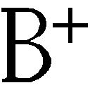

| 「本当の自分」はどこにいる 自分探しの心理学 | |
| 加藤諦三 | |
| PHP研究所 (2005) | |
「本当の自分」はどこにいる
──自分探しの心理学
加藤諦三
○ 本表紙図柄＝ ロゼッタ・ストーン（大英博物館蔵）
○ 本表紙デザイン＋紋章＝ 上田晃郷
ウサギは「本当のウサギとは？」とか「嘘のウサギとは？」とかいうことは考えない。私達人間だけが「本当の自分はどこにいる」と悩む。
それはウサギは他のウサギに認められようとして頑張って自分を変える必要がないからである。
またウサギはウサギ同士のコミュニケーションが人間よりうまくいっているからである。
「人から評価されること以外には何も求めていない人」は、例えば職業選択でどういう間違いを犯すだろうか。
それは自分が高所恐怖症なのに高層ビルの窓拭きになろうとするような間違いを犯す。
どうも自分が生きている気がしない。
生存としては生きている、しかし実存として生きていない。
そんな時「本当の自分はどこにいる」と悩む。
確かに「本当の自分」に出会えなければ生きていることは辛い。毎日シャンパンを飲んでいても、生きることは辛い。
社会的に成功しても自信のない人がいる。社会的に成功していなくても自信のある人がいる。
それは自分の本性に従って成功したかどうかということである。自分の本性に従ったことをして失敗しても人は自信を持って生きていられる。
自分の本性に逆らって気に入られようとすると、どうしても自分で自分を軽蔑してしまう。そして自分で自分を軽蔑すると、傷つき 易 さをはじめ様々な病的な心理現象が表れる。
どのような分野でも、かなり色々な業績を上げながらも自信のない人がいる。端から見て「え、あの人が？」と驚くような人が時に自信喪失している。
ビジネスに向いていない人がビジネスで成功しても、「私の人生は何かおかしい」と感じる。自分の人生に意味や価値を感じることは出来ない。自信を持つことは出来ない。
だから会社でエリートコースに乗りながらも時にうつ病になったり燃え尽きたりする人がいる。悲惨な例になれば自殺さえする。
自分の人生に意味を感じ、自信を持って生きるには自分探しは大切である。
しかしこの自分探しで全ての人生の問題が解決出来る訳ではない。
最近「自分探し、自分探し」とよく言われる。生きるのが辛くなると自分探しをする。
まるで自分探しをして、「本当の自分」に出会えさえすればそれで全ての問題は解決し、生きるのが楽になると思っているかのようである。
自分探しが人生の魔法の杖であるかのごとくであるが、「自分探し」は魔法の杖ではない。
今の時代、「自分探し」の必要な人が「自分探し」をしていないで、「自分探し」などと騒ぐことがお 門 違 いな人が、「自分探し、自分探し」と騒いでいることが多い。
私はこの本で「自分探し」ばかりをして気持の落ち着かない人々の症状を「自分探し症候群」と呼ぶことにした。
その背景には現代人の深い孤独感がある。ニートと言われる人も、その背後にはコミュニケーションの崩壊がある。
もちろんこの本はそれらの現象の解説書ではない。ニートを含めて「いかに生きるか」という視点で書いた本である。従ってニートなども学校から就職への社会的条件整備というような社会学的視点からではなく、コミュニケーションの崩壊と回復という視点から考えた。
「本当の自分」で生きることが望ましいという時に、「ありのままの自分でいい」というように誤解されることがある。
自分のマイナスの感情を吐き出すことと、自分を磨くことの二つのバランスがとれて人は充実して生きていかれる。
「ありのままの自分でいい」というのはその通りであるが、それは「自分を磨く」ということと相補って意味がある。その視点がないと生きることが 虚 しくなり、人生に意味と価値を見失う。
確かに「ありのままの自分でいい」ということは大切なことである。例えば子どもに恐怖をしゃべらせてしまうことは大切である。こもるからより怖くなる。そしてひきこもる。
大人でも恐怖や怒りの感情を出してしまうことは大切である。長いこと怒りの感情を出せないからうつ病になったりもする。
ただ「ありのままの自分でいい」というだけでは時に単なる 我 が 儘 を許容することになり、生きる基準を見失い、いよいよ自分で自分が分からなくなる。
「ありのままの自分でいい」ということが特に許される人は、小さい頃から人間関係の中で苦しめられて生きてきた人達である。
自分の感情が許されないで、内面的心理的にも従順を 強 いられて生きてきた人達である。
いつも責められて生きてきた人達である。
嫌いな時に嫌いと感じることが許されなかった人、好きな時に好きと感じることが許されなかった人、イヤな時にイヤと感じることが許されなかった人、相手の都合に合わせて 迎 合 することでしか生きてこられなかった人達である。
親の過干渉に苦しめられて生きてきた人達である。
「ありのままの自分でいい」というのは、努力することを大前提として生きてきた人達である。
この大前提の努力をしないで生きている人に向かって、「ありのままの自分でいい」と言えば、我が儘になるだけで、本人もどう生きてよいかますます分からなくなる。
放任で生きてきた人達に「ありのままの自分でいい」と言えば、野生の猿になりかねない。
放任で生きてきた人に必要なのは「自分探し」よりも「自分創り」である。ただこの本では、これらのこと全てを「本当の自分はどこにいる」というテーマに含めて考えた。
百 合 は百合、 牡 丹 は牡丹である。百合は百合として生まれて、百合として育てられて幸せになれる。そうすれば「本当の自分はどこにいる」などと悩まない。
牡丹が必死になって百合になろうとしている時に、生きることが辛くなる。その辛い時に「本当の自分はどこにいる」と悩む。
また牡丹が牡丹として生きている時に、素晴らしい牡丹になるためには少し苦労が多いということで、自分は「本当の自分」として生きていないのではないかと思う。そして「自分探し、自分探し」と騒ぐ。
こういうタイプの人は、「ありのままの自分でいい」ということを口実に「本当の自分」であることの厳しさから逃げているだけである。根本的に人生を勘違いしている。
「自分探し」が必要な人と、「自分創り」が必要な人がいる。
「本当の自分」で生きている時には、自分に自信があり、かつ人々の幸せに貢献出来る存在になる。
周囲の人を居心地良くすることが、あなたの責任ではないが、「本当の自分」で生きる時には自然とそうなっている。
従って真の意味で「ありのままの自分でいい」ということは、肥大化した欲望を許すことではなく、 自 ずから社会に貢献出来る人間になっていくということである。
他 人 と自分とは違う。だから誰が何と言おうと、自分は自分であればいい。
そして他人とは違う「本当の自分とは何か」を具体的に考えようとしたのがこの本である。
あなたは今までにずるい人のお気に入りになるためにどれだけ消耗したことか。そしてその度に「本当の自分」から離れていった。その結果どれだけのストレスと、どれだけの不幸を味わってきたことか。
「本当の自分」から離れるということは、自分が生まれつき持っている性質をずるい人に気に入ってもらうために変えることである。
不幸なことに、そうした真面目な人の中には「自分は自分であればいい」と感じることが出来ない人が多い。
「自分探し、自分探し」と騒ぎ出したのは、おそらく多くの人が、経済的繁栄の中で、自分の人生に価値と意味を感じなくなり、何となく生きるのが辛くなり出したからであろう。
経済的価値を唯一の価値として安易に生きる思想が広まり、皆が楽な生き方をしながらもっと幸せになりたくなった。
しかし「自分探し」は魔法の杖ではない。「不幸せではないが、何かつまらない」、そういう人も増えてきた。
コミュニケーションが崩壊し、人々が自分の人生に意味を見失った時、「自分探し」が目的になった。
「自己充足、自己の可能性の実現はしたがってけっして自己目的であるとは考えられません。そして、人が自分の人生のほんとうの意味を見うしなったとき、はじめて、自己の充足が結果としてでなく目的として念頭に浮かぶのです」 （註１）
この本の目的は、それぞれの人が真の意味で「本当の自分」を見出し、そしてエネルギッシュに生きられるようになることにある。
真の意味での「自分探し」を 怠 ると、人生の最後には孤独という悲劇が待っている。そうならないための本である。
「本当の自分」はどこにいる● 目次
第１章 「本当の自分」で生きるとは
何かをしている時に楽しければ、それが「本当の自分」。
「自分探し」は、自分は世界に一つと気がつけばいい。
大学を中退しようが、卒業しようが、世界に一つしかない自分の人生。
「本当の自分」で生きていれば、リストラされても気持が落ち着いている。
本当の自分でいる時には何をしても面白い。「本当の自分」で仕事をすると、気持が落ち着く。本来の自分がすることをしていると、気持が落ち着く。
「本当の自分」で生きていると、ものが見える。
「長所を発揮している時は、他のブレイン・スタイルの誰とも似通っていない。あなたは完全に自分自身であり、他人は、その完全なあなたは他人とは違うことに気づく。
長所に集中し続けるように。あなたが最も価値をもたらす、長所を活用するのに必要な規律は、自然に分かる。
好きな事に集中している時には、競争したり不適当に行動したりしない。あなたは、人の為に役立つような、能力の使い方を見つけるだろう」 （註２）
頑張っても成果の上がらないことがある。
逆に楽しんでいるのだけれども、成果が上がる時がある。それが「本当の自分」で生きている時である。
訳もなくいつも辛い時には「本当の自分」で生きていない。
ただ、「自分探し」は「あー、これで自分は光り輝く」というものではない。
眠れない自分が「本当の自分」。眠れない時に、自分は「本当の自分」を見つけられないからこうして苦しんでいるのだと思う。
人間は様々な感情がある。恐れの感情もあれば、 妬 みの感情もある。弱いのが人間である。
それなのに「本当の自分」を見つければ、それで自分は強くなれると思う。
眠れなくて苦しんでいる自分が「本当の自分」なのである。
何か恐れていると、それは「本当の自分」ではないと思っている。
そんなことでビクビクしているのが「本当の自分」なのである。
「理想の自分」を「本当の自分」と勘違いをしている人がいる。
隣人からの苦情に苦慮している自分が「本当の自分」なのである。
もともとスーパーマンはいない。小さなことにクヨクヨするのが「本当の自分」なのである。
それを小さなことにクヨクヨしている時に、これは「本当の自分」ではない、「本当の自分」を見つければクヨクヨしないと勘違いをする。
そう考えているといつも不満であり、早く「本当の自分」を見つけようと 焦 る。
誰でも劣等感はある。
「理想の自分」と「現実の自分」とのギャップなど誰にでもある。
心配することがあれば誰でも眠れない。誰でも心配事があれば、昼間は昼間でそれに気を取られてぼーっとしている。仕事に集中出来ない。
何か 些 細 なことでイライラすると、こんなことですぐにイライラするのは「本当の自分」で生きていないからだと解釈する。
何か気持が焦ると、それは「本当の自分」で生きていないからだと解釈する。
他人の一言で不愉快になると、それは「本当の自分」で生きていないからだと解釈する。ふとした拍子に落ち込むと、それは「本当の自分」で生きていないからだと解釈する。
人は誰でも物事が自分の思うようにいかないことがあると、怒ったり、不愉快になったり、焦ったり、イライラしたり、 憂 鬱 になったりする。
そしてその責任をどこかに転嫁出来れば心理的に楽である。だから人は何か思うようにいかないとすぐに他人のせいにする。
ことに子どもはすぐに責任転嫁をする。それはまだ責任を背負うだけの心理的能力がないからである。
実は「それは『本当の自分』で生きていないからだ」と解釈するのも同じなのである。
心理的にも肉体的にも疲れ果てたとする。
しかし今日はもっと仕事をしなければならない。しかも今日の仕事の成果は自分の将来に影響する。それくらい重要な仕事である。
そんな時に人は焦る。 一 休 みして仕事に取りかかろうとするけれどもなかなか休めない。横になっても神経が緊張している。不安な緊張を解消しなければ、寝ようとしても寝られない。
こんなに消耗してしまったのは「あいつのせいだ」と責任を転嫁出来れば心理的には楽である。しかしなかなか責任転嫁をする人が見つからない。
そんな時に「それは『本当の自分』で生きていないからだ」と解釈すれば、心理的に楽になる。
今、自分は「本当の自分」で生きていないということに責任を転嫁する。
人は苦しい時にその苦しい原因を突き止め、このために苦しいのだと思いたい。
そしてそれが人なら、その人を 恨 む。そうして心理的に苦しみを解決しようとする。
また、「本当の自分」ではない今の生き方が、苦しみの原因であると思えれば、何となく納得出来る。
しかしもともと人間はスーパーマンではないのだから、人と意見が衝突すれば、不愉快になることもある。チョットした相手の不機嫌で悲しくなることもある。期待したことが実現しなければ、憂鬱になることもある。
誰でも不安な緊張が続けば、心身共に消耗する。そして心身共に消耗していれば、人とのいさかいも増える。それが人間である。
これは何も今の自分が「本当の自分」ではないからだという訳のものでもない。
「本当の自分」ではない生き方、ということに全ての苦しみの原因を持っていってしまうと、逆に「本当の自分」が見えなくなる。
「本当の自分」で生きていても、イヤな気分になることがある。「本当の自分」で生きていても、人となかなかうまくいかないことがある。気持がしっくりいかないことがある。
人はそうして生きている。
「本当の自分」を見つければ、いつも気分 爽 快 で、元気 溌 剌 で、愉快な気持でいられると思うのは間違いである。
そうなると「本当の自分」が魔法の杖になる。今までの本にも書いたが、人生には魔法の杖はない。
人生に魔法の杖を求めるのは、むしろノイローゼ気味の人である。
人は色々なことで不愉快になる。「このことをしたらあの人に認めてもらえる」と思ったのに認めてもらえなかった。
そんな時に誰でも傷つき、不愉快になる。情緒的に成熟していればその程度が軽いし、情緒的に未成熟であれば、深く傷つく。
その心の傷の深さは異なるが、「このことをしたらあの人に認めてもらえる」と思ったのに認めてもらえなければ、誰でも落ち込む。
その情緒的未成熟を、今の自分は「本当の自分」でないからだと原因をすり替えてしまうと、自分を見失う。
親しい人と 口 喧 嘩 をした後に落ち込まない人などいない。落ち込まなければその人とは心が触れ合って生きていないのである。心理的に正常であれば、心理的に健康であれば、落ち込む。イヤな気持になる。
数日後にはお互いに気持よくなれると思っても、それで今の落ち込んだ気持が解決出来る訳ではない。それが人間である。
親しい人といさかいをすれば誰でも暗い気持になる。いつもいつも明るい気持でいられる人などいない。
そして誰でも暗い気持になりたくて暗い気持になる訳ではない。明るい気持でいられればどんなに良いだろうと思いながらも、やはり喧嘩をすれば暗い気持になってしまう。
「これではいけない」と思いながらも暗い気持になる。もっと優しくならなければと思いながらも、優しくなれない。
誰だって「助けてくれー」と叫びたくなる時がある。そして誰も助けてくれないで、暗い絶望の 淵 に追い込まれる時がある。
情緒的に成熟していたって、「どうしてオレのことを分かってくれないんだ」と心理的にパニックになりそうな時がある。
周りの人は自分のせっぱ詰まった状況を理解してくれないと追い込まれた気持になり、自分一人で危機意識を持って、心理的にパニックになりそうな時がある。
そんな時に、「もし私が『本当の自分』を見つけていれば、こんなにイライラしない」と解釈するのはおかしい。誰でも周囲の無理解で気がおかしくなりそうな時はある。
人はいさかいをしたくていさかいをする訳ではない。
「自分探し症候群」の人は、基本的に人間について誤解がある。
生きることは誰にとっても辛い時がある。
「本当の自分はどこにいる」症候群になっている人は、本当にせっぱ詰まった状況に追いつめられた体験がない。自分が逆に周囲の人をせっぱ詰まった状況に追い込んでいるという側面があるのではないだろうか。
ひきこもりの親達や、ニートの親達は、もう心理的に限界にきている。
親達をそこまで追い込んでいながらも、自分達はそのことに気がつかないで、「本当の自分はどこにいる」と叫んでいる。
もちろんひきこもりの親達や、ニートの親達には責任がある。そうした意味でお互いに親子で共食いをしているような関係であろう。
早くこの状態を脱出しなければならない。
第２章 なぜ〝 偽りの自分〟 を演じてしまうのか
自分探しをしていて、「自分が見つかった」と思ったけれども、実は全く反対で「自分を見失った」だけということがある。
「本当の自分」を見つけたというのが錯覚の場合、いよいよ迷路に入り込む。
自分を見つけるためには、自分に責任を持たなければならない。
無責任のうちは自分探しをしても「本当の自分」が見つかることはない。見つかったと思うのは、錯覚である。逆に自己消滅とさえ言える場合もある。
ヒトラーの第三帝国の演出者と言われるナチス宣伝相ゲッベルスのことを書いた本がある。そこでは「そもそもゲッベルスのようなあらゆることが見えてしまう明晰な頭脳が、ヒトラーごときの命ずるがままになるなどということがありえようか？」 （註３） と疑問を投げかけた後に、次のように答えている。
「ヒトラーの人格の中にゲッベルスは多くの歳月、無意識のうちにたずねあぐねていたものを見出した。一切の責任からの解放、決断に追いこまれるという煩わしさからの解放、そして自己自身からの最終的な逃亡」 （註４）
ゲッベルスは「自分探し症候群」で不安なのである。そしてヒトラーとの関係に 絆 を見出した。
ゲッベルスは、ヒトラーと出会った時に、とうとう「本当の自分」に出会えたと思ったに違いない。
「これで私は救われた」と思ったであろう。
しかし心理的にはこの時ゲッベルスは、「本当の自分」を完全に自分の意識から追放出来たということである。
彼のヒトラーに対する感情をどう評価するか。
それは彼の極度な依存性から生じたものであり、無力感であろう。
彼の言動は、その無力感の克服のための言動であり、依存性を満足させるための言動であろう。
よく「自分の頭で考えろ」と言うが、「自分の頭で考える」ということが可能であるためには、まず自分自身の人生に責任を負うということが出来るまでに心理的に成長していなければならない、ということである。
オウム事件の時に、多くの人が『ゲッベルス』の著者と同じように、「なぜ高学歴の人がかくも 易 々 と麻原ごときに 騙 されてしまうのか？」と疑問を投げかけた。
このような発言は「考えること」は情緒的に未成熟な感情から自由だという前提にたっている。
「考える」というとすぐに頭で考えることだと思いがちだが、「考える」ということは決して頭だけで可能なことではない。
少なくとも頭が働く条件として心理的成長とか情緒的成熟というものがある。
オウム裁判で裁判官が「自分の頭で考えるように」と被告達に言ったと伝えられる。
しかし信者に母親固着がある以上、それは無理である。権威主義的人間には判断力がない。彼らにとっては「考える」ということは、 近 親 相 姦 的固着を合理化するためのものでしかない。
ゲッベルスと同じように社会的問題を起こす新興宗教の信者集団は、「自分探し症候群」である。
そしてカルト集団に出会った時「自分を見つけた」と思う。しかしこの時に、実は完全に自分を放棄したのである。その時に「本当の自分」を見失ったのである。
こうした宗教は、現実をいかに生きるかを教える宗教ではなく、現実からいかに目を 背 けて生きるかを教える「宗教」である。
母親固着とは
母親固着の問題は『「正義」と「憎しみ」の構造』 （ＰＨＰ研究所） にテロリストの心理として詳しく述べたので、ここでは「本当の自分はどこにいる」という観点から簡単に説明をしておきたい。
「万一、人間が――男も女も――その生涯を通じて『母なるもの』を見つけることができれば、その生涯は負担と悲劇から解放されることになろう。人がこれほど容赦なくこの《幻影》 （fata morgana） を求めて駆りたてられるということは、驚くにたりるだろう」 （註５）
ある人は母なるものの代理を国家に求める。また別の人は母なるものの代理を宗教に求める。
多くの場合この母親固着のエネルギーは執着のエネルギーになる。
勤勉な執着性格者のエネルギーがこの母親固着のエネルギーである。家庭を犠牲にして仕事、仕事と騒いでいた一時代前の猛烈サラリーマンのエネルギーがこの母親固着のエネルギーである。
現実の母親から得られなかったものを仕事とか会社とかから得ようとしているのである。
だから会社のスキャンダルで、会社を守ろうと「会社は永遠です」と叫んで自殺していったビジネスパーソンがいるのである。そう叫んで自殺していったビジネスパーソンにとって会社は「母親」なのである。
「会社は永遠です」という叫びは、「おかーさーん」という叫びである。母なるものを持った母親から愛された人が、何で会社のスキャンダルで「会社は永遠です」と叫んで自殺していくだろうか。
それはイスラム原理主義者が「神は偉大なり」と叫んで死んでいくのと同じである。
母親固着のエネルギーの不可思議は、近代の合理性などで律しきれるものではない。まさにエーリッヒ・フロムが言うようにそれはフロイドの考えた性的欲求よりもはるかに強度で、かつ根源的なものである。
合理性というのは母親固着が解決した後で有効に働くものである。
そこを理解しないとカルト集団もテロリストも政治的過激集団も、家族も何もかもを犠牲にして働くビジネスパーソンも理解出来ない。
「確実性と防衛と愛情を与えてくれる力を、狂気のごとく希望することよりも、より自然なことが人間にありえようか？」 （註６） とフロムは言う。
人は安全と確実を確信出来るものを得るためなら、そのために猛烈なエネルギーを注ぐ。
テロリストのエネルギーはこのフロイドの言う母親固着のエネルギーである。テロリストも自分のコンプレックスとか 淋 しさを「イスラムの大儀」で 癒 そうとする。
母なるものへの願望を満たされた者はこのような愚かなことをしない。しかし人生の危険と負担を十分に背負いきれない大人にしてみれば、何か確実なものが欲しい。
フロムが言うようにまさに幼児だけが無力で確実性を求めているのではない。大人も同じなのである。
世界で最も恐れられているテロリストのオサマ・ビン・ラーデンは自分の行動の動機を「宗教的信念」と主張しているようであるが、この宗教的信念というのが「母なるもの」の代理満足である。
そしてこのオサマ・ビン・ラーデンのアメリカ人を殺すという情熱こそがフロムの言う「母親に対する愛着――一般人には滅多に完全に克服されない愛着――には巨大なエネルギーが内包されている」 （註７） というエネルギーのことである。
フロイドが述べたごとく人は生まれながらにしてこの近親相姦願望を持っている。母なるものへの願望である。これが仏教で言うところの 煩 悩 のもとである。
この煩悩を一気に解決してくれるのがイスラム・テロリズムであり、カルト集団であり、政治的過激集団であり、「本当の自分はどこにいる」と悩んでいる人が見つけた「これこそが、本当の自分だ！」である。
イスラム原理主義という思想を「母なるもの」の代理として求めた時に、イスラム原理主義はイスラム・テロリズムになるのと同じように、「本当の自分はどこにいる」という考え方を「母なるもの」の代理として求めた時に、「本当の自分はどこにいる」という考え方は、その人の人生を破滅に導く。
近親相姦的衝動は、「男女ともに最も基本的な熱情のひとつであり、それには人間の防衛本能、自己のナルチシズムの充足、責任、自由、意識性に随伴する負担から逃れようとする渇望、無条件の愛への希求などが含まれる。こういう欲求が一般には幼児に内在することは事実であり、母親がそれを充足させてくれるのである」 （註８） 。
「無条件の愛への希求」とは自分の無理難題を解決してくれる人への希求である。
大人になってそんなことをしてくれる人などいるはずがない。
でも人はそれを求めている。
だから幼児だけが無力なのではない。大人も同じである。大人も「確実性と防衛と愛情」を与えてくれる力を狂気のごとく求めている。いやむしろ大人になればなるほど困難なことに直面するから、それを求める。
近親相姦願望が満たされていなければ、大人になればなるほど母なるものを求めると言ってもいい。
先にゲッベルスのことについて書いたが、同じことがナチスの若者達にも言える。彼らがヒトラーに出会った時に何を感じたか。「自分の一生を捧ぐべき大義名分を持つことが出来た」 （註９） 、「私の生活に意義と目的とを授けてくれた」 （註10 ） 。
政治的過激集団やテロリストに限らず、狂信的集団と言われるものがどの社会にもある。それがまさにフロムの言うように、母なるものを「狂気のごとく希望する」姿である。
しかし生きていることの確実性とは毎日のたゆまぬ努力から感じられるものである。自己実現を目指して日々をきちんとリズムに乗って規則正しく生きなければ心の安定感が得られないし、確実性を感じることは出来ない。
私は高校時代は嘘の自分で生きていた。英語の大辞典を暗記した。よく勉強をした。徹夜で勉強をした。
しかし楽しい勉強をしていない。無理をしている馬鹿な勉強だけだった。
高校時代「本当の自分」で生きていれば、卒業後もよく高校に行き、自分の高校の校庭で、しみじみと涙してたたずむ。
ある人がふるさとに帰った。故人となった父親と食べたおいなりさんを、食べたいと思った。そして行きつけの寿司屋で同じおいなりさんを食べる。
小さい頃遊んだ公園に行った。公園で「アリとこうして遊んだなー」と思い出す。
小さい頃「本当の自分」で生きていたら、その時のアリを思い出す。
「この電車、あれーこういうところ行ったことがあったなー」と思い出す。
「本当の自分」で生きていれば小学校の時を思い出しても、中学校の時を思い出しても、高校の時を思い出しても、語るものがある。
母親の作ってくれたお弁当。
「何とかと何とかとを食べると母親を思い出す」というのが「本当の自分」で生きていた 証 である。
母親が 鰹 節 を振りかけてお弁当を作ってくれた。それがその人にとってお寿司。
その時その時で感情がチャージされているから、昔を懐かしく思い出す。
「本当の自分」は感動している時の自分。
「最近、下駄ってないわよねー、あー 花 林 糖 があった。あげパンが給食に出た」と 止 処 なく懐かしそうに過去を語る人がいる。
しかし「本当の自分」で生きてこないと、懐かしく語るものが何もない。
あるエリートビジネスパーソンが、昔についてこう言った。
「何か言えと言われても、何にもないのに」
「楽しかったでしょう？」と聞かれても答えられない。
「楽しい」ということはどういうことか分からない。
「どこへ行ったの？」と聞かれてもなかなか思い出せない。過去の記憶はあまりない。
それは自分の意志で行っていないから。だから忘れる。
本当の意味で苦しいも悲しいもない。
大学にいても大学にいなかった。就職して会社にいても会社にいない。
そのように生きてきてしまった人もいる。
私自身、若い頃を振り返って、「本当の自分」で生きていなかった時代は余りにも長い。
これから挙げる文章は、『俺が本当につかみたいもの』という題で私が二十代半ばに書いたものである。
まだ心理的には大人になり切れていない学生時代である。まさに「自分探し」の青春時代である。
大学生時代に私はクラブとしてはワンダーフォーゲル部と東南アジア研究会という二つの部に属していた。
大学の四年生の時の話を、自分が書き残したものから分析すると自分が見えてくる。
当時私は就職が決まらないまま、クラブ活動を中心にキャンパス生活を続けていた。
就職の時期になると私は本当は就職に関心があった。ところが自分が望んだ就職が出来そうにない。
そうすると「学校に行くと、皆は就職のことで騒いでいたが、僕にはむしろ遠くかすんだことだった」と虚勢を張ってしまう。
そこで何とか次の生き方を模索していた。おそらくこれが本当のところなのである。
こうして落ち着いている「ふり」をしていただけで、心の底は普通の学生以上に落ち着いていない。
当時の私は学生生活に満足を感じていない。そのうえに人が怖いから、したいことが見つからないし、見つかっても出来なかったのである。
ガンになったある人が言った。
「自分が本当に欲しいものが欲しいと気がついた時には遅過ぎた」
自分は、こういうことをしたいと思ったけれども、これまで人のことを気にして、今のままに甘んじた方がいいのかなと思ったと言う。
「今になって考えれば、すればよかった」
しかしその当時は「周囲の人が怖かった」と言う。
人が怖いうちは「本当の自分」で生きられない。
もし私が先の文章のような生き方を本当にしていれば、私は大学卒業後、もっと大学を訪ねているはずである。
私が卒業後にあまり訪ねないのは、「訪ねる古きもの」がないからである。
極端にいえば、過去が空白。
人は古きを訪ね、そこでエネルギーが湧く。
「本当の自分」で生きてくれば、社会的に成功しても失敗しても、古きを訪ねてエネルギーが湧く。
「本当の自分」で生きてくれば、心の中に生きてきた証がある。証がある時に「本当の自分」で生きてきたといえるのだ。
過去は郷愁を帯びる。
実存として生きていれば、いつの時代にも郷愁がある。
精一杯生きた実存としての自分がそこにいる。
当時のことがどのくらい「懐かしいなー」と思えるかが、その時の自分がどのくらい「本当の自分」であったかということである。
ただ、大学生の時代に私は自分が「納得した生き方」がしたかった。つまり別の言葉でいえば、「自分探し」をしていたのである。
ところが今から考えるとその「納得した生き方」が自分にも分からなかった。「本当の自分」が、どういう自分か分からなかった。
どういう生き方をしたら本当に自分が納得出来るのか理解出来なかった。
そこで「自分の良心に従って」或いは「真実を求めて、真実を求めて」と騒いでいるのである。
嬉しい時に、嬉しいと感じることが出来ない。悲しい時に、悲しいと感じることが出来ない。それが続くと好きも嫌いも悲しいもなくなってくる。
普通は意志がなければ生きていけない。
しかしこうして従順に生きて感情 鈍 麻 になると、自分の意志があったら怖い。人と意見が違うのが怖い。そこで自分の意志や五感を凍結する。
生きているのに生きていない感覚である。いわゆる存在感喪失症状といわれるものがそうであろう。
花を見ても何も感じない。
しかしイライラは無意識にある。
戦場の死体を見て「わー残酷」と思わない。
あるエリートビジネスパーソンは「それは写真ですから」と言った。
ある意味で私はニートの大先輩のようなものである。
望む就職が出来ないので、「真実を求めて、真実を求めて」と騒いでいる。
私がニートと違ったのは、おそらく勉強したり、クラブ活動をしたりと表面的にはもの凄くエネルギッシュであったことだと思う。
ただ心は似ているところがあった。
ニートは働くことも勉強することもしない。そしてプライドだけは高い。
だから「なぜ生きているかが分からないのに、就職をしたってしょうがない」というようなことを言う。
私のゼミの学生が、インターネットで「働いたら負けだ」と言っている若者がいるということを紹介してくれた。
こういう人がニートである。
生きがい探しの人生ゲームに旅立つ前に、さいころが振れなくなった若者、おそらくそれがニートであろう。
今ニート、ニートと世の中は騒いでいるが、 傍 目 には明らかなニートでも、本人はニートだと自覚していないケースも多いのではないかと私は思う。
では仕事もしない、勉強もしないニートは何を求めているのか？
それは「認められること」である。
『ニート』という本に、あるニートの話が出ている。その人は社長から「正社員にならないか」と言われたが、ならなかった。その彼の言うことは「面白みがないんですよね。 （中略） 自分はもっとできるんじゃないか、なんか違うことできるんじゃないかと思っちゃうんです」 （註11 ） と言う。
要するにここで彼が言いたいのは、「社長は自分を認めている。僕は社長を認めていない」ということである。もっとはっきりと言えば「レベル低いところですからね」ということである。
彼の心の底には何か憎しみがある。頑張らないで「自分探しだ、自分探しだ」と言っている。
「一般に人間の現存在において 自 己 充 足 や自己実現が問題になる場合、それらは た だ 結 果 と し て 達せられるのであって、 意 図 し て で は あ り ま せ ん 」 （註12 ）
「自分探しだ、自分探しだ」と言っているニートが、周囲の人から本当に言ってもらいたいのはどういう言葉か？
それは「そんなに仕事や人生を真剣に考える若者なんて、今時いない、凄いなー」である。
そう言ってもらいたい。そう 誉 めてもらいたい。そう誉めてもらえれば頑張るのではないだろうか。
私自身、「自分探し」の時代にそう誰かに誉めてもらいたかった。
当時の私も今のニートも、小さい頃から、反応のない人生を送ってきた。
「自分探し症候群」の人は反応のない世界にいる。
何をしても誰も本気で誉めてくれない。
人は怒られても、悪いことをする時がある。何か反応を得るためなら悪いことでもする。
目をつぶって何にもあたらないで歩いているよりも、ぶつかった方が歩いている感じがする。
怒られても、人が反応してくれる方がいい。
私は大教室で学生に怒ったことがある。「出ていきなさい」と怒鳴った。私は学生の反発を予想したが、それを覚悟で怒った。
ところが驚いたことにその期の試験の時に、「初めて真剣に怒ってくれた」「初めて大学で真剣に勉強しなければという喜びを感じた」などと多くの学生が答案に書いてきた。
パチンコ依存症の人に話を聞いたら、「あたるとピーポピーポと騒ぐ、その反応がたまらない」という趣旨のことを言った。
何と「パチンコは励ましてくれる」と言った。
ピーポピーポは応援歌。ライトはつく。現実を忘れさせてくれる。
だからトイレに行く時間も惜しんで、一〇〇万円も使う人がいる。
それはパチンコやパチスロが「あなたステキよ」といつも言ってくれるからである。
ある店のある台が出るとなると東京から茨城まで行く人がいるという。良い台を探して遠くまで行く。
そこまでするなら普通のビジネスパーソンになって勤めをすればいいと普通の人は思う。
しかしパチンコで稼いだ方が「稼いだ」という実感があるのだそうである。
パチンコ依存症に 陥 るのは、反応が嬉しいからである。
すぐにお金が手に取れる。その実感である。
私は時に一〇〇〇人の前で講演する。でもラジオの「テレフォン人生相談」を聞いている人の方が数は多い。
ところが、ラジオの方が多くの人が聞いてくれるにもかかわらず、「聞いてくれている」という実感があるのは聴衆の少ない講演なのである。
すぐに反応があるのがいい。聞いている人の顔色や笑いや目線など、色々と反応はある。
今のコンピューターを駆使した戦争は、実感がない。戦争も昔の武士のように剣を持ってお互いに向き合った方が戦いの実感はある。
競馬もすぐその場で結果が分かる。
その一瞬悩みを忘れる。
もう一つ、ニートと言われる人は若い頃の私と同じように納得のいかない人生を生きてきた。
ニートは自分の人生に納得していない。納得した時間の使い方をしていない。納得して時間を使っていない。彼らには納得した一日がない。
恋愛でも納得して恋愛をしていない。
勉強したくないけれど勉強していた。彼らの勉強はそういう勉強である。
遊びも納得していない。遊びたいから遊んだのではない。誘われたから遊んだだけ。
何となく高校に行った。何となく大学に行った。
「コーヒーをごちそうするから」と言われると、その人の後についていってしまう。
リンゴを食べなさいと言われて、リンゴを食べた。
こうした小さいことが積み重なってニートになった。こうしてフリーターになった。
ニートは自分の心の中に築いたものがない。
好きな食べ物がない、好きな匂いがない、「あの時のあの匂い」というのがない。
「いつもどこにいるの？」と聞かれても、どこにもいない。
社会的な位置が変わっても、心の中は同じ。カラッポ。
それが「心の中に築いたものがない」ということ。
「あそこから離れたら悲しい」というところがない。
「あそこにあった重苦しい雰囲気、匂い」がない。
納得していない生き方というのは、何も就職活動にばかり表れるのではない。すでに高校時代に表れている。
例えば、高校生の大学選びや学部選びの悩みによく表れてくる。
つまり納得しないで、大学に入ってくる。
その原因は本人の優柔不断とか無責任である。
「実際の自分」は優柔不断とか無責任である。
しかし彼らは自分の優柔不断が悩みの原点であることを認めない。
例えば、ある大学に入りたかったが、ある学部に行きたかったが、親が反対したから、行けなかったと言う人がいる。
もっと 酷 いのは先生が勧めたからこの学部に入ったという人である。
その結果、大学に入ってから終わりなき「自分探し」の旅が始まる。
親が何と言おうと、もし本当に入りたいなら、その人はそこを目指している。
「親が」と言う人は「絶対にここに行きたい」という学部がないからである。
高校生の進路の悩みを聞いて感じることは、「格好つけた悩み」が多過ぎるということである。みんな進路についての悩みには、真剣な「ふり」をして本当にあまり真剣には考えていない。
言葉は「いい加減に考えたくない」であるが、本質的には「いい加減に考えているだけ」である。そしてそれを認めない。
また「私立大学に行きたいが、経済的事情から国公立に行く」という人もいる。
自分は「本気で、あそこに行く気がなかったんだ」ということを認めれば、自分が見えてくる。そしてやがて自分のいる大学に納得する。そうすれば卒業して社会で働き出してからいつまでも「自分探し」の旅を続けるような人にはなっていない。
妥協すると原因を他に求めてしまう人は、「自分がこの大学にいるのは家の経済のためだ」と言うようになる。そこが原因になって「自分探し症候群」になる。
大切なのは、納得。
言い訳は絶対ダメ。自分が勉強しないことの言い訳が進路の悩みになっている。難しい言葉を使えば、勉強したくないということを合理化するために「進路問題」を持ち出している。
やがて長い人生ではツケが来る。将来自分が分からなくなる。その時「本当の自分はどこにいる」と悩んでも、どこにいるか分からない。
卒業して就職してからも悩みはつきない。
最近しきりに言われるニートがこれである。
あるニートの女性は大道芸をやりたいと言う。
そして次の 台詞 である。
「親が悲しむんですよ。親を悲しませてまでしたくないですから」 （註13 ） と言う。
ここで「親が悲しむんですよ」と最後が「よ」で終わる言い方が問題である。
私の推測ではこの人は、この大道芸が本当に好きではない。それを親のせいにして、大道芸をしない。その心の 歪 みが「○○ よ」という言い方に表れている。
「親を悲しませたくない」と言うことで自分が「いい人」になれる。
自分が「いい人」になりながら現実から逃げることが出来る。
もし彼女が本当に親を「悲しませたくない」ということで、大道芸人にならないのなら、彼女は「自分自身であること」を恐れている人である。
人は「自分が自分であること」によって、自分も周囲の人も皆が幸せになれるのである。
彼女は自分の人生で「本当に何をしたいのか」も分からず、「自分自身であること」を恐れている。
「自分自身であること」を恐れていれば、全てが中途半端で最後には 八 方 塞 がりになる。
「自分自身であること」を恐れているのが、いわゆる意志のない「良い子」である。
私は今ここに登場するようなニートと言われる人々を責めているのではない。非難しているのでもない。
ニートの心理は若い頃の私の心理である。私自身いわゆる意志のない「良い子」であった。
話を大道芸人にならなかった女性に戻すと、彼女は誰に対しても「良い子」でいたい。
彼女は不誠実だから周りの人全てに「良い子」になり、そこで自分も周りの人も全て不幸にしてしまう。
「自分自身であること」を恐れて、「自分探し」の旅を続けても、終わりは来ない。
「自分自身であること」を恐れているなら、あの世に行っても「自分探し」の旅を続けているだろう。「本当の自分」を受け入れることがイヤなのだから。
おそらくニートは一度として本気で「自分探し」をしたことがない。いつも格好をつけた「自分探し」である。
「私が私自身であるならば、恐れることは何もない」 （デヴィッド・シーベリー）
猫が犬の 真 似 をしていなければ、恐れずに困難に対処出来る。
猫としての対処の仕方には幅がある。猫は犬が来たらどう逃げればいいか知っている。変な行動をしない。
猫が猫である限り自分の器の中で事を収めることが出来る。それを自分の器以上のことをしてしまうと、混乱する。
猫がライオンの顔をして歩いていれば、犬が来たら噛みつこうとする。
野原にいても心配。
猫が猫である限り自分のことを適切に守れる。無駄なことをしない。一か八かもしない。
自分を信じて自分なりの解決をする。
 悩むのは楽して生きてきたツケである
悩むのは楽して生きてきたツケである高校時代に言い訳ばかりして自分の責任を取らないで生きてくると、大人になってから「自分探し」が始まる。
どの学部にしようとか、どの大学にしようとか迷っている高校生の多くは、優柔不断なだけ。
問題は、大学選択でも、学部選択でもなく、自分の優柔不断な性格である。
自分は、この人生で責任を取りたくないということが、こうした進路の悩みの本質である。
進路で悩んでいるように見えても、実際は進路で悩んでいるのではない。自分の優柔不断な性格で勝手に悩んでいる。進路の問題がなければ他の問題で悩んでいる。
何か悩みがあるから悩んでいるのではなく、悩む心があるだけである。
大学に入れば、どのクラブに入るのかで悩む。勉強に時間を 割 くのかクラブ活動に時間を割くのか、遊びに焦点を合わせるかで悩む。
進路で悩んでいると思うのは間違い。
大学卒業で就職の時になれば、「自分探し」の「どの仕事にしようか？」と悩む。
次は「誰と結婚しようか？」と悩む。さらに次は「どの家を買おうか」と悩む。
優柔不断な自分が「実際の自分」だと気がついて、それを認めていれば、どこの大学に行っても、大学では自我の確立に努力するだろう。
「自分探し」の旅は、どこかの時点でスムースに終わる。
大学進学に際して学部とか大学で、ここは就職が良いとか、色々と情報を調べている。そうして迷っている人は、実は今までの責任逃れの生き方を反省することから始めることである。
今まで無味乾燥に生きてきたことのツケである。
問題は心を動かす体験のなさである。
それを認めれば、自然とどの学部に行けばいいかとか、どの大学にしようかという迷いはなくなってくる。
問題は体験のなさと優柔不断な性格なのだから、いくら資料を調べても迷いはなくならない。
いくら相談しても迷いはなくならない。
迷いの真の原因を突き止めればやるべきことは見えてくる。
あなたはたとえ勉強が嫌いでもこれから一人で生きていかなければいけない。
大学はこれから生きていくための知恵を 貰 うところと考えればいい。
文学部の英文科に入学したからといって誰でも英文学者になる訳でもなく、英語の先生になる訳でもない。法学部に入った人が皆法曹関係に就職する訳ではない。
大学では学部の勉強だけではなく、人間性を 培 うことも大切である。仕事だって最後は人間性が勝負。
学部にこだわるのは、自分に合った学部に行けば「楽して大学生活を送れる」と思うからであろう。
「自分探し」の心理に似ている。「本当の自分」を見つけられれば「楽して生きられる」と思っている。
学部選択に迷うのは、その年齢で当たり前である。どこの学部にしようかと考えるのは望ましいことである。
しかしそれに深刻に悩むのは、今まで本気で勉強していないからである。
それは今までの「楽して生きよう」という態度のツケでもある。
勝者と敗者を分けるのは「悩むこと」と「考えること」の違いにあるとアメリカの心理学者デヴィッド・シーベリーは言っている。
本気で勉強する気なら、ある範囲でならどこの学部に行ってもそれほど大きな違いはない。
それに本当に勉強すれば、自然と行きたい学部は分かってくる。それからその学部に行くのでもよい。
自分について何も分かっていないうちから、どこの学部がよいか、悪いかを、考え過ぎる。
「真剣に」考える自分に酔っている。本当は何も考えていない。真剣に生きていない。
それなのにどこの大学が自分に合っているかなんておこがましい。
どの学部が自分にとって「是か否か」をなぜ今すぐに決めようとするのか。
それは、これからも楽して生きようとしているからである。
しかし人生は楽して生きられない。
楽して生きようとすれば、行き着く先は地獄である。
どの学部に行くかを 大 袈 裟 に考え過ぎる。
入ったところが是、入れなかったところが否。
就職も同じ。入ったところが是、入れなかったところが否。
そのくらいに考えないと、長い人生を生き抜けない。
最近の「自分探し」の中にはどこか「楽して生きよう」ということの、単なる合理化のようなところがある。
今、私の若い頃を考えてみると、自分の意志で何かを選択して自分自身を明確にしていなかった。
ただ「納得した生き方」が分からないのが青春なのである。「自分探し」が青春なのである。
そんなにあっさりと「納得した生き方」が分かるものではない。そんなにあっさりと自分が分かるものではない。
また分かったとしてもそんなにあっさりと「納得した生き方」が実際に出来るものでもない。
私は大学生時代に自分で「何かがしたい」と願っていた。しかし自分に適するものが何であるか本当は分かっていなかった。
どう生きていいかを模索していたのである。
今から考えると、学生時代に言っていることは心理的には嘘であるが、必死になって生き方を模索していたことは確かである。必死になって「自分探し」をしていたことは間違いない。
心理的に本当の自分のことを書けば、私が先に自分自身を分析し、解説したようなことである。心理的な内容としてはその分析の方が正しい。
しかし学生時代に言っていることの中には、まさに青春がある。虚勢も青春であり、反発も青春である。
青春時代は生きることに必死なのである。
私の「自分探し」の大学生時代である。大学の学生への最初の説明が「進学は試験の点数で決めるから、よく勉強するように」というものであった。
すると「大学への期待はまったく裏切られた」と私は反発した。
私は浪人している。しかし現役で受かった人たちに「自分は負けた」ということを認めたくない。
皆と同じように受験をして一度は挫折して入ってきたというのでは神経症的プライドが許さない。
親の引いたレールをそのまま走ることへの反発をすればいいのに、それが出来ない。
「進学は試験の点数で決めるから、よく勉強するように」という大学側の説明の裏にある価値観が当時の私を傷つけた。
こういう価値観を批判することで自分の神経症的自尊心を守っていた。傷つくことから自分を守っていた。
言うなれば「突っ張っていた」のである。青春は突っ張りの時代である。
青春時代は事実を認めない。あったことを認めない。
ここに 美 味 しいものがあるのに、わざわざまずいものを食べている。
現実を認めれば、突然、すらすらと青空になる。
それを「乗り越えた」という。
私は大学生時代、残念ながら乗り越えていなかった。
もし乗り越えていれば、私は自分の長所にもその時点で気がついたろう。
人は自分の弱点を認めれば、自分の長所にも気がつく。
自分の弱点を認めないから、自分の長所にも気がつかない。
だから青空を見ることが出来ない。
現実を否認すれば、青空は永遠に見えない。
自分が大学生時代、「突っ張っていた」に過ぎないということが分かったのは大人になってからである。
とにかく青春時代は自分を探す模索の時代である。学校をサボッては放浪し、それを「自主的な行動」と書いている。
この当時の私の行動は、「自主的な行動」とは逆に、傷ついた自分を守るための「反発の行動」である。
それはあくまでも反発であって反逆ではない。反逆とは自分の考えがしっかりとあって、そのうえで時代や周囲の世界に反対をしている。
いずれにしろ「傷ついている」という時には、自分は無理をして生きている。低い自己評価に苦しんでいる時である。
傷ついた時には、「本当の自分」で生きていないと思うようにしなければならない。
「自分探し」の大学生時代、私は無理をして生きていた。だいたい「突っ張り」というのは「無理をしている」ということである。
確かに山に登った。しかしそれは、皆と同じことをしていたのでは、自分の浪人という履歴を消せないからである。
そこで放浪するというような形で自分の 面子 を保とうとしていたのである。
放浪することで皆に「偉大な自分」を誇示しようとしているのである。これがまさに間違った方法での「自分探し」である。
そのようなことをすることで自分の「神聖な魂」を保とうとしていたのである。
そしてそういう反発するエネルギーで私は学生時代から本を書いていた。
反発するエネルギーがなければ放浪もしないし、本を書くことも出来ない。
「授業にでるのが辛かったのではない。大事な青春を、くだらぬ成績の競争でついやすことを自分の心が許さなかったのである。真実の青春を求めたが故に授業をサボッたのであって不真面目な気持でサボッたのではない」
こうして放浪しなければ何のために浪人をして入学したかが説明出来ない。しかしこうして「本当の自分」からドンドンと離れていってしまう。ますます「本当の自分」から遠ざかる。
心の底では「普通の人とは違う」ということを皆に言われたかったし、それを示そうとしていた。
「一般の大学生の基準で自分を評価しないでくれ」と言っているのである。
実は表面の行動を見れば、「自分探し」である。
しかし心の世界で考えれば、「自分隠し」である。
「本当の自分」をどうしても認めたくないというのが、私の大学生時代である。
まさに「本当の自分はどこにいる」と地の果てまでも行くような行動であるが、心の世界では死んでも「本当の自分」を認めたくないということである。
認めるくらいなら、認めないで地獄で生きた方が良い。
「認めるくらいなら、死んだ方が良い」と言って死んでいったのが、『不安のしずめ方』 （ＰＨＰ文庫） で書いたヘブンズ・ゲイトのメンバーである （ヘブンズ・ゲイトとは、集団自殺をしたアメリカのカルト集団） 。
人は、傷ついている時に、現実を認めて幸せになるよりも、現実を認めないで不幸せな方を選ぶ。
「人間は皆不幸より幸福を選ぶ」という考え方が基本的に間違っている。
人間は時に幸福を前にして、必死で不幸を選ぶ。不幸にしがみつく。
「死んでも不幸を手放しませんでした」というのが現実の人間である。
ヘブンズ・ゲイトのように自らを精神的価値の追求者と誇示する者は、多くの場合世俗的なことを蔑視する。
なぜ世俗的なことを蔑視するのだろうか。それは世俗に憎しみがあるからである。世俗的なことがうまくいかない時である。
悩んでいる大学生から手紙をもらった。彼は「経済学部に入ったけれどもお金のことには興味ありません」と書いてきた。
彼は「私は世俗的なものが、たまらなく 醜 く思えます」と言った。そして「経済学が嫌いだ」と言う。それは経済学は世俗的なことを取り扱うからだと言う。
そして自然科学は美しく、 崇 高 だという。この大学生は経済学部を中退した。彼はこの世の中に大変な憎しみを持っていた。
実はこの学生は心の底では世俗的なことにもの凄く興味があった。
彼はもし大学で色々なことが思うようにいっていれば、経済学が好きで、世俗的なことを蔑視しなかったろう。自分がこの世の中でうまくいかないのは自分のパーソナリティーのせいだということをどうしても認めることが出来なかったのである。
彼は「キャンパスをチャラチャラ歩いているのは阿呆だ」と軽蔑した。さらに「結婚などする人間は孤独に弱いだけだ」と言う。
実は彼が非難するものは、本当は彼がしたいことなのである。しかし「したい」と言って、出来ないことが恐ろしい。
彼は本当は札びらを切って皆を見返したい。それが出来ないので、それを「阿呆だ」とか「くだらない」とか言っているだけである。
彼は不安だから二価値判断に傾く。全てを崇高なことと醜いことの二つに分ける。世俗的なことはそれほど崇高なことでも、それほど醜いことでもない。
また精神的なことを追求することも、それほど崇高なことでも、それほど醜いことでもない。
彼が自分は恋人がいないと受け入れれば、恋人も出来るのだろうが、恋愛を否定するから、皆に嫌われてしまう。
彼はスポーツも「ラグビーなど集団でするスポーツは嫌いだ」と言う。しかしおそらく彼は集団に憧れているのだろう。それが実現出来ないので、それを否定する。
彼は人づきあいが苦手なのである。しかし心の底では助け合う人間関係を求めている。
多くの場合これらの人達は気が弱い。
気が弱いけれど気が弱いということを受け入れられないから、勝ち気になる。勝ち気な人はなかなか安らぎを得られない。
なぜ「本当の自分」を否定するかと言えば、その方が心理的には楽だからである。
「突っ張っている」時には、「本当の自分」で生きていない。
心の底で「私は無理をしている」と感じた時には「本当の自分」で生きていない。そして「自分隠し」をしている。
表面の行動は「自分探し」でも心の世界では「自分隠し」である。
意識は「自分探し」でも無意識でしていることは「自分隠し」である。
だから、今自分が歩いている道に納得していない。
おそらく今のニートがそうである。
私は大学生時代、つまり無意識に「自分隠し」をしていた時、当たり前であるが、自分が本当にしたいものが見つからなかった。
そこで先に書いたようなストイックな生活になった。
肉体的に限界まで頑張った。これでもか、これでもかと勉強した。
ここが今のニートと違うところである。私は死ぬほど勉強したが、ニートは死ぬほど勉強していない。
必死で畑を耕すのではなく、「どこかいい町なーい？」というのが今の学生。これがニートである。
私の場合は、自分が何を求めているか理解出来ないで、自分の身を削って生きていた。だから、必要以上に悲壮感を味わう。
おそらく自分が本当にしたいことを見つけていたら私は山に登っていなかったろう。
先に述べた学生時代に書いた本の「あとがき」には次のように書かれている。
「あれだけ苦しい登山をなぜ次から次へと行ったのか？ それはそこに青春の意味を激しく求めていたからです」
そんなに苦しいなら山に登らなければいい。
しかし山に登る。
そして人がそれを「青春の意味」と言ってくれないから自分で「青春の意味」と言う。
自分のしたいことが分からない時には心の満足はない。だから「山、山」と騒ぎ山に行きながら本当には満足していなかった。登山が自分の青春の目的と言いながらも、本当はそうではない。
自分に執着をして、「自分隠し」をしているから、自分の人生に意味も価値も感じない。
今の日本社会は業績で人を評価する。
しかしその人がどういう人かということは業績では判断出来ない。
「本当の自分」を知りたければ、業績ではなく、なぜそれをしているのかという動機が大切である。
「私はあれをやっている」のではなく、「私はなぜあれをやりたいのか？」という心の中に「本当の自分」がいる。
問題は結果ではない。そこに至る過程の中にある心である。
「本当の自分」を知りたければ、「何で、自分はこうしているのかな？」と考える。
逃げているのが「本当の自分」。
逃げていなくても、それが「本当の自分」。
とにかく大学生時代、私は生き方を模索していた。自分を探した。
先にも書いた通り、大学生時代に私は自分が「納得した生き方」がしたかった。ところがその「納得した生き方」が自分にも分からなかった。
どういう生き方をしたら本当に自分が納得出来るのか理解出来なかった。
納得している時には、「おにぎり食べましたねー、美味しかったねー」となる。
私は納得して食事をしていない。
今のニートやフリーターもそうである。
ただ流れて生きている。そうしていれば、単に食べて寝て、たまたまお金が入ってくる。しかしお金の価値もないし、食べていても意味がない。
生理的には生きていても、心理的には死んでいる。
おそらく心理的にはニートやフリーターは昔からいた。
今は豊かな時代だから、彼らは働かないで生きられるから、目立っている。
昔のニートは働かなければ本当に死んでしまう。昔は心理的にはニートでも、現実の行動はニートという訳にはいかない。
今も昔もニートは、心の底にどうしようもない解決出来ない問題を抱えている。
だからニートは「就職したらそれで問題解決じゃないんですよ」 （註14 ） と言う。
ニートには生きている喜びがない。
親しいということが分からない。
意識と無意識とが一致していない。
納得して何かをしている時には、それが一致している。
心身が一体になることが、納得しているということである。
私は大学生時代に自分で何かがしたいと願っていた。
しかし自分に適するものが何であるか本当は分かっていなかった。
分かることを妨げていたのは私の虚勢であった。神経症的自尊心である。
表面では「自分探し」をしながら、実は心の底では、どうしても「本当の自分」を認めたくない。
現実否認である。
ギャンブル依存症の人が、自分はギャンブル依存症ではないと言い張るのと同じである。
だからギャンブル依存症は「否認の病」とも言われる。アルコール依存症も同じである。自分がアルコール依存症だとなかなか認めない。
「自分探し」も「否認の病」である。
生きるのが苦しいのは「本当の自分」で生きていないからだと彼らは思っている。しかし実は「本当の自分」で生きることはその時点では余りにも辛いので、「自分隠し」をしたのである。
その結果もっと辛くなってしまった。
現実否認がなくなれば自分の本当の目的が見えてくる。
あるニートである。「卒業したら就職するのが当たり前と思って育ったから。でも、本当にしたいことがわからないんですよ」 （註15 ） 。
この人は周囲を責めている。
比喩的に言えばこのニートの怒りは次のような怒りである。
「私、料理作れないんですよ」と言っている。
「それなのに、みんな作れって言っているんですよ」と言っている。
これは第三者に向かって言っている。
彼らは、寄ってきた 蜂 を避けないで刺されて「痛い！」と言って生きてきた。
そういう生き方を続けているのでは、人生の切り替えが出来ない。
自分の意志がある人は蜂を避ける。人から守ってもらおうとする受け身の人は蜂を避けない。
若い時代に何が大切かと言えば、これからの自分の人生の目的を見つけることである。
そのためには、虚勢を張っていても見つからないが、受け身になったり、斜に構えたりしていても見つからない。親に反発していても見つからない。
自分に正直になるまでは、「自分探し」の旅は終わらない。
おそらく「自分探し」の旅は、「本当の自分」とは反対の方向に歩き続ける旅になるであろう。
「自分探し」の人は、「このラーメンが好き」と分かることが大切である。
今までは「そんなもの食べたくない」と言い張っていた。
今までも心の底では食べたかった。
心の底のそのまた底では、好きなラーメンの味を想像で分かっている。
しかし分かれば初めは地獄である。
自分が認めたくないものを認めるのだから。
「オレはビフテキ以外は食べない」と言っていたのが、「オレは本当はビフテキを食べても美味しくない」と認めるのだから。
しかし人が大きく伸びるのは、認めたくないものを認めた時なのである。
本当は悲しいのに、嬉しいと思っても、自分は納得していない。心の底では、悲しいと知っている。
抑圧があると人は、自分のしていることを心の中では納得していない。
エネルギーのある人は、現実を認めるから、「ヤダナー」と思いつつ先に進める。
現実を認めなければ人生の切り替えは出来ない。
成長しないとエネルギーがない。自分はこれが好きだということがないとエネルギーが出ない。
だからうつ病になりやすいという執着性格者は、生きるエネルギーがないのである。
「自分探し」は学生時代ばかりではない。就職してからも「自分探し」の旅は続く。
あるお医者さんである。政治に専念している。
本当に医者が好きなら、医療活動に専念する。政治にエネルギーを使わない。
ある弁護士である。タレント活動に専念する。本当に弁護士が好きなら、弁護士の活動に専念する。
ある著述業の人である。いつも華やかな出版記念パーティーをしようとする。何のためにするか？
淋しい人ほどパーティーをする。しかしパーティーの後はすぐに居場所がなくなる。
大人になってからも「自分探し」をしている人は、みんな今と違うところに行きたい。今の自分を変えたい。何かを変えたい。
みんな砂漠の中を歩いている。それでも表面的にはうまくいっている。つまり社会的にはある程度の立場になっている。
しかし自分の今いる位置が分かっていない。自分は、心の世界では、今砂漠を歩いているということが分かっていない。
「自分探し」の旅を終えることが出来ない人は、自分はこういうことが出来るのではないかということを選択出来ない。
周りがそのことを「凄い！」と言わないからである。
比喩的に言えば「自分探し」の人は登山の格好をしている。皆が登山の格好をしているから。
「どこ行くの？」
「分からない」
それが「自分探し」の人である。
「自分探し」の人は自分にとって誰が必要だか分からない。
泳ぐことを生きることにたとえれば、海で泳いでもプールで泳いでも同じ。
プールといっても、海といっても、水の匂いを知らない。湖の水だか川の水だか分からない。
プールでも魚が捕れると教えられて、プールで魚を捕っている。
海に行っても何の魚を捕っているかを知らない。
鰺 でも 鯖 でもよい。
ところで自分が期待する出世のレールに乗れそうもなかった私は出世はくだらないと主張していた。そして「乗れない」のではなく「乗らない」のだと言い張っていた。
「確立された社会のレールからはずれたことをやるのには、人生裏街道の覚悟が必要である」と叫ぶ。
まるで自分が一人でヤクザのヒーローにでもなったような気持である。
自己陶酔である。ナルシストである。
しかし捨て鉢になっていない。捨て鉢にはならないでストイックになっている。
今の若者のツッパリが奇抜な格好をすることなら、大学生時代の私はストイックな形で突っ張った。つまり違った方向で突っ張ったのである。
ストイックな形で突っ張ったから心理的に成長しないけれども、心理的にも肉体的にも崩れなかった。
その後の文章は「そんな心の 葛 藤 を経ながら四年の最後ともなると不敵な自信がでてきた。俺は俺の生き方で俺以外のだれにも真似のできない人生を造ってやろうという気持である」というものである。
「不敵な自信」とは自信の誇示である。それは自信の欠如を表している。
でも、これが青春なのである。
もし四十歳になってもこのように書ければ、それはまたそれで青春である。
ただ四十歳になってこう書けば、社会とはピントがずれる。だからこういう人は社会的にはトラブルが出る。
それはいい年をして突っ張っている若者と同じだからである。
四十歳になってもこのようなことを言っている人は、五感を奪われた子のようである。
こういう人が時々いるが、彼らには世の中の人が見えていない。社会の声が聞こえない。
今のニートは、社会とのかかわりで、義務と責任と権利が分からない。
大人になっても彼らは、赤ちゃんの時から生まれたままの姿である。
青春は人生の軌道修正をするエネルギーが残っている。年を取ると自分の人生の軌道修正をするエネルギーが残っていない。
四十歳になっても「不敵な自信」と書ければそれはまたそれで青春であるが、人生の軌道修正はいよいよ難しくなっていく。
ところで僕は殆ど就職活動をしなかった。そうした僕に対して色々と忠告してくれる人がいた。そういう人に対して「真実の人生を求めぬく気持というものは、まったくわかってもらえない」と言っていた。
この時代の心理的な真実はどこら辺にあるのだろうか。
それは「自分が本当になりたいものがなかった、見つからなかった」というところである。
あるいは「見つかっても手に入らなかった」と言ってもいいかもしれない。
そこでこういうストイックな生活になった。
「就職活動をすることを自分の気持が許さなかった」というのは格好をつけているだけである。単なる自己防衛である。
でも、それが青春なのである。まだ現実に流されて自分の人生と妥協をしていない。
ストイックな生活ということを除けば、心理的にはおそらく今のニートはこの当時の僕と同じである。
『ニート』という本に教員免許を取得した人が出てくる。しかし彼は教員採用試験に落ちて熱意が冷めた。
その人に言わせると教員になるには講師を何年も続けて、コネを作ってから採用されるという。
彼は「僕はたぶん、そこまでして教員になりたいとは思っていなかったんでしょうね」 （註16 ） と言う。
「あの時の僕は理想を持っていたんでしょう。若い理想を持っていたんですよ」。彼はそう言いたいのである。
最後の「しょうね」がそういう意味である。
やはりこの人も若い頃の僕と同じで「認めてもらいたい」のである。
教員にならなかった彼に誰かが「なるほどね、深い考えがあって、そうしていたんですね。考えに考えて、そうしたんですね。それは疲れますよ。さすがにねー」と言ってあげればいい。
もし周囲の人で誰かが、そう答えてあげれば彼は素直になれるに違いない。
ヤングジョブスポット （若者向けの就職支援施設。二〇〇八年三月に廃止） の常連というあるニートの女性である。「やっかまれたり...... 。目立つのが嫌だったんですよ、目立つとそれだけ何か言われるし。人間として存在していることは認めて欲しいけど、目立ちたくない。けっこう、傍観者だったんです、わたし」 （註17 ） 。
この人には何か癖がある。
自分がこういうことをしているんですよ、目立つのイヤなんですよ。そういう言い方である。
要するに「全て知っているんですよ」と言っている。
「実績がないけれど、私は出来るんだ」と言いたいのではないかと思われる。やはり神経症的自尊心である。
おそらく私も大学生時代に自分が本当にしたいことを見つけていたら山に登っていなかったろう。
自分が本当にしたいことが見つけられないので、大学の勉強などとは反対の山登りに行っていたのである。
大学の勉強という方向に自分の生活を持っていけば自分は敗者になってしまう。
もしこの時に自分を心理的に縛っている人から「お前、本当に好きなことをやれ」と言われていたら、山登りともまた違った生き方をしていたに違いない。
つまり本当に自分の好きなことをしようと思ったら山登りともまた違った生き方をしていた。
しかしこの時には生きるエネルギーで反発が先行していた。そこで自分にとって本当は意味のない登山に執着していたのである。
これまで抜粋してきた文は若い頃のことを書いたものである。しかし実は人は年を取ってからでも心理的には同じことが繰り返される。
年を取って経済的には裕福に暮らしている人がいる。その人は満足しているはずなのになぜかイライラしている。
本人は何でそんなにイライラするのか分からない。
何不自由ないのに、なぜイライラするのか。頭痛がする。人と会いたくない。
それは生きる方向を間違えているからである。
年を取っても、あなたは何を本当に 掴 みたいか分からない。しかしそれが分からないと、自分にとって本当は意味のないことに執着する。
そして「これで自分は満足している」と自分で自分に言い聞かせる。年を取ってからでも、若い頃でも同じことである。
「本当の自分はどこにいる」というのは、「本当は自分は何をしたかったの？」ということであろう。
「しかし、こうした時、もし僕が、僕の気持を理解してくれる友にめぐまれてなかったら、僕は敗けていたかもしれない。
『強烈な生命力をもって生き抜きたまえ』というような手紙や言葉は、どんなに僕を励ましたかわからない」
実のところ「強烈な生命力」と言ってもそれがなんだか当時の私には分かっていない。「強烈な生命力」とは何であるか理解出来ていない。
要するに大学生時代、私は自分が分かっていなかった。
何を食べても何をしても自分が分からない。
そこで「強烈な生命力」などと言って自分の身を痛めていた。自分が分かっていないから、自分の身を削ることで安心しようとしたのである。
ミカンを食べて胃を悪くして、次にコーラを飲んで、糖尿病になった。
そして「何でこうして体の調子が悪いの？」と悩んでいるのが、「本当の自分はどこにいる」と悩む心理ではないだろうか。
つまり色々と食べているようだけれども、実はミカンもコーラも好きではなかった。
好きではないから、「あれも食べよう、これも食べよう」になる。数だけを追い求める。
外側から見ると、好き放題しているように見える人が、必ずしも「本当の自分」で生きている訳ではない。
恋人と一緒にいても、その恋人が好きでなければ、楽しくはない。
好きでない人を愛人にしてもしょうがない。ヨットがイヤでイヤでしょうがないのにヨットを持っていてもしょうがない。
山の好きな人が山に行くのは、楽しい。山に行くのが「本当の自分」。だから楽しい。
しかし山の嫌いな人が山に行くのは楽しくない。地獄に行くようなものである。
事実を受け容れられない人は、自分を悲劇のヒーローにする。そして若い頃はその悲壮感を客席に向かって演じる。まるで歌舞伎を演じているようなものである。
ニートも若い頃の私と同じようにいつも人に向かって話をしている。
あるニートである。「正直に言うと、昔から芸能界にあこがれていたんです。でも、言えなかったんですよ、誰にも。『何を馬鹿なこと言ってんだ』って言われそうじゃないですか」 （註18 ） 。
この人も自分は「こうしたい」ではない。人が「こう言うじゃないですか」と言っている。
いつも人に向かって何かを言っている。
先にも触れたが、『不安のしずめ方』で、集団自殺をしたヘブンズ・ゲイトの人達について、彼らも異常なまでに「人がどう思うか？」を死ぬ直前まで気にしていたと述べた。
このニートの、皆からそう「言われそう」は逃げの言葉である。
自己非難は自己無価値感から出ている。
「今日、料理作れって言っているんでしょ、何が好きだか分からないから、作れないのよ」ということである。
では彼らはどう言ってもらいたいか？
それは「偉いわね、いつも料理を作ること考えているんだ」と言ってもらいたい。
私がこの『ニート』という本を読んで理解する限り、ニートの根源は「認めてー」である。この本を読みながら、ニートの「認めてー」という叫びが聞こえてきた。
彼らは「意味のある生き方をしたい」「就職したい」「幸せになりたい」などと言う。この動機を認めてくれということである。それは「動機の強調」であって実際に動いていない。
「幸せになろうとしているんだよ」と言う。でも幸せになる努力はしない。
「私は人一倍色々なことを真剣に思っているのに、こんなに努力しているのに、私を幸せにしてくれないあなたが悪い」ということではないだろうか。
私は若い頃ストイックな生き方をしていたが、心理的にはニートであった。その私は次のように書いている。
「もちろん、この山にいくか、就職か、というのだったら無造作に就職のほうをえらんだろう。しかし、僕は、今度合宿に参加できなければ退部届を出すつもりだった。 （中略）
僕の考えよりすれば、退部届を出すことは学校に退学届を出すよりも、はるかに大きな決心のいることだったのだ。
ゆかねばならぬ、ゆかねばならぬ。自らの信念をまげたら、もはや男ではない」
山に行くことに若い私は酔っている。
「そんなに行きたければ勝手に行けばいいでしょー」と言いたくなる。
「ゆかねばならぬ、ゆかねばならぬ」と客席に向かって訴えているのである。
最初の「ゆかねばならぬ」は客席に向かって、次の「ゆかねばならぬ」は自分に向かって叫んでいる。
よく「死にたい、死にたい」と言う人は死なないという。それは「死にたーい」と客席に向かって叫んでいるだけだからである。甘えである。
「死にたーい」は、「この辛い僕を理解して」という意味である。
「行動は思想が具体化されたものである。自らの思想に反する行動をとることは男だったら許されない。そして、青春とは、それ自体が目的なのだ。権力や富のために青春を浪費する人間は、人生の敗北者である。生命の裏切者である」
やたらにアジテーター （ 煽 動 者 ） になっている。別に山に行かなくてもいい。行くことを止めてもいい。
しかしそうはいかない。そうしたら自分がなくなってしまう。自分は人生の敗北者になってしまう。
人は、自分は敗北者であると認めた時に、それが竹の節目になって大きく上に伸びる。しかしなかなかそれが出来ない。
俺は俺で生きてきた、なのに生きられないなら「世の中が悪い！」と客席に向かって叫ばないでは生きていかれないのである。
そしてそう叫ぶことに酔いしれる青春なのである。
「世の中が悪い！」と客席に向かって叫べば、ホームレスになっても神経症的自尊心は傷つかない。
ニートは 偽 りの自信を持っている。凄くプライドが高い。
「世の中の皆さん、私達はこんなに苦労をしています、政府が悪い」と叫んでいる。
おそらく 煽 動 者 が出てくれば、すぐに乗せられる。
『ニート』という本を読んでいると、ニートが、 恍 惚 としてしゃべっているのが分かる。
しゃべっているのは、エネルギーがあるから。ひきこもりではない。
仲間を作ればおかしな宗教になり、カルト集団になりかねない。
ひきこもりは、立ち向かう能力がないから、心の中で周囲の人に噛みつく。
話を私の大学生時代に戻すと、そうして私は山に出かけた。合宿をし、苦労をして仲間が皆で集中地に集まる。
山に登って苦しくなった時、いつもいつも「もう二度と山に来るまい」と思った。
しかし山を下りると、また再び山に入っていく。そして山の歌を歌ってジーンとくる。
なぜジーンとくるのか。それはその歌を皆で一緒に歌っていたからである。
それではどんな歌を歌ったか。「そんなにおまえはなぜ嘆く、草のしとねに寝ころんで、私のいうことお聴きあれ、人の浮世の見栄を捨て...... 」 （放浪の唄） 。
人の浮世の見栄を捨てられれば自分は心理的に楽になれたのである。
だが実は捨てられない。歌っている瞬間はおそらく捨てられている。だから歌っている時は心理的に楽なのである。
おそらく私は自分の求める名誉が手に入らなかった時に山に行ってこの歌を歌っていたのだろう。
「雨が降ったらぬれればいいさ」と歌いながら、自分が自然の中に没入していく。「雨が降ったらぬれればいいさ」という無の心理状態になりたいけれどなれない自分がいたに違いない。
当時の私は本当の目的がなかった。たまたま山があったからエネルギーを山に持っていっただけである。
次にもう一つ、青春時代は孤独の中で仲間意識が欲しかった。仲間との触れ合いで得る心の満足も山へ行く目的の一つだった。
心の満足とは自分がしたいと思ったことが達成されることである。どんなにお金や名誉があっても自分のしたいことが出来ない時には心の満足はない。
だから山、山と騒ぎながら本当には満足していなかった。登山が自分の青春の目的と言いながらも、本当はそうではない。
だからイライラしている。本当の目的が見つからないから。自分探しをしながら、自分探しに失敗している。
本当の目的が見つからないと、何をしても楽しくはない。どんなに「楽しいよ、楽しいよ」と口で言っても、決して本当には楽しくはない。
色々苦労をして手に入れたものがある。そこで「楽しいよ、楽しいよ」と言う。
しかし本当には楽しくない。では何でそんなに無理をして「楽しいよ、楽しいよ」と言うのだろうか。
それは「これを楽しいと思わなければ、自分の苦しみは報われない」からである。これを楽しいと感じなければ、自分が敗北者になってしまうからである。
世の中に反抗している人は、皆同じだろう。
私は山に行って夜空を見ると淋しかったことがある。
しかし「楽しい」と意識していた。それは「これを楽しいと思え、それでなければお前は何のために頑張ってきたのだ」と心の底で感じていたからであろう。
自分が「人生の敗者」であることをどうしても認められなかったからであろう。
先に「自分は敗北者であると認めた時に、それが竹の節目になって大きく上に伸びる」と書いた。それは敗北者と認めた時に、「本当の自分」に出会えるからである。
執着性格者と言われるような人達が仕事に熱心であるのに、あまり成果が上がらなくなった。
毎日気持が 焦 っている。仕事をしていても辛いし、仕事をしていなくても苦しい。
その時に生きていることに苦しむ。自分はこの仕事に向いていないのではないか？ そして「『本当の自分』はどこにいる？」と悩み出す。
「自分にもっと適した仕事があるのではないか？」と思い出す。或いは仕事の成果が上がれば苦しみから解放されると思う。
「『本当の自分』はどこにいる？」と悩み出した人は、「本当の自分」がどこかにいるのだと思っている。
しかしその執着性格者と言われるような人達の考える「本当の自分」はどこにもいない。
その執着性格者と言われるような人達の「本当の自分」は、日常生活に満足していない自分であり、幼児的願望が満たされていない自分である。
その結果、心が焦っている自分であり、好きなことがない自分であり、嫌いなこともない「不安な自分」なのである。
仕事依存症がその人の「実際の自分」である。だから仕事に疲れても休めないのである。
その執着性格者と言われるような人達の「実際の自分」は、人生に固有の時間が持てない自分である。自我の確立がない自分である。
「この犬と一緒にいられれば、皆に嫌われたっていいや」と思えるような好きなものがない。そうした固有の世界がない自分なのである。
つまり「実際の自分」は自己不在である。社会人になって焦っている自分、社会人になってもまだ好きなものも嫌いなものもない自分、それを認めない。
それを認めないから、対処の仕方を間違える。
「本当の自分」は幼児的願望が満たされていなくて、自己不在だけれども、固有の世界を持つように努力しようと思って、生き始めて、初めて解決に向かう。
それを仕事を変えるとか、無理をしてより努力して今の仕事の成果を何とか上げようとするから、行き詰まってうつ病などになるのである。
第３章 何が好きで何が嫌いなのか
私は何のためにここにいるの？
自分自身であるために。
その肝心な自分がなんだか分からない。
だから自分自身であろうとしても、どうしてよいか分からない。
おそらく親の言うままに流されてきた、世間の言うままに流されてきたのだろう。
「私は何のためにここにいるの？ 自分自身であるために」というような人は、流されていてもイカダの上でイワシでも捕ろうというエネルギーはある。
流されて生きてきてもある時に「本当の自分はどこにいる」と自己喪失に気がつく。
どうしてよいか分からない人は、自分が何が好きで何が嫌いだか分かっていない。
よく年を取ると風邪を引いても分からないという。それは体調が悪いことに慣れてしまって、好調と不調が分からなくなっているからである。
心もそれと同じで、自分が今していることが好きなことなのか、嫌いなことなのか分からなくなることがある。好き嫌いの感情が 鈍 麻 しているのである。
好き嫌いの感情は基本的な感情である。それが分からなくなっているのは、抑圧があるからだろう。
ハーバート・フロイデンバーガーは燃え尽きる人は「間違ったボートに乗っている」と言う。
問題は、燃え尽きるような人は、自分が「間違ったボートに乗っている」ということ自体が分からなくなっていることだろう。
間違ったボートに乗って、「イヤだなー」ということが分かれば、今、自分はどうすればいいか分かる。
しかし自分が今している仕事がイヤなのか好きなのかも分からない。
今自分のいる会社が自分に適しているのか、適していないのかが分からない。
そういう人は毎日、ただただ頑張るだけ頑張っている。そして生きるエネルギーを失っていく。
或いは心の底では「間違ったボートに乗っている」と分かっているのだけれども、それを認めない。
そういう人も次第に生きるエネルギーを失っていく。
「自分はこの仕事に向いていない、でも生活のために働いている」、そう分かっている人はまだ幸せである。現実否認をしていないからエネルギーはある。
そう割り切れば、毎日ただただ頑張るだけ頑張って燃え尽きていくことはない。
そういう人はただ夢中になって働いて倒れるということがない。どこかに自分の世界を見つけようとする。
倒れるまで働かない。
燃え尽きる人は、ただ夢中で働くだけで、限りある力の配分を考えない。どの仕事も同じようにエネルギーを使い、消耗する。
好きか嫌いかが分からないから、エネルギーの使い方が分からないのである。
ただ人に低く評価されないということだけに気を遣い、自分の力の限界を考えない。
そして仕事の質量が自分の力の限界を超える。そこで倒れる。
好きか嫌いかが分かれば、「この仕事では頑張るが、この仕事では低く評価されても仕方ない」という姿勢になる。
好きと嫌いの感情を失うと、対人的なことばかりでなく、仕事でも八方美人になる。
好きと嫌いの感情があれば、自分の世界が出来る。
しかし現実の世の中ではそう 我 が 儘 が通らないから、嫌いなことをしないという訳にはいかない。
ビジネスパーソンでいえば、お金を 貰 う以上嫌いな仕事もしなければならない。嫌いな人とも接しなければならない。
しかし「これは仕事」と割り切っているから、何とか毎日やり過ごせる。
その嫌いな仕事で相手に「気に入られよう」とか「高く評価されよう」などとは思わない。
たまたま相手が自分を高く評価しても、自分は相手の期待に応えられないということを十分に理解している。相手の期待に応える力は自分にはないと承知している。だから頑張って無理をして消耗して病気になることはない。
しかし自分の世界がないと、自分に適していない仕事でも、相手から高い期待をかけられると、どうしてもそれに応えて高い評価を得ようと頑張ってしまう。
結果は燃え尽きである。
燃え尽きる人は、周囲の人から見ると嫌いな仕事で頑張っている。しかし本人はそれが「嫌いだ」とは分かっていない。
自分の不得意領域を、十分に認識することは極めて大切である。それを通して自分の長所も見えてくる。自分の可能性にも気づく。
もし自分の長所が見えてこなければ、それは自分の「不得意領域を十分に認識」したことにはならない。
その場合、「これは自分は不得意だ」ということは単なる「逃げ」である。「逃げ」は何ものも生み出さないばかりか、事態をいっそう悪くする。
ただ「不得意領域を十分に認識」することは、それほど簡単なことではない。
まず始めに、とにかく努力をしていなければならない。
「ここまで苦しい努力をして、ここまで長い期間頑張って、それでもこれだけの成果しか出ない」と認識して、初めて「これは自分の不得意領域だ」と分かる。
もし自分が「 鯖 とリンゴとレタスが好きだ」と分かっていれば、嫌いな食べ物を食べ過ぎるということはない。
しかし自分が何が好きで何が嫌いかが分かっていないと、テーブルに出されたものを何でもお腹がはちきれるまで食べてしまう。
好きなものと嫌いなものが分かっていれば、いつも過食になるということはない。
好きな料理を食べ過ぎるということはあっても、嫌いな料理を食べ過ぎるということはない。
肥満な人の中にはお腹が 空 いていなくてもただ食べているということがある。
本人は自分が今お腹が空いているか、空いていないのかが分からないのである。
そこで嫌いなものでも体を壊すまで食べてしまう。
仕事でも同じである。
燃え尽きる人は、好きな仕事も嫌いな仕事も分からないで、ただ頑張ってしまう。
自分が主役になるパーティーでも、他の誰かが主役のパーティーでも同じように振る舞う人がいる。
それと似ている。
自分が今いる位置が分かっていない。
自分の位置が分かっていない母親も恐ろしい。
チョット子どもの成績がよくなると、いきなり「○○ 大学を受けさせようと思うんです」と言い出す。子どもは非現実的なほど高い期待をかけられて燃え尽きる。
会社や家庭でなくても大学でも同じである。
例えば教授の仕事には色々とある。
教育もあれば、研究もあれば、行政もある。見ていると教育者として優れている人と、研究者として優れている人と、行政官として優れている人といる。
大学教授でうつ病になるような人は、自分がどの分野で優れていて、どの分野で自分の力を発揮するのがよいのかが分かっていない。
全ての分野で評価されようとして頑張ってしまう。
そんなことが出来る訳がない。そこで、自分の内にある最善の領域に気づくことなく、その人の力の限界を超えて倒れる。
「ありのままの自分で」ということは自分の長所に注意を集中しているということである。
そして幸せな人は、自分の長所から離れない。最後まで自分の長所とともに生きる。
こういう人は人の助けを借りるのも 上 手 い。
大学教授でいえば、仕事には教育もあれば、研究もあれば、行政もあるので、自分の不得意領域は、その得意な人に助けを求める。
こうして自分の長所を知っている人は自分の可能性を実現する。
歪 んだ価値観があると自分の可能性を見失う。あることに優れていなければ自分はダメな人間だと錯覚してしまう。
ポイントは自分の特質が必ずしもその文化の中で高い評価を与えられていなくても、それを気にしないことである。
狭い視野、歪んだ価値観があると、本来の自分の長所が何なのか分からない。
うつ病になるような人は他者からの期待に弱い。そこで全ての周囲の人から評価されようと頑張ってしまう。
自分の適した分野で頑張るのはいい。多少無理をするのもよいだろう。
好きな分野とか、自分に適している分野で頑張って燃え尽きる人はいない。
燃え尽きる人は皆、嫌いな分野や自分に適していない分野で頑張り過ぎて燃え尽きるのである。
「『本当の自分』はどこにいる？」と悩んでいる人は、一度自分には本当に好きと嫌いの感情があるのかどうかを考えてみることである。
自分は犬が好きで猫が嫌いとか、自分はあの家は好きだけどこの家は嫌いだとか、自分はあの料理は好きだけどこの料理は嫌いだとか、自分は田舎は好きだけど都会は嫌いだとか、自分は山は好きだけど海は嫌いだとか、自分は晴れの日よりも曇りの日の方が好きだとか、何でもいい、とにかく好きと嫌いの感情があるかどうかを真剣に考えることである。
「自分は誰にでもいい顔をしてしまう八方美人だ」と気がついたら、自分は今危険な状態にあるということをまずしっかりと認識することである。
仕事でも同じである。どんな種類の仕事でも同じように頑張ってしまうと気がついたら、自分は今危険な状態にあると思わなければならない。
今自分の乗ったボートは滝の近くまで来ていると考えた方がよい。このまま行けば滝の上に来てそのまま激流とともに滝の下に落ちてしまう。
まず認識することは「自分は今心理的に病人なのだ」ということである。
好きと嫌いの感情を失っているということは、心に問題を抱えているということである。
それは重大な感情を抑圧しているということである。つまり自分にとって重大な感情を自分に隠している。
あなたは今、意識と無意識の間に大きなギャップがある。
現実の世の中で生きていく以上嫌いなことはしないという訳にはいかない。この世の中で生きていく以上それは仕方ない。
嫌いなことも義務としてキチンと果たさなければならない。
問題は嫌いなことと好きなことが分からなくて、嫌いなことで頑張り過ぎるということである。
ではなぜ嫌いなことで頑張り過ぎるのか？
それは人から評価してもらいたいからである。認めてもらいたいからである。
もしかするとあなたは「全て嫌い」と言った方が正しいかも知れない。
しかし「嫌い」という意識もない。それは好きなことがないからである。
今あなたにとって大切なことは、好きと嫌いの感情を回復して、嫌いなことを整理していくことである。
例えば「これは義務としてしなければならない」とか「これは人から高く評価されたくて引き受けたことだから今度は止める」とか「これは今の自分の体力では無理だから事情を説明して断る」などである。
そのように整理すると不思議なことに心も落ち着いてくる。仕事が整理出来ていないと、心も落ち着きを失う。
燃え尽きる人は引き受けなくてもよい、嫌いな仕事を引き受け過ぎている。そこまでしなくてもよいというほど嫌いな仕事を熱心にし過ぎている。
それも人から高く評価されるのが嬉しいからである。認められるのが嬉しいからである。
その心の弱さを乗り越えない限り、「『本当の自分』はどこにいる？」といくら悩んでも、明日はない。
「自分探し」の成功者は、他人から満足を供給されていない人。
もともと燃え尽きる人は心優しい人だと私は思っている。断れないのは、人から高く評価されたいという点はあるが、それ以外に「相手に悪い」という純粋な気持もある。そこが優しさである。
しかし残念ながら相手は、燃え尽きる人をそれほどまでに重んじていない。
だから自分の心と体を守るために、自分はどれとどれを断り、どれとどれを引き受けるのかという優先順位をつけることである。
世の中には何でもかんでも自分の事情を押しつける身勝手な人がいる。逆に何でもかんでも譲ってしまう人がいる。
後者が燃え尽きる人である。
もちろん前者も後者も心理的に健康な人ではない。
心理的に健康な人は自分の事情を説明する。そして断ることは断る。或いは自分の力で引き受けられるような条件にして引き受ける。
しかしそのためには好きと嫌いの感情がないと、断るか引き受けるかの判断基準が出来ない。
ラーメンもウナギもカレーライスも焼き肉もみんな食べてお腹を壊したのが燃え尽きた人である。しかも 美 味 しいと思って食べたものが一つもない。
好きとか嫌いとかの感情があれば、相手に「こうしてくれ」と言える。好きとか嫌いとかの感情がなければ、それが言えない。そこで相手に不満になる。
好きとか嫌いとかの感情がなくて不安な人は、まず心理的な安定を求める。そして喧嘩をしないことを選ぶ。
喧嘩をしなければいつまでも不満が続いて、リラックスは出来ない。
好きとか嫌いとかの感情がない人は、 淋 しさと不満という選択肢の中で不満を選ぶ。だからいつも不満である。
第４章 自分探し症候群
まず第一に、つきあう人がいつも変わる。仕事がいつも変わる。
長年かかって出来あがってくる人間の信頼関係のようなものがない。
「あいつは凄い」と言うが、その「あいつ」が会う度に違う人になっている。
本気とは続いていること。
人間関係も続いているということが本物。
彼らはその場その場で立場が変わる。つまり 欺 瞞 が多い。
長年かかって出来あがってくる、仕事の熟練などというものもない。
会う度に仕事の名刺が変わっている。しかも職種が変わる。
要するに生きていても積み重ねがない。やっていることが積み重なっていかない。
あることを深めるということが出来ない。何をしても中途半端。最後まで仕上げることが出来ない。
心を 紡 いでいかない。心の中で何かを編んでいない。人生が長年にわたって編んで出来あがるセーターのようなものになっていない。
だからどこか態度に落ち着きがない。
一筋に「これを追いかけている」というようなことがない。
会えば必ず犬の話が出るとか、会えば必ず料理の話が出るとか、会えば必ずある地方の話が出るということがない。
この道一筋の反対が「自分探し症候群」である。
同じことを続けている、それが本気。
「自分探し症候群」は続けることが出来ない。自分を磨くことがない。
続けるということは、時にはイヤなことを敢えてしている。
勉強を続ける。
朝早く起きよう。
自分のある人は、例えば学生時代に地理研究会に属していて、就職する時も地図を作っている会社に就職をしようとする。
もちろん一貫性というのは表面的なことを言っているのではない。心の世界の話である。
表面的にはやることが変わっていても、心の世界では一貫性があるということがある。
例えば学問をしていても、政治をしていても、常に 虐 げられた人のことを考えているというような一貫性である。
「自分探し症候群」の人は、そうした心の世界の一貫性がない。やっていることに脈絡がない。
例えば「自分探し症候群」の学者は、学者は学者でも、いつも追いかけるテーマが違っている。その時その時の 陽 の当たるテーマを追いかける。
長年にわたって積み上げたその人独自の学問がない。
本当に好きなことがないから、あっちに行ったりこっちに行ったりしている。
また本当に好きなことがないから、よく人に利用される。
何かを捨てれば元気になれる
今まではただ出されたものを食べていた。
味は分かりません。
幸せは数ではない。
エネルギーはお金ではない。
「 美 味 しかったー」「あーいい匂い」でエネルギーが出る。
それが分かれば怖いものがなくなる。
それが分からないのは、生きていない。
何でも追いかけまわす。何でも拾ってしまう。
明日が信じられない。
それは、今日を虚像で生きているから。
今日、「本当の自分」で生きていない。
今日きちっとものを捨てて生きているか？
今日、捨てる。
今日はこれをする。
今の時間はこれに専念する。
それが生きること。
しかし「自分探し症候群」の人は、あれもこれも、皆中途半端。選択が出来ない。決断出来ない。
だから毎日が何か面白くない。
何かを捨てれば、不安定でなくなる。元気になる。
私はある時に桜の花が散っていくのを見て、落ち込んだ。「なぜ？」と考えた。
疲れ過ぎている。そこで「この仕事の後は切っちゃおう」と思った。それ以後の仕事は切る。
それで元気になった。
「残っている仕事でいいじゃないか」と思うことで、元気になる。
ビー玉を一つ一つ、捨てていく。
捨てられるビー玉を、捨てられないのは心にエネルギーがないから。
一つ一つ選択をしていけば、ノイローゼにならなくて済む。
残ったもので、自分が何を求めているかが見えてくる。捨てていくことで、自分が何を求めているかが見えてくる。
意志がないから選べない
彼らは何で自分にとっての最良の選択が出来ないのか？ それは第一に意志がないから。
ある人が、あぜ道を「まっすぐ歩け」と言う。
すると、あぜ道も畑の道も分からないでまっすぐ歩いている。
いたずらっ子が、「おーい、お前こっちが道だよー」と叫ぶ。「道案内してあげるよー」と言う。
そしてそれがぬかるみの道だと分からないで、田んぼのぬかるみの道に入っていく。
本人は田んぼのぬかるみが道だと思っている。
「おーい、お前、こっちが道だよー」と別のいたずらっ子が言う。すると、そっちに行く。
また他から別の子が、名前を呼ぶと、無意識にそっちの方にいく。
上から見ていると、ジグザグの歩き方をしている。
その田んぼのぬかるみを歩いている子に「バッタ捕ったの？」と聞いてみる。
「いや、○○ チャンが呼んだから」と言う。
「麦の穂は採ったの？」と聞いてみる。
「いや、○○ チャンが呼んだから」と言う。
「自分探し症候群」の人はこうした人生の生き方なのである。
「どうしてこんな変な生き方をするのか？」と意志のある人は疑問に思う。
しかし意志がないとこんな生き方になる。
「遊びにいったんでしょう？」
「いや、○○ チャンが遊ぼうと言ったから」
「誰と遊んだの？」
「いや、二、三人で遊んだみたい」
自分で何も選択をしていないから、自分の人生に納得していない。
選んだものに満足出来ない
何で自分にとっての最良の選択を出来ないのか？ それは第二には最良の選択が自分の神経症的自尊心を満足させないからである。
自分に適した仕事がある。
しかしそれでは自分が満足出来ない。自分の傷ついた自尊心が許さない。自分の能力に適した仕事では小さい頃受けた心の傷が 癒 されないのである。
人にはそれぞれ天職と言われるものがある。それを無視する。
「 駕 籠 に乗る人、担ぐ人、その又 草鞋 を作る人」は封建時代の非民主主義的な考えではない。
それぞれの子の人格が尊重されなかった家庭ではこのようなことは理解されない。
つまりうつ病になるようなエリートビジネスパーソンは、何でそこまで犠牲を払っても、駕籠に乗る人になりたいかということである。
それは愛情不足だからである。人を見下げることで安心しようとしているからである。
愛されていないから「草鞋を作る人」では不満なのである。
第二に、これは第一と同じようなことであるが、「自分探し症候群」の人は同時に色々なことをしていることが多い。
自分の長所に気がついていないから、やるべきことの焦点がしぼれていない。
同時にいくつかのことに取りかかれば、出来ることと、出来ないことが出てくるのは当然。
「自分探し症候群」の人は時間をかけて、一つ一つのことをかたづけていくことがない。
コツコツと地道に何かを成し遂げていくということがない。
一つのことを長く続けていると、見ようとしなくても周りが見えてくる。
「自分探し症候群」の人は一つのことが終わらないうちにまた新しいことを始める。前の仕事や恋愛が済まないうちに、新しい仕事や恋愛を始めてしまう。
新しい仕事を始めるのにも準備をしない。
準備なしに仕事を始める。
ゴルフの勉強をしないでゴルフ道具の店を開いてしまう。それが軌道に乗る前に、今度は花屋さんを始めてしまう。
そして両方とも失敗する。
しかも失敗から何も学ばない。失敗を悔いているのは止まっているのと同じ。
今度はキチンと準備期間をとって仕事を始めようと思わない。どのような仕事が自分に向いているのだろうかと考えない。
失敗が自分の長所を発見する機会にならない。
すぐに不動産屋を始めてしまう。
こういう人を見ていると、人から学ぶという態度がない。人の話を聞かない。
身の程をわきまえていない。つまりその人にふさわしくないことを始めてしまう。
そこで借金を作り、周囲の人に迷惑をかける。
「身の程」とか、「今の自分の能力からみて何がふさわしいか」が分からない。現実の自分の可能性を追求する機会がなくなる。
色々なことをするのだが、一つ一つが身についていかない。
何をしてもそれが心の中で足跡となって残らない。
だから「自分探し症候群」の人には、しみじみとした思い出がない。
体験の中で心が動いていない。感動がない。
あるＰＴＡの役員をしているお母さん。
何でも引き受ける。それが嬉しい。
でも生きるのが苦しい。
選ぶことは出来るが、捨てることは出来ない。
そこで「本当の自分はどこにいる」と悩む。
第三は、時に不得意領域に意識が囚われてしまう。
ただ一人で全ての能力を持っている人はいない。
初めから一〇〇点の人はいない。
そういう能力を自分に求めると、「自分探し」の道を誤る。生きることが、生きていないことになる。
このように不得意領域を持っていることを認めたがらない人の不利益は何であろうか？
それはどこにもエネルギーの焦点を当てられないということである。
人には得意なことと、不得意なこととがある。それなのに完全であろうとすれば、自分の不得意領域を克服することにエネルギーを奪われる。
どうしても不得意領域が意識の焦点となる。不得意領域に気を奪われる。結果として劣等感は深刻になる。
例えば自分に適さない職業についてしまう。そういう人は自分がついてはいけない職業についてしまう危険がある。
それは相手に「私はこんなに有能な人です」と自分を売り込もうとするからである。
劣等感が深刻だと、自分は「この分野でも」人に負けないということを証明しようとする。劣等感が深刻だと私達は自分ではないものになろうと努力してしまう。
ますます自分を信じられなくなり、ますます無理をするようになる。
「不得意なことを得意にする必要はない」と『ブレイン・スタイル』の著者マーレーン・ミラーは述べている。
芸術家が「事務職をしろ」と言われたら、全然ダメだろう。
不得意領域に意識が 囚 われてしまう人は自分の能力の素晴らしさに、気がついていない。
不得意なことで頑張っている人は、自分の得意なことは価値がないと、人生のどこかで誰かに思い込まされている。それが 歪 んだ価値観である。
「目的を持ち、努力をする」ということが常に正しい訳ではない。あくまでも自分にふさわしい目的を持つことが前提である。
「その領域は自分が得意ではないということを理解することで、あなたは際限もなく成長していける。ある特定の分野で自分より勝る人と不当に競争しなくてはならないことがある。そんな競争を止めることである。人の得意分野を侵そうとしていた努力をやめると、あなたは即座に安堵感を覚えることだろう。
あなたは自分自身に対してもっと辛抱強くなる。あなたの本当の才能を他人に評価してもらったり認めてもらう必要はもうない。もう皆を喜ばせようとするのはやめ、あなたが本当に捧げられるものを皆に教えてあげよう」 （註19 ）
自分は「これが出来ない」ということを分かることで、自分のアイデンティティーが確立していく。
「私はこれが出来ない」と分かることで自己限定が出来る。そこで社会の中で生きていることが苦しくなくなる。
さらに言えば「これが出来ない」より「これが嫌い」の方が大切。
好きなものがあれば、強迫的に名誉を求めない。
不安や劣等感から弱点を克服しようとすることを止める。
得意分野に特化する。
第四は、過程よりも結果が大切になる。
それは人が自分をどう評価しているかを気にするからである。
自分の可能性を追求しないで、人を意識した行動ばかりをする。
何でそうなるか。
「自分探し症候群」の人は、「本当の自分」が分からなくて、自己不在である。従って自分で自分を評価出来なくて、人からの評価が気になる。
そこで当然虚栄心が強い。この点でヒステリー性格の人に似ている。
つまり「自分探し症候群」の人は、「実際の自分」より自分を高く見せようとする。
だから無理をする。
無理をするということは例えば、自分の給料からすれば買うことの出来ないような高級車を買う。そして一人で得意になっている。
周りは愚かと思っているのだが、本人は気がつかない。
或いは、クラス会の時、帝国ホテルで食事をして、「『ホテルオークラ』の方が美味しいんじゃない」と言いながら、帰りに安いファストフードを買って帰るような人である。
そして何をしても、していることが好きではない。従って自分がしていること自体から満足を得られない。
成果が出なければ満足出来ない。
逆に自分のある人は、無理をしない。
していること自体から満足を得られる。従って「自分探し症候群」の人に比べれば、結果を気にしない。
そして人知れず何かを続けている。
「自分探し症候群」の人は、いくら「結果よりも過程が大切だ」と言われても、していること自体に興味がないから、「過程よりも結果が大切」になる。
「自分探し症候群」の人にしてみれば、結果がよくなければ、何のためにそれをしていたのか分からない。
従ってどうしても利己主義者になる。
第五は、「自分探し症候群」の人は自分の問題が整理出来ていない。
知人から見ると、「あいつはどうなっているんだか分からない」という状態である。
仕事がどうなっているのか、家族がどうなっているのか、将来何をしようとしているのだか、何がどうなっているのか分からない。
今つきあっているあの人が恋人なのかただの友達なのか、分からない。
例えば「仕事がどうなっているのか分からない」ということは、今している仕事の性質が分からないということと同時に、本人はそれがアルバイトのつもりなのか、定職のつもりなのか分からないということである。
とにかく周囲の人から見て「自分探し症候群」の人は「何か知らないけれども訳の分からない人」である。
部屋でいえば、それは居間だか台所だか書斎だか玄関だか分からない。
極端にいえば周囲の人から見ると得体の知れない人なのである。
本人も自分の踏んでいる階段が何段目だか分かっていない。
整理が出来ていないと生きることが快適ではない。
それは整理された部屋と、散らかり放題散らかっている部屋とでは、どちらが住んでいて快適かというのと同じである。
では、整理するとはどういうことか？
「これは自分には難しい、これは自分に出来る、これは今から準備を始める、三年後には解決する、あと二年すればこの人とは関係なくなると思うこと」などである。
何が今自分の問題なのかということが整理出来ていない。そこで今の困った状態に手も足も出ない。
何をするにも準備が出来ていない、整理が出来ていないということは、何を先にするのかというような順番が分からないということである。
必要なものと不必要なものを区別する
日々のことが整理されていないと、いいことがあっても気が重い。いらないものを捨てないから、気が浮かない。
重い 鞄 を、整理しよう！
持っていなくてもいい物と、そうでない物とを分けていったら、捨てられる。
従って自分のある人はシンプルだけれども、「自分探し症候群」の人は複雑である。
よい服は、 生 地 そのものがシンプル。
食べ物も、美味しくてよい物は新鮮な素材を使い、シンプル。
高く見せるために飾りをつけていない。
老いるということは周りを整理していくことである。
有名な成功者でも見ていると、老いの準備をしないままに不安が先に立って 焦 って忙しくしている人がいる。
生きることを、いかに終わるか。
エネルギーは必ず終わる。
自分が分かれば、自分探しが成功すれば、自分に必要なものと、必要でないものとの区別が出来る。
整理が出来る。
トラブルを一つ一つ解決しよう
「自分探し症候群」の人は、今まで起きたトラブルを解決していない。
「自分探し症候群」の人は、現実の小さなことを一つ一つ解決していない。何よりも生活基盤にかかわる問題が解決されていない。
また人間はその年代その年代で解決すべき大きな問題が生じる。
「その年代、その年代に起きる大小の様々なトラブルをいかに解決するか？」ということが成熟した大人になるためには重要である。
ある離婚調停中の女性である。彼女にとって「今の離婚騒動をどう解決するか？」が最大の課題である。
それなのにその問題から逃げて知人のペットの世話に行っている。それは知人のペットの世話をしていれば、知人から大切にされるからである。しかしこれは知人にとって都合のいい人間になるというだけのことである。
ある若い二代目経営者は総務部長が色々と問題のある人だと分かっている。しかしその人事に手をつけないで、銀座で毎晩のように飲み歩き、時には有名なゴルフコースに出かけて行く。
ことさら会社の経営に今のところ問題が出てきている訳ではない。しかし社員の心は次第に離れていっている。やがてツケが来るのは目に見えている。
またある財界二世である。財界二世といっては少しオーバーであるが、要するに二代目社長である。
とにかく常軌を逸して働いている。家族も何も犠牲にして猛烈に働く。ただ働く割には会社の業績は上がっていない。
この二代目社長は父親との対決をしていない。そして父親から求められた期待を実現出来ないので、自己憎悪に 陥 っている。
その劣等感から猛烈に働いているのである。働いていないと不安である。
彼は心の中の問題を解決していない。またそのことから出てくる現象を解決していない。
現実の生活の面にしろ、心の問題にしろ、「自分探し症候群」の人は、本来解決すべきことを解決していない。
はじめに書いたように問題が整理されていない。
一つ一つの問題が解決されていく過程で「本当の自分」が見えてくる。このように逃げているといつまでたっても「本当の自分」は見えてこない。
イヤなことを書き出してみる
忙しい人ほどスケジュールが詰まっている。確定している。
生きるのが下手な人は整理が下手な人。計画表を作るが、いつも計画倒れ。
自分が現実の上に立っていないで、出来ると思う感覚で計画を書いている。
だから計画倒れになる。
そういう人は職場や学校のイヤなことを全て書いてみる。
自分の一週間の生活を見れば、自分が見えてくる。
全くの空白の時間もある。何をしていたかを覚えていない。
しっかり覚えている時間もある。それが自分にとって大事な時間。それが一番大事な時間。
それを頭に置いて次の週の計画を立てる。
第六は、「自分探し症候群」の人は、基準が分からないから無理をしている。
努力をするのだが、その努力が実らない。
限界を教える親と不可能を要求する親がいる。その違いは子どもにとって天国と地獄の違いである。
「自分探し症候群」の人は親から限界を教えてもらっていない。
母なるものを持った母親は「この場合にはこうするのよ」とか、「これがあなたの限界よ」とか教えてくれる。
ところが神経症の親は、自分のことで精一杯だから子どもに限界を教えるということをしない。親は自分の心の 葛 藤 に気を奪われて子どもどころではない。
「自分探し症候群」の人は、端から見ると欲の皮が突っ張っているのだが、本人は自分の人生を「どこまでやっていいか分からない」のである。
親がその子に限界を教えていない。
「ここまでやればいいんだよ」ということを教えていない。
だから誰と会っても、その人と自分を比較してしまう。
ゴルフの 上 手 い人に会えば、自分が愛犬と散歩をする幸せがあることを忘れる。
そして相手が高い会員権も持っていて、ゴルフも上手くて、ゴルフ仲間もいてと相手を 羨 ましがるし、自分を 惨 めに思う。
達成感がないと自分は自分と思えない
親がこれでもかこれでもかと期待をするから、いつまでも自分の限界が分からない。
小さい頃、夜遅くまで算数を勉強した時に「凄いね、ここまで頑張って」と言ってくれる親がいなかった。
そう 誉 めてくれる親がいて、「夜中の一時まで勉強してここまで出来た」ということが分かる。
そこで達成感を味わった。
「頑張った」というエネルギーが分かる。
ある子どもである。三〇問の宿題が出た。子どもは頑張った。
それなのに母親は「七問残っている」と言った。
これは母親の方が問題。
そして数学も国語もやれと母親は言う。
この子どもはエネルギーを失っている。
しかし、そこで誉めればエネルギーが出る。
「三〇のうち一題でもいいから解きなさい」と言えばエネルギーが出る。
一問出来れば、凄い。
ここで誉める。ここで励ます。
「出来るところまですればいい」
「お母さんも起きているからね」とお母さんは言う。
その話を先のお母さんにした。
すると「えー、一問だけでいいんですか？」と言った。
「三〇問やっていかないといけない」と、この母親は思っている。
この母親の中には憎しみがある。
この子はトイレ掃除はしている。
何とか母親に認めてもらいたい。
しかしやってもやっても母親は認めてくれない。こうした子どもが最後には母親殺しに走る。
達成感を持てれば、自分より多くの問題を解いた友達と会っても、自分は自分と思える。
しかし次から次へと期待をする親に育てられれば達成感がないから、自分は自分と思えない。
だから自分より出来る人に会えば、惨めになる。
自分の基準がないと、他人と比較してしまう
いずれにしてもこういう人は基準がない。
自分の中に基準がないから、出会った人が基準になってしまう。
自分自身が基準ではないから「今日はよく出来た」「今度はよく頑張った」というようにならない。
自分自身が基準なら「今日はよく頑張ったなー」となる。或いは「もう少し頑張らなければ」となる。
「自分がある」とは自分の器が分かっているということである。
自分の器が分かっていれば、自分に対して非現実的な要求をしない。
それが自分の基準があるということである。
基準がないから、親になったら今度は「自分の愛をキリストのような愛」と錯覚する。
そしてキリストのような愛でなければいけないと思い込む。
こういう人は自分の限界が分からなくて走っている。
第七に、表面的な友達が多い。
「自分探し症候群」の人は表面的な「友達」が多い。
本来、人は一人親しい人がいれば後はいらない。「自分探し症候群」の人は、「今週は毎晩パーティーで...... 」などということをよく言う人である。
「新しい青山のマンションを買って」と言う。自分の部屋があるのに、それでも人に見せるために新しい青山のマンションを買わないではいられない。
自分の部屋があれば十分なはずなのに、それでは満足しない。
自分が分かっている人、自分のある人は、今の自分のマンションを大事にする。
「自分探し症候群」の人は、自分でも分からない自分に動かされているのであろう。
アルコール依存症、人間関係依存症、名誉依存症、こういう人達は、こんなことをしない方がいいと分かっている。それをしていて嬉しくはない。でもしないではいられない。
依存症的パーソナリティー。それはそうしないではいられない性格の人。
虚栄心の強い人は皆依存症的パーソナリティー。それを見せないではいられない。
ある「自分探し症候群」の女性が友達五人で食事に行った。しかし彼女にとっては別の五人でもいい。
二カラットのダイヤモンドの指輪をしてきた。
「彼がちらっとそれを見て、五〇〇万円で買ってくれた」と言う。それを言わないと相手にしてもらえないと思っている。
それで後で悪口を言われている。
後で軽く見られている。
見栄のある人はものに触る。「ステキですねー」と言いながら二カラットのダイヤモンドに触る。
普通は「ステキね」で終わる。
この女性は、自分を大切にしていない。自分はない。
この女性は、自分よりもっと不幸な人の面倒を見て救われている。
ダイヤモンドを見せ終わった後に、彼女はどう見られるか。それに彼女は気がついていない。軽く見られている。
自分探しが、お金や名誉になっていく。
「自分探し症候群」の人は友達は多いが、悪口を言う友達ばかりである。
第５章 「本質的自分探し」と「状況的自分探し」
「自分探し」について考える時に、「自分探し」には二種類の「自分探し」があるということをまず理解しておく必要がある。
一つは本質的な「自分探し」である。
例えば毎日イライラしている人がいる。生きるのが理由もなく苦しい。
不安になることなどは何もないはずなのに何となく毎日が不安である。心配することは具体的には何もないはずなのに何となく心配である。
友達と 仲 違 いをした訳でもなく、恋人と別れた訳でもない。親が亡くなった訳でもない。それなのになんだか分からないが 淋 しい。
何か「自分が生きている」という感覚がない。自分が自分でないような感じがする。
夢を見て驚く。例えば、好きだと信じている人を殺害しようとする夢を見る。何の興味もないと思っていることを夢中になってしている夢を見る。
いつも人のために努力しているつもりがなぜか嫌われる。子どものためにと思ってしているのに、子どもとどうしてもうまくいかない。周囲の人のためにしているつもりがなぜか孤立する。
会社では気が弱くて何についても自己主張出来ないのに、家では凶暴になる。
頭で考えて怖くないはずのものが怖い。
何か訳が分からないけれども「あいつに腹がたつ」。
こうして自分でも自分の感情が説明出来ない。
小さい頃から間違った自己イメージを植えつけられて、「本当の自分」が分からなくなっている人達である。自己イメージを間違えている人々である。
劣等感から働き過ぎている人。不得意なことで頑張り過ぎる人。その結果、ノイローゼになるような人。燃え尽きた人。
そうした人がする「自分探し」は本質的な「自分探し」である。
本質的な「自分探し」の解決の核心は、「自分が死んでも、認めたくないことは何か？」ということを明らかにすることである。
「熊が一番立派だ」と父親に言われた。しかし自分は熊ではない。そこで熊のぬいぐるみを着て熊のように歩かなければならない。
熊のぬいぐるみを着て熊のように歩くのは「苦しい！」。それは父母を生きているので、自分を生きているのではない。
世界的な長者になっても、この人は「父親の亡霊として生きていた」と推測したくなる人もいる。
本質的な「自分探し」に大切なことは「私は熊ではない」と認めることである。
もう一つの「自分探し」は、状況的な「自分探し」である。
たまたま自分が選んだ職業が自分に適していなくて、苦しんでいる。
本当は商売をすれば才能を発揮出来ているのに、建築家になって苦労をしている。政治家になれば楽しい人生を送れているのに、学者になってしまった。
そういう人達は頑張っても頑張っても、努力が報われない。頑張っても頑張っても辛いだけで結果が出せない。
「自分探し症候群」の心理は不安と 焦 りである。
「本質的自分探し」の心理が不安で、「状況的自分探し」の心理が焦りである。
「本当の自分はどこにいる」と悩んでいる人がいる。それは母なるものを体験しない人が、必死になって母なるものを探している姿である。
迷子になった子どもが、母親を求めて、「お母さん、お母さん」と探している。
「本当の自分はどこにいる」と悩んでいる人は、心理的には道を見失って迷子になっている人と同じである。
普通は人生の途中でだんだんと母なるものを満たすのだけれども、いつまでも「本当の自分はどこにいる」と悩んでいる人は、「お母さん、お母さん」と叫ぶことで終わっている。
つまり本質的な「自分探し」は、それほど甘いものではない。
エーリッヒ・フロムが『疑惑と行動』の中で「無意識を自覚することは、完全な人間性を獲得するとともに、社会が人間の間に築きあげたために生じた障壁を取り払う」と述べている。
「本当の自分」はその人の無意識の中にいる。
生きるのが辛いので、生き心地の良さを求めて、地の果てまで「本当の自分」を探しに行っても、どこにも「本当の自分」はいない。
自分の心の中以外に、この地上のどこにも「本当の自分」はいない。
無意識の中にいる「本当の自分」に気がついて、それを認めた時に、初めて生き心地が良くなる。
 「自分探し」をするということ
「自分探し」をするということ基本的に「自分探し症候群」の人は抑圧のある人である。
だからなぜか理由もなく生きるのが苦しい。そこで「自分探し」が始まる。
しかしその時に「自分の自尊心を傷つけない、恥ずかしくない、自分の好みに合った」自分を探そうとしても見つかるものではない。
自分の陰の部分をも受け入れることが出来て、初めて「本当の自分」が見つかる。
「ある真理を見たくない、感じたくないという欲求は、すべての神経症に見られます」とアメリカの精神科医ジョージ・ウエインバーグは『プライアント・アニマル』という本の中で述べている。
その見たくない真理を見るのが「自分探し」である。
「自分探し」とは「抑圧されたものをどう意識化するか」ということである。
お金が欲しいけれどお金がない。そんな時に「私はお金が欲しい」ということを認めたくない。つまり自分が経済的な敗者だとは認めたくない。
そこで「自分はお金なんか欲しくない」とか「お金なんてくだらない」と言い張る。
「自分探し」とは、もしかすると「実は自分はお金が欲しいのかも知れない」と反省をして、それを認めることである。
「私はこれが好きです」と言っても、本当は好きではないということもある。
だいたいバランスの悪いことをしている人は、それが好きではないことが多い。
ヨットが好きなら、ヨットにふさわしいことをしている。
「料理に関心がある」と言いながらヨットの上で、カップラーメンを汁まで飲む人がいる。
本当にヨットと料理に関心があるなら魚を 捌 くだろう。そこで海の潮風に当たるだろう。
昔、車がステイタスシンボルであった時に外車のシボレーを買った学者がいた。「シボレーは最高だ」と言っていた。しかしノイローゼになった。
彼は本当はシボレーを好きではなかった。
当時の常識で言えば、実業家が外車を持つのは無理がないが、学者が外車を乗り回すのはアンバランスである。
彼は学者としての自分に直面していかないで、シボレーに逃げた。そこでいよいよ「本当の自分」から遠ざかっていく。
「シボレーは最高ではない、オレはシボレーを好きではない」と認めることが「本当の自分」に気がつくということである。
彼は学者としての劣等感をシボレーでごまかしていたのである。
女性でも内面的に磨かれると衣装はいっぱいいらない。内面的に磨かれればシボレーはいらない。
「オレは本当は今していることに満足していない。これは学者としての劣等感からの行動に過ぎない」と認めることが「自分探し」である。
その人が、もし心底言う通りに思っていたら、生きるのは楽しかった。ノイローゼにはなっていない。
本当に好きなら毎日「シボレーだー」と言って楽しんでしまう。
彼は好きではないことを「好き」と言い、楽しくないことを「楽しかった」と言ったから生きることが地獄になったのである。
人に見せる行為はいつかツケが来る。本当に好きでないものを好きだと言っていると最後には心理的に崩壊する。
どんなに社会的に挫折しても、本当に大好きなものが見つかれば、人生は何とか乗り切れる。
誰だって肩書きを取ればただの人。
ある年、少年が幼稚園児を殺した。そして「お母さん大好き」と少年は言っていると新聞は報じた。しかし本当にお母さんを好きならあのような事件を起こすはずがないと私は思う。
嫌いだけれども、その人がいないと淋しい、生きていけない。そこでその人が嫌いという感情を意識から排除する。
「自分探し」とは、その排除した感情をもう一度意識に戻すということである。
この少年にとって「自分探し」とは「お母さんが嫌いだった」と認めることである。
人はよく自分に嘘をつく。私は若い頃「父親が嫌い」だった。しかし「世界一好きだ」と思っていた。「父親が嫌い」などという、そんな感情は自分にない「ふり」を自分自身にして生きていた。
自分の感情から目を 逸 らせる。人には自分の中にある「自分が見たくない感情」というのがある。
他人に弱点を隠すばかりではなく、自分自身に自分の弱点を隠すことがある。
「自分探し」とはその弱点を認めることなのである。
時に「声高の平和主義者」が、自分は「憎しみの人だ」と認めることである。「私は、平和主義という仮面を被った憎しみの人であった」と認めることは死ぬことよりもその人には辛いかも知れない。
事実を見たら地獄である。だから人は自分についての真実を見ないでノイローゼになる。
高速バス乗っ取り事件の十七歳の少年がいた。母親は、ある時にこの息子の机の引き出しを開けた。そこに次の文字が飛び込んできた。
「最近もう一人の別の僕が出てきた。そいつは僕に恐ろしいことを勧める。人を殺せ、人を殺せ。誰か僕を止めてください」
この少年は真面目で成績優秀だった。抑圧していた攻撃性が現れてきたのである。彼は、意識的に「自分探し」をしていないのに「本当の自分」に気がつき始めたのである。
それだけに「自分を探すこと」と「何か落としたものを捜すこと」とは違う。落としたものを捜すのは、捜し当てれば嬉しいだけである。
しかし「自分探し」は、もともと自分にとって耐えがたいが故に、自分の意識から追放した自分を探すことである。
ある人にとっては見たくない自分である。
ある人にとってはその自分を見るくらいなら死んだ方がいいという自分である。
ある人にとってはその自分は死ぬほどの屈辱に感じる自分である。
本質的な「自分探し」とは、「その自分に耐えられなくて、自分の意識から追放した自分を探すことである」ということを自覚しなければならない。
そのことを自覚しないで、何か落とした財布でも捜すように「自分探し」をする人には絶対に「本当の自分」を探し当てることは出来ない。
「自分探し」とは死ぬほど苦しい仕事なのである。中には本当に死ぬ人がいるくらい辛い仕事なのである。
人は現実が余りにも厳しいから、抑圧によって、投影によって、反動形成によって、自分を 偽 ってきた。
その偽りを認めることが「自分を探す」ということなのである。
真実が余りにも辛いので、真実から身を守る方法が抑圧であった。抑圧とは現実から逃げる方法の一つである。
人は生きるのが苦痛になると、現実から逃げたくなる。
「逃げ」の生き方とは現実を認めない生き方である。
辛い現実からの逃避である。
人は、心の底で知っているのだけれども「知らないふり」をする。
その時は、「何とかなる」と思っている。しかし現実から逃避したら、何とかならない。
人は、自分を傷つける真実から身を守ろうとする。その抑圧によって自分を見失ったのである。
だとすれば自分を守ることを止めることが「自分探し」には必要なことなのである。
しかしもともと真実が余りにも耐えがたいからこそ、その自分についての真実から、自分を守るために抑圧をしたのである。それを目の前に掘り出してくるのが本質的な「自分探し」である。
そのことを忘れて「自分を探す」などと言っても自分と出会う可能性は全くと言っていいほどない。
単純に天国に行くことを想像して「自分探し」などと言っている人が多い。自分を探す道は地獄を通過しなければならない。地獄を通って天国に行くのが「自分探し」の道なのである。
「本当の自分」が分かるということは何も自分の天賦の才能が発見されるというようなことではない。自分を振り返ったら自分の身勝手な行動が分かった、利己主義の自分に気がつくということも「本当の自分」に気がつくことである。
そして「本当の自分」に気がつくということは、同時に「本当の他者」に気がつくと言うことでもある。「あの時に、あの人は傷ついたろうな」というようなことが分かると言うことである。
つまり「本当の自分」に気がつくことは相手の立場に立ってものを考えることが出来るようになるということでもある。
自分の心の 葛 藤 に気を奪われ、自分のことしか考えられないときには、自分は絶対に正しいと思い込んでいる。つまり「本当の自分」も分からないし、「本当の他者」も分からない。
だから他人との間に色々とトラブルが生じる。
人の一生は人間関係のトラブルの連続であるが、余りにも人とのトラブルが多い人は「本当の自分」も「本当の他者」も分かっていないと考えた方がよい。
イソップ物語に出てくるキツネは、本当は「あのブドウが欲しい」。しかし「あのブドウは 酸 っぱい」と言う。どうしても「あのブドウが欲しい」と認められない。
「認めがたい思考を 湮 滅 しようとする努力が、その思考を耐えがたいものにしてしまう」とアメリカの精神科医ジョージ・ウエインバーグは言う。
例えば、自分の研究業績に自信のない教授である。とにかく他の教授への批判が凄い。
人を激しく非難しているこの教授はドンドンと心の病を深刻化させていく。
彼は心の底では自分の研究業績がそれほどたいしたものではないと知っている。しかしその感じ方を意識から排除する。つまり抑圧する。
その結果他の教授の業績が優れていることが彼には脅威になる。本当に感じていることを抑圧しなければ他の教授は脅威ではない。
しかし自分についての感じ方を抑圧するから、他の教授がその人にとって脅威となる。
そこで他の教授をことあるごとに激しく非難する。若い学者であろうと、高齢の学者であろうと、男女を問わず批判する。
しかしその批判の動機となっているのは彼の劣等感である。猛烈な批判の背後にある考え方は、自分はそれほど優れていないという感じ方である。
彼はその批判をする度に背後にある自分についての考え方を強化してしまう。つまりいよいよ自分は優れた学者ではないと感じてしまう。
実際には優れているのだけれども、自分は学者として優れていないという考え方をより強固なものにしていく。
そしてもちろん先に述べたようにその自分についての考え方、感じ方を、さらに抑圧する。
すると結果としてジョージ・ウエインバーグが言うように「認めがたい思考を湮滅しようとする努力が、その思考を耐えがたいものにしてしまう」というように、悪循環に 陥 る。
つまりその教授は十分に教授としてやっていかれるにもかかわらず、自分は教授としてやっていかれないのではないかという恐怖感を持ち、それを強化してしまう。
そして最後には彼は燃え尽きて、教授を辞めなくてはならなくなった。彼は自分で自分の首を絞めてしまったのである。
「自分探し」は、まず「自分は何を認めたくないのか？」を本気で考えることである。
自己実現するために必要なことは、自分の無意識の反省である。
あなたが燃え尽きたのも、実はあなたが無意識に問題を抱えていたからである。この無意識の領域の問題を解決しない限り、あなたはどんなに努力してもその努力は徒労に終わる。
無気力から一時的に回復しても、いつかまたさらに深い無気力に陥っていく。悪循環である。
自分の無意識を知るためにはいくつかの方法がある。 の「 自分の行動に注意しよう 」でその問題を扱うが、その一つは自分の夢を解釈することである。
会社に火をつける夢を見た。「何であんな夢を見たのだろう」と思うと、「本当の自分」に気がつく時もある。
「自分は会社が嫌いだ」と認めないで「自分探し」をしても実りはない。
自分は現実否認をしているのだと認めることが本質的な「自分探し」である。
自分への失望感が 酷 いにもかかわらず、それを自分では認めない。そんな時に人は不必要なほどの大金や凄い名誉を求める。
それが手に入らない時は体裁を整えようとする。そのような時には周囲の人の反発を買う。
自分の神経症的な自尊心を満足させるような態度は周囲の人から素直に受け入れられない。
しかし周囲の人からの低い評価を自分は認めない。
現実を認めない「自分探し」の人は、ランニングマシーンの上を走っているようなものである。走っているのにいつも同じ場所にいる。
走っても走っても先に進まない。
もともと「本当の自分」を抑圧している。そのうえで「自分探し」をしている人がいる。
本当の「自分探し」は、「これは自分ではない」と否定した自分を、「これが自分です」と認めることである。
友達も、そのうえでつきあえるのが本当の親友である。
現実否認のうえで、「自分探し」をする人は、リラックス出来ない。
リラックスして人と話をすることが出来ない。
「本当の自分」とは真実の自分、実際の自分である。
「本当の自分」を知るとは、本当にやりたいこと、自分が一番求めているものを知ることである。
時には貪欲な自分を認めることである。
親しい人がいない、絶えず人間関係でトラブルを起こしているなどという人は、自分は無意識に憎しみを抱えているのではないかと反省することである。
「自分探し症候群」の人は、どこかで自分のベストを 棄 てている。それで今「自分探し」と言って、自分のベストを求めている。
「自分探し症候群」の人は、自分のベストが分かっていない。
それが大人になっても幼児期の親に縛られているということである。
例えば親がスキーが 上 手 いことを素晴らしいことと思っていた。しかし息子はスキーは嫌いである。でもスキーが上手くなろうとする。
スキーは嫌いなのにスキーに縛られる。スキーが上手くなろうとする。
そのような生き方はただ目的もなく歩いているのと同じである。
そしてスキーをすればするほど心の底で自己無価値感が深刻化する。万一スキーが上手くなっても無意識の領域では自己無価値感が深刻になっている。
それが無意識の領域で払う代価である。
理由もなく生きるのが苦しい時には「自分は無意識でどのくらい代価を払って生きてきたか」を考える必要がある。
淋しいとつい相手の注意が欲しくて相手を喜ばそうとしてしまう。たとえ相手が喜んでも、その結果は無意識の領域で自己無価値感が深刻になるだけである。
同じように劣等感に苦しんでいると、相手の尊敬が欲しくて、つい無理をして名誉を求める。たとえ名誉を得ても結果は同じように劣等感が深刻になるだけである。
相手を喜ばそうとすること自体が間違っているのではない。淋しさから相手を喜ばそうとすることが間違っているのである。
同じように「理想の自我像」を求めることそのことが悪いのではない。劣等感から求めることが悪いのである。
問題は努力そのものではなく、あなたの努力の動機である。
周囲の人を見返したいから頑張る。見返したいから努力する。
そうした動機から努力すると無理をする。自分の器を忘れる。非現実的な期待を自分にかける。
これが「自分を忘れる」ということである。周囲の人には、あなたは身の程を知らない人と映る。
もう一度繰り返すが、大切な視点は無意識の領域で自分がどのような代価を払っているかということである。
相手の関心が得たくて努力した。結果として相手の関心を得た、相手の尊敬も得た、しかしそれ以上のものをあなたは無意識の領域で払っていることがある。
無意識の領域で払った代価は、「ありのままの自分では相手にとって価値がない」という感じ方である。そういう自我像である。
人々からの賞賛を得たけれども、無意識の領域で代価を払っているから、経済力や権力を持ちながらもノイローゼになる人がいるのである。
経済力と権力を得たけれども、心の中の自我像は前に比べて貧相になった。
だからもっと経済力と権力が欲しくなる。だんだんと強迫的に力を求め出す。力がなければ自分は生きている価値がないと思い出す。ここでも悪循環が起きる。
逆に経済力がなくても、権力がなくても楽しく生きている人がいる。そういう人は無意識の領域で代価を払っていないのである。
だから楽しく生きているのである。
例えば自分の意志を持たないことの代価は大きい。
自分の意志を持たなければ一見人間関係はうまくいっているように見える。トラブルは起きない。このように他人にとって都合のいい存在になることでトラブルを避けてきた人もいるだろう。
でもその人は無意識の領域で大変な代価を払っている。それが自信喪失である。そこで、なぜか分からないが 憂 鬱 に苦しむ日が来る。
先に「親しい人がいない、絶えず人間関係でトラブルを起こしているなどという人は、自分は無意識に憎しみを抱えているのではないかと反省することである」と述べた。これはどちらかというと、攻撃的タイプの人の問題である。
攻撃的タイプだから人間関係のトラブルはその人が原因であることが多い。
そして今述べているのは、或いはこれから述べるのは、どちらかというと迎合タイプの人間の問題である。
小さい頃、支配的な親に慣れてしまった人は大人になっても他人にとって都合のいい存在になることでしか、人とつきあえなくなる。そして無意識の領域で代価を払い続ける。
『自分のうけいれ方』 （ＰＨＰ文庫） で述べたが「自立性は生きる土台である」。
自立性を犠牲にして、相手に合わせて生きていけば、一見人間関係はうまくいっているように見える。
しかしそれは土台のない生き方であるから、いつかノイローゼという形で、その人の心は崩壊する。それが無意識の領域での代価という意味である。
もう一度言う。無意識でどのくらい代価を払ったかを考える。そして自分の生き方を反省する。
そうすれば新しい人生が必ず 拓 ける。
あなたがもし生きるのが余りにも辛いなら、それは無意識の領域で何か深刻な問題を抱えているからである。そして酷い人間関係の中にいると思った方がよい。
望ましい人間関係の中にいれば、辛く悲しいことは多くあっても、それは「こうだからだ」と理由が分かる。
しかし「何でこんなに苦しいのか」を説明出来ないとすれば、あなたの周囲の人はあまり質がよくない可能性が大きい。
質がよくないとは、ずるいということである。人を犠牲にして自分だけは甘い汁を吸おうとする人々ということである。
だから今の人間関係を変えることが必要である。
だが、今の人間関係を変える時に自分の無意識の領域を反省することは必要である。
「なぜ自分は他者に対する健康な信頼関係を築けなかったのか？」と考えることで、自分の心の中が見えてくる。そこに自分の弱さ、甘え、依存心などが見えてくる。
それでないと「私がこんなに苦しいのは、何でもかんでも周りの人が悪い」となってしまう。それでは今の人間関係を清算出来てもまた同じ種類の人々とのつきあいが始まるだけである。
例えば「テレフォン人生相談」でよくある夫の暴力に長年耐えているような妻である。離婚をして新しい人生を始める不安に立ち向かうよりも、暴力に耐えている方が心理的には楽だったのではないか。
今までただ自分の不幸を嘆いているだけで何も自分から動かなかったのではないか。
或いは自分を責めているだけで、実際には自分自身が強くなろうとはしなかったのではないか。自分を責めることで、自分の 卑 怯 な言動の言い訳をしていたのではないか。
自分を責めていれば全てが許されると期待していたのではないか。
そうした自分の卑怯さを正面から見据えることである。自分のしていることがいかに卑怯であるかに気がつけば、もう春はそこまで来ている。
いつまでたっても夜明けの来ない人は自分を認めることを拒否している人である。
人はなかなか本当の自分で生きているか、嘘の自分で生きているかは分からない。
抑圧があるか、抑圧がないかもすぐには分からない。それは抑圧が何よりも無意識の領域の問題だからである。
自分の意識では「自分に嘘をついていない」と思っても、実は「自分に嘘をついている」ということがある。
それが抑圧である。
しかし無意識の領域の問題である以上直接には、その嘘は意識出来ない。
では自分に抑圧があるかないかは分からないかというとそうではないと私は思う。
それは、自分の行動に注意をすることである。
人間の心の 葛 藤 はどこかに現れる。
過食に陥る人もいる。仕事依存症に陥る人もいる。何もしていないのにすぐに疲れてしまう人がいる。
或いはその場に不釣り合いな怒りを表現する人がいる。これは怒りを抑圧しているから、そうなる。
「こんなことたいしたことない」と自分に言い聞かせてもどうしても気になって眠れない。なぜか不愉快になる。
「くだらない女、あんなレベルの女と争わない」と言ってみても、実は心の底で怒っている。その怒りを抑圧しているから、吐き気がしたり、食欲がなくなったりする。不眠症になる人もいる。
怒りを抑圧しても、意識的に我慢しても、もの凄いエネルギーを消耗する。そこで実際には何も行動していなくてもすぐに疲れる。
何がしたいかが分からない。そしてとにかく急ぐ。そんな時には何かを抑圧している可能性が高い。
人がどう思うかということを凄く気にする人がいる。人がどう思うかということを凄く気にするのは、自分が隠しているものがあるからである。
その隠しているものを人に気がつかれないかという心配である。
自分が何かの弱点を人に隠しているとする。
するとそのことに人が気がつかないかと心配になるのは当然である。
それは自分が自分に何かを隠した時にも同じであろう。
自分が心の底で頭が悪いと感じている。
しかしそれを認めることは出来ない。
そんな時に人に対して虚勢を張る。
人にも自分にも、自分がいかにも頭がいいというふりをする。そんな時に人が自分の頭の悪いことに気がつかないかと気にするのは当然である。
いつも人がどう思うかということを気にしている人は何かを隠している人である。
お金がないのにお金があるふりをすれば、人が自分のことをお金がないと思わないかと気にするようにならざるを得ないであろう。
冷たいのに心の温かい人のようなふりをしているとする。そんな時に人が自分を冷たい人と思わないかと気にするのは当たり前である。
心の温かい人が、人が自分のことを冷たい人間と思わないかと気にすることはない。
抑圧の強い人は人が自分をどう思うかを気にする。
抑圧というのは自分が実際に感じていることを自分の意識から追放することだから、自分には分からないという。
つまり無意識のことなのだから自分が抑圧をしているかどうかは分からないという。
確かにそれは理屈である。理屈から言えば無意識の領域のことは意識では分からない。
しかし人がどう思うかということを凄く気にするならば、自分は抑圧が強いと思ってもいいだろう。
自分は何かを自分にも人にも隠そうとしているということを考える必要がある。
今から考えると私は若い頃、人が自分をどう思うかということを凄く気にした。そして人に素晴らしい人と思ってもらうために必死の努力をした。
それは私が自分にも人にも色々なことを隠していたからだと思っている。もしそれほどまでに隠さなければ、あれほど人がどう思うかということを気にしなかったであろう。
抑圧された欲求は増大するという。
ジョージ・ウエインバーグは性的欲求とその欲求の増大をあげている。
同じようにそれは名誉欲や権力欲についても言えるだろう。
小さい頃から名誉欲や権力欲を 卑 しいこととして教え込まれている人もいる。
或いは父親への反発から、それらの欲求が自分の中にあることを否定する人もいるだろう。
例えば自分の父親が政治家だったとする。そして両親は家族よりも選挙民を大切にしているように子どもは感じる。
自分が親から十分な関心を得られていないと思った子どもは親を 恨 む。そして政治家を憎む。
そうなれば当然自らの名誉欲とか権力欲を卑しいものとして、心の底へ抑圧するだろう。
その結果、その名誉欲や権力欲は増大する。ますます名誉や権力が欲しくなる。
すると名誉や権力を持っている人が自分にとって脅威となる。
なぜなら自分の抑圧された欲求が刺激されるからである。
そうなると名誉や権力を持っている人を激しく非難する。こうした批判や非難は防衛行動である。
名誉や権力を持っている人を非難することで、自分の心の混乱を収めているのである。
相手が望ましい人間ではないと思って相手を非難するのではなく、自分の心の混乱を収めるために相手を非難するのだから当然非難は激しくなる。
要するに名誉欲とか権力欲を抑圧すると、名誉や権力を持っている人にイライラさせられる。
ある人に訳もなくイライラさせられた時には、もしかすると自分は「この人のようになりたいのではないか」と一応反省してみることである。
最近よく子ども達が人にムカツクと言う。
それはおそらく心の底で憧れている人にムカツクのである。先生や親にムカツイている子どもは先生や親に色々なことを求めているのであろう。
しかし子ども達は自分で自分をムカツカせていることに気がつかないであろう。
ムカツイている子どもは、本当の自分の姿を認めることを拒否している。自分がなりたい自分になれない絶望感を認めていない。
本当はあの人のようになりたいということを認めていない。自分はそのように努力出来ないということを認めていない。
ムカツクのは、イソップ物語の「酸っぱいブドウ」と同じ心理である。
本当はあのブドウが欲しい。しかし取れない。そこで「あのブドウは酸っぱい」と言う。
「あのブドウは酸っぱい」と言ったキツネはブドウにムカツイている。
つまり「あのブドウは酸っぱいブドウだ」と言ったうえで「自分探し」をしても、決して「本当の自分」は見つからない。
私はジョージ・ウエインバーグの『プライアント・アニマル』という本を訳したが、その中に次のような症例が載っていた。
その人は本当は昇進や昇給を求めていた。しかしその欲求を抑圧していた。抑圧の中心は野心である。
彼は未来について語ることをしなかった。昇給のための努力もしなかった。
そして人々に 罵 詈 雑 言 を浴びせることが防衛手段であった。
彼はおそらく「会社で出世するなんてくだらない」とか「昇給を求める人はお金ばかり求めて人間として卑しい」などの非難をしていたのであろう。
「あんなに偉くなりたいのかねー、忙しくなるばかりで馬鹿だよねー」と 嘲 笑 することで自分の心の混乱を収めていたのだろう。
彼にとってビジネスの世界で成功した人は脅威である。彼らは彼の抑圧された野心を刺激する。
しかし彼は自分が会社で出世したいということを認めていない。だから刺激された野心のために心の混乱は避けられないものとなる。
彼にとって彼らといることは面白くない。
それよりも彼は妻の態度にイライラする。それは妻がビジネスの世界で成功した彼の仲間を賞賛するからである。
そこで彼は「あのホモ・レズの芸術家達」と仲間を嫌う。
彼の最悪の症状は慢性的な不安と絶望感であった （註20 ） 。
仲間の成功を「くだらない」と軽蔑することで、現在の自分を正当化していると、いつまでも成功した人にイライラさせられる。成功した人は脅威である。
人を軽蔑することで心の混乱を収めることは極めて簡単である。しかしそれは何も本質的な解決とはならない。
軽蔑することでその場は気持が収まっても、またすぐにもとのようにイライラする。
彼らを軽蔑するのではなく、彼らに対する恐怖を認めれば、本質的な解決に向かう。
ただ周囲に信頼出来る人がいない時には、この恐怖を認めることはなかなか難しい。
しかし認めれば周囲に信頼出来る人が出てくる。
これが悪循環と好循環の分かれ目なのである。
認めれば「あいつもいいやつ」となり友達も出来る。しかし認めないと「何かイヤなやつ」になり、親しい友達も出来ない。
前項の彼の場合にはやはり小さい頃に問題があった。
小さい頃、家にお客さんが来ると人気者はお兄さんであった。彼は一人で自分の部屋にいた。
そして外でも同じであった。お兄さんは周囲の人に良い印象を与えていた。そのために弟の彼は同じような人間であると周囲の人から期待された。
しかし周囲の人は彼に失望する。それは彼にとって屈辱的な体験であった。
その結果、彼は自分に失望する。
彼も本当はもっとより多くのことを成し遂げたかった。
自分がイライラした時には、それは自分の本当の姿を知るチャンスでもある。
もしかすると「理想の自分」と「実際の自分」との 乖 離 から、自己蔑視しているということを知らせているのかも知れない。
もしそうなら「なぜ自分は自分を軽蔑することになったのか？」を考えればいい。
或いはある人にイライラした時には、何か重要な感情を抑圧しているという知らせかも知れない。自分をイライラさせたその人のようになりたいと、自分が心の底で思っているのかも知れない。
封建的な家庭で厳しく育てられた先生である。伸び伸びとやりたいことをしている生徒にイライラする。
「 我 が 儘 でけしからん」と非難する。
実はその先生は自分もそのように伸び伸びと生きたかった。
しかしそのような生き方はとうてい許されなかったし、そのような生き方は否定される価値観の中で成長した。そこでその先生はその欲求を抑圧した。
しかし堅苦しく生きて一切の欲求を抑圧しても、そうした我が儘放題で伸び伸びとした生徒を見ると、心の底に抑圧された欲求が刺激され、活性化する。
そのため心はパニックになる。そのパニックを収めるためにはその生徒を処罰するしかない。
自分の子どもを虐待する親が急増している。その中には真面目な親も多い。「ベストの親であらねばならない」という規範意識が強い。
そうした親はおそらく一切の我が儘を禁じられて育ったのであろう。少なくとも伸び伸びとは育っていない。
子どもの我が儘が、その母親の抑圧された願望を刺激したのである。
刺激されて活性化しても、自分の親を恐れている以上それを意識することは出来ない。
それが意識のうえに上がることを防ごうとして心はパニックになった。
子どもを虐待することは自己防衛である。
もちろんこのようなことが全て抑圧からくる欲求の増大だけが原因という訳ではない。その他にも原因があるだろう。
例えばうつ病になるような人は縁の下の力持ち的な立場で家族環境の中で成長してきた。実質的にはその家を支えながらも、家の中では低い地位にいる。
そのようなあり方をその人が喜んでいるはずがない。その家の中には必ず勝手な 真 似 をして、しかも立場が保障されているような人がいる。
当然その人への憎しみを持つ。しかしうつ病者を生み出すような家庭では攻撃性は禁じられている。具体的には兄弟喧嘩のようなものは禁じられる。
するとしわ寄せは、我慢している人に来る。
家族の中には我慢する人と、我が儘な人とが出てくる。
心を病む人が生まれてくる家族はどこかでこのような構造を持っている。
我慢する人は、憎しみを心の底に抑圧しながらニコニコして生きている。規範意識も強い。まず全体のことを考えて自分のことを後にする。
しかし喜んで自分のことを後にして全体のことを優先している訳ではない。
悔しさや怒りを心の底にため込みながら全体のことを優先しているのである。
そして我慢する人がいることをよいことに他方にはやりたい放題をする利己主義者がいる。家族に限らずこれが心理的に病んだ集団の構造である。
そして小さい頃、家族の中で我慢することを強制された人は、大人になっても集団の中で同じような立場に追いやられる。
小さい頃に従順や犠牲が学習されているのである。
自分が集団の中で受け入れられるためには、そのような立場を引き受けなければならないと感じている。
自己蔑視が身についている。
常に人に何かをあげることでしか人とつきあえないと感じている。
逆もそうである。家族の中で我が儘な立場で成長した人は、大人になっても集団の中で利己主義者で通す。自分の我が儘が通らないと怒りを表す。
利己主義者は社会の中で色々と人間関係のトラブルを起こすが、我が儘を抑圧しながら成長した人はトラブルを起こさない。
しかし大人になっても心理的には不安定なままで生活している。
そうして心理的には不安定な人の目の前に、昔その人を苦しめたような我が儘な人が現れる。
すると自分が抑圧した幼児的願望が刺激される。利己的な願望が活性化する。イライラして苦しいのは当たり前である。
しかしその願望を意識から排除し続ける。そこで心理的にパニックになる。
そうなれば目の前にいる子どもを虐待しても不思議ではない。
「虐待する親は残虐な人だ」と思っている人は誤解しているのであるが、この誤解は世の中によく起きている誤解である。
何か訳が分からないけれども「あいつに腹がたつ」という時には、実は自分がしたいけれども出来なかったことをその人がしているのかも知れない。
小さい頃、心ならずも心の底に抑圧しなければならなかった願望の体現者なのである。
「まさか」と思うことを疑ってみる。
それが「本当の自分」発見への道である。
なぜかある人達に激しい怒りを感じるとか、妙にイライラするとかいう時には、自分の中に同じような願望が抑圧されている可能性がある。
イライラするのは極めて不愉快な体験である。
でも、もしかすると自分で自分を不愉快にしているのかも知れない。
迷子になってどの人に「つれていって」と言ってよいか分からない。
どの人がどういう人か分からない。そんな時にとんでもないずるい人に引っかかる。 搾 取 される人は生涯搾取され続けることが多い。
人はある感情を抑圧すると、その感情に生き方、感じ方を支配されてしまう。
敵意を抑圧するとその敵意に人生を支配される。怒りの処置を誤るということは生き方を誤るということでもある。
抑圧が解消されて初めて自分が本当にしたいことが見えてくる。
抑圧を取ることが「本当の自分」発見であり、自己実現である。抑圧が取れた時、脳に新しい回路が出来る。
数学の問題でも、自分の心理でも、何でもいいから、「分かったー」という時がある。その感動した時こそ「本当の自分」発見であり、自己実現なのである。
ある子は「お母さん、嫌い」と気がつく。すると不思議に勉強する気になった。
抑圧に気がつくと勉強する気になる。
無理をしていると勉強する気にならない。
無理をしていると自分に対しても人に対しても無関心になる。だから外の世界全てに無関心になる。
無理をしていると楽しいことも嬉しいこともない。
心の底の抑圧された感情を吐き出せれば目的も分かるし、元気になれる。
抑圧はエネルギーの行き場を抑えている。
治療者としてのフロイドの原理も、無意識を自覚することが精神障害を 治 癒 せしめる方法であるというものである。現実を自覚し、幻想を克服すれば、人生と対決しうる強さをうることが出来ると考えた。
何かをしていてそれが「苦にならない」時には、それが「本当の自分」である。
人に会うことが何にも苦にならない人がいると思えば、人に会うことが苦手で、とにかく人に会わないで済む職業につこうとする人もいる。
絵を描くことが好きで、手紙にいつも絵を描いてくる人もいる。絵を描くことが全く苦にならないのである。ところが絵が苦手で、言葉以外はコミュニケーションに使わないという人もいる。
筆まめな人もいれば、筆無精な人もいる。
人はどんなに成功しても「本当の自分」に適合した生き方をして、「本当の自分」に適合した職業についているのでなければ幸せにはなれない。
私は先にも引用した『ブレイン・スタイル』という本を訳した。そこにレナードという人が出てくる。顔だちの良い、薄茶の髪の男である。身長は普通で、目は大きく灰色で、どことなく陰があった。
彼は大学生の時、間違った決断をする。
第一志望の選択を失敗してからは、将来の職業をどう選択すべきなのか、迷っていた。そんな時、仲間が勧めたのがいわゆる取りやすい専攻科目であった。しかも、それだけではない。医者、法律家、技師という肩書きつきで卒業出来るかも知れないのだ。
彼は自分の本当の長所を知らなかったために、大学で専攻を景観設計からパッケージ・エンジニアリングに切り替える決心をした。
自分の本当の長所を知っていれば、彼は自分の専攻を選択するのに、もっとよく考えただろう。彼は景観設計で最高の成績を取ろうとした。それが取れなくて、他人の提案に飛びついた。
選択した科目全てが優などということはない。それでは基準が高過ぎる。いくらその方面に才能があっても時には成績が可になったり、不可になったりもする。
彼はそのような自分の成績を批判的に考え過ぎた。このように余りにも自分のしたことを批判的に考えると、レナードが景観設計と原価計算のクラスを諦めて、パッケージ・エンジニアリングに専攻を変えたような失敗をする。彼の場合それは決して自分に向いていなかった。
彼は他の選択肢を持っていなかった。それゆえ、およそマスター出来そうにないことをマスターし始めることになった。忍耐力で障害と戦ったのである。しかし、ついにマスターすることは出来なかった。
間違った選択をしたうえで、忍耐力で頑張るといよいよ泥沼に陥る。忍耐力はいいことでも悪いことでもない。望ましい選択をした時には望ましく、間違った選択をした時には忍耐力は傷を深くするだけである。努力とか忍耐はそれだけに危険なものである。
その結果、レナードは就職すると、仲間の倍も懸命に仕事をし、長い時間をかけ、たくさん議論をした。それなのにたいてい守勢にまわることになる。
彼は自分の不得意領域に自分のエネルギーの焦点を合わせようとしていた。事実、不得意領域に全生涯をかけていた。
大学卒業以来三十五歳になるまで、レナードはつく仕事つく仕事の全てから解雇されたり、ほとんど解雇同然に辞めている。卒業してからの十年間に、いい仕事は五回あった。
そしてもっともなことだが、うんざりし、本当に苦しんでいる。
壁に突き当たり「もうどうしようもない」と思っている。
カウンセリング・ルームでは、行ったり来たり、座ったり立ったり、椅子を 掴 んだり、それから窓の外を見つめている時、彼は全身が緊張している。
彼はある時には「やっと就職しました。今までで一番大きな会社でした。私の身上書がきいたようでした」と得意になる。
しかしすぐに彼は顔を 歪 める。「六カ月ほど 経 ってから、会社が私をどう思っているか知らされました。事務室を断念しなければならなかったのです。そればかりか、私のデスクは地下室の、地下室ですよ、その分析室の隅が割り当てられたのです。そして今は研究グループに所属しているので、事態はさらに悪くなりました。あなたがなにかの博士号を持っていないならば、あなたは何の価値もない、ただのエンジニアにすぎない、と繰り返し言われました。それは隅に引っ込んでいろ、と言われているようでした」。
大学卒業後の十年間で、彼はアイディアの分析は出来たけれども、数理解析はまだマスター出来なかった。上司を満足させるのに必要な精度と正確さを得る能力がなかった。
レナードは長所を誤用した結果、次から次へと五つの職を失った。十年前に悪い決定をしたために、行き詰まっていた。
しかも、高い基準はより大きな困難を伴う。その困難は期間が長く、めったに認められず、その結果、よりいっそうのストレスをもたらす。
自分がいるべき場所にいないために、頑張って、頑張って、最期に燃え尽きる人の何と多いことか。
大切なのは何でその適さない職業を自分が選んだかという理由である。その理由をはっきりさせないと次にもまた同じように不適切な職業につく。
たいていの場合には劣等感である。先見力の欠如と劣等感、これが優れて真面目な人を滅ぼす。
親の一方、または両方が高い基準と強い競争心によって成功した家族は子どもに対して非常に厳しい状況を作り出すことがある。
子どももまた自分の成功のために高い基準を設ける。彼らの実際の長所に本当の自信をつけるために、そして彼と家族の期待がかなえられるように、彼らをサポートすることはたくさんある。
その子の本当の長所ではなく、その子の不得意領域で自信をつけさせようとしてしまう親がいる。そしてそうした子どもは努力に努力を重ねて挫折していく。
あなたは、自分の不得意なところで勝負しようと思っていないか。
「自分の不得意なところ」に価値をおいてしまうが故に人は一生不幸でいる。
あなたが最も影響されてはいけない人が、「あなたの不得意なところ」を価値があると言う人である。
そういう人と心理的にかかわってはいけない。それはあなたのお金を盗む人よりも、あなたにとって害になる人である。決して心理的にかかわってはいけない。その人に何を言われても無視するのである。
「忍耐力で障害と戦った」とはフロイデンバーガーの言う間違ったボートに乗り、頑張って 漕 いでいるということであろう。「事実、不得意領域に全生涯をかけていた」などと言うと、自分とは関係ないと思うかも知れないが、実際こういう人は多い。
でなければ何でこんなに多くの人が不幸な顔をして電車に乗っているのだ。
でなければ何でこんなに多くの人がやつれた顔をして街を歩いているのだ。
この世の中にあなたの「本当の長所」を馬鹿にする人がいる。そこが問題なのである。
この世の中にまるで自分の適性だけが唯一の価値であるかのごとく大声を上げている人がいる。そういう人に影響されて一生を棒に振る人の何と多いことか。
そしてそういう人に影響された人は「仲間の倍も懸命に仕事をし」て成果は上がらない。
そういう人に影響されなかった人は楽しい人生を送りながら次々に成果を表す。その違いは、あることだけが価値と叫ぶ人に影響されてしまったか、影響されなかったかという違いだけである。
ある人の言うことを「悔しい」と思ったか、思わなかったかという違いだけである。人は「悔しい」と思うことで、自分の適性と違ったことに挑んで、自己喪失する。
ではなぜ、人は不得意領域に全生涯をかけてしまうのだろうか。
なぜここまで愚かなことをしてしまうのだろうか？
この点が最も重要なところである。
残念ながら『ブレイン・スタイル』の著者もこの点には触れていない。
この点が解明されない限り、不得意領域に全生涯をかけてしまう不幸な人は、後を絶たないだろう。
不得意領域に全生涯をかけてしまう人は、それぞれの人の特性を認めない集団の中で成長した。そして今もその集団にいる。
分かり 易 く言えば劣等感の深刻な人々が集まった集団で成長し、またその後もそうした種類の人々の集団で生きてきた。
その子の育った家族の主権的人物は母親であれ、父親であれ、どちらにせよ深刻な劣等感を持っていた。
そこで愛情欲求が満たされず愛情飢餓感が強くなり、価値観も歪められた。
基本的な愛情欲求である「認めてもらいたい」という気持が満たされないまま成長した。すると誰であってもとにかく接する人全てから認めてもらいたいと願うようになる。
その愛情欲求不満のうえに歪んだ価値観が植えつけられている。
従ってチョットやそっとのことでこの不得意領域に全生涯をかけてしまうような人を、得意領域の軌道に乗せることは出来ない。
環境よりもその人の心がそれをさせないのである。その人自身の心がそれを出来ない。
従って自分は不得意領域に全生涯をかけてしまう危険のある人間だと気がついたら、まず何よりも今接している人々と出来る限り縁を切ることである。
すぐに縁を切ることは出来ないから、縁を切る準備を始めることである。
そして縁を切ることの出来る人からドンドンと縁を切っていく。
あなたが不得意領域に全生涯をかけてしまう危険のある人間であるなら、小さい頃から接している人は、あなたの人格を認めることはない。あなたがどのようになっても、あなたの人格を認めることはない。
もしあなたが社会的に成功してお金持ちになれば、あなたを利用出来るから、賞賛する。しかしそれはあなたのお金が目当てであって、あなたの人格が認められたのではない。
不得意領域に全生涯をかけてしまう人間の周囲には、その人の人格を認める人はいない。
自分の人格が認められる集団の中にいれば、不得意領域に全生涯をかけるような愚かなことはしない。
あなたはとにかくあなたを認める人のところに行きなさい。或いはそうした集団に属しなさい。
だから自分の属する今の集団を 替 える。これをしない限り不得意領域から得意領域に人生の軌道を修正することは難しい。
不得意領域に全生涯をかけてしまう人間の心を縛っている人は、深刻な劣等感を持っている人である。
その深刻な劣等感を持っている人との関係を、心の中で断ち切らない限り、あなたの人生が拓けることはない。
「完璧な人間なんて存在しない。しかし、自分の中に卓越した部分を発見するように、そのような素晴らしさは誰でも持っているものである。まず、自分の長所を探すことから始めよう」 （『ブレイン・スタイル』）
その通りである。
この当たり前のことを実行するためには、心理的に帰属する集団を 替 えるしかない。
不得意領域に全生涯をかけてしまう人間は、その「自分の長所」がなんだか分からない。それを探し当てても、それが長所だということが認識出来ない。
おそらく多くの人は「自分の長所を探すことから始めよう」と思っている。しかし現実にはそれが出来ない。
なぜなら自分の長所では、その集団内で生きることが苦しいのである。
なぜ苦しいのか？
それは今自分がいる集団がその長所を認めてくれないからである。
不得意領域に全生涯をかけてしまう人間は、まず何よりも認められたい。
長いこと受験勉強をしていると、まるで受験に必要とされる能力が、大変な価値と思い込み出す。そしてそれによって人の価値まで判断し始める。
恐ろしいことである。受験の能力があってもコミュニケーション能力がなければ人は生きていかれない。
だから大企業のエリートがうつ病になったりする。
大学などでも、長くそこにいると、伝統的な学問の手法で業績を出すことが価値となり、それが出来る人が価値ある人になりかねない。その業績が直接であれ、間接であれ、社会に何らかの貢献をするのかどうかという観点は消えている。
『ブレイン・スタイル』の著者自身「私は自分の長所を正当に評価したことはなかった。会社のために私がした仕事で、私の教えて感化するという才能が明らかだった時でさえ。私は自分の功績を認められなかった。どこかに行き着くために頑張りすぎていた」と言っている。あなたも「自分の長所を正当に評価したことはなかった」のではなかろうか。
生きることに疲れているあなたは、今まで極めて質の悪い人間から評価を得るために自分の人生を犠牲にして生きてきたのかも知れない。
そして同時に心優しい人を 足 蹴 にしつつ生きてきたかも知れない。
心優しい人は瞬時に分からない。心優しい人は長い期間自分の周りを見てくれている。しかし目の前で転んだから起こしてくれたというのではない。
あなたは冷たい利己主義者のために縁の下の力持ちを演じ、優しい人に怒りちらして生きてきたのかも知れない。
生きることに疲れているあなたは、優しい人には暴君になり、 質 の悪い人間に対しては犠牲者の役割を喜んで演じる愚か者であったかも知れない。
あなたはその世界しか知らない。そういう世界にいたからそれに気がつかなかった。魚が最後に気がつくのが水である。
義務感・責任感の強い真面目な執着性格者の虚栄心は、ずるい人から見るとカモである。血を吸いたい蚊が寄ってくる。
虚栄心は「ここに血がありますよ」と言い触らしているようなものである。蚊が寄ってこない方が不思議である。
そして一生懸命働いて得たものをずるい人に皆 騙 し取られてしまう。
あなたは不確かな幻想にしがみつき、確かなものを疎かにしてきた。
あなたは大切にするものを間違っていたのである。
劣等感が深刻だと瞬時に 癒 してくれるものを求める。まがい物は、瞬時に傷ついた心を癒してくれるけれども、すぐに癒しは消える。
あなたが大切にしている物は、大切な物ではない。あなたはこれを失うとダメになるのではないかという暗示にかかっているだけである。
あなたは失った方がよい物にしがみついてきた。捨てなければ、先に行けない物にしがみついてきた。放すのが怖い。
辛いだけの人生を生きてきた人は、捨てた方がいいものにしがみつき、捨ててはならないものを自分から捨ててきたかも知れない。
あなたが捨ててもよいものと思っているのは、ずるい相手が執着していないから。
あなたが捨てられないのは、ずるい相手がそれを必要としていると思っている。だからあなたはそれを捨てた方が良い。
あなたが今捨てている物は実は捨ててはいけない物。
子どもが自転車の乗り方を教わっている。後ろで親に支えてもらっている。しかし、子どもは自分が運転していると思っている。
あなたは自分が 掴 んでいると思っているが、自分がそれを掴んでいるのかどうかが分からない。
あなたはそれを「捨てるか捨てないのか」の判断が出来ない。
あなたはそれを持っていると錯覚している。それを必要としていると錯覚している。
あなたは箱根に行きたくない。それなのに運転をさせられて、箱根に行こうとしている。
ここまで来たのは「かくかくしかじかの人」のお陰とあなたは思っている。でもそもそもあなたはそこに行きたかったか？
そもそもあなたは本当に大企業のエリートコースに乗りたかったのか？
あなたには「イエス／ノー」がないのに、それを捨てられないのはおかしい。本人の意志がない。それなのに捨てられないということはない。
その人は向こうからあなたについてきただけ。
あなたの周囲にいる人は、向こうからあなたに手をつなぎに来ている。
あなたは自分から手をつなぎに行かなければならない。
あなたは 誉 められると嬉しいから、捕まる。しかしそれは一時の癒し。
あなたに好き嫌いがないのに、これを捨てられないと思うのはおかしいと思わないか。
今周囲の人を捨てなさい。
辛い努力を続けても成果は上がらない。訓練に訓練を重ねても上達しない。
そしてそうした辛い努力を続けていると性格が素直でなくなる。考え方もひねくれてくる。その結果、人ともうまくいかなくなる。
もし辛い努力が多少とも実ると、どうなるか。
今度は鼻持ちならない人間になる。成功しない人間を蔑視する。こうして他人も自分も受け入れられない人間が出来あがる。
私は二十代の時に文化放送の「セイヤング」という番組のパーソナリティーをしていたことがある。
その番組が公開録音のようなことをした時である。月曜日から金曜日までのパーソナリティーが皆楽屋に集まっていた。
その時に、あるディレクターがあるパーソナリティーに「チョット、一分二十秒、しゃべって」と突然言った。
彼は袖のところからすぐに舞台に飛び出して行った。大勢の聴衆を前にして、一分二十秒、ぺらぺらしゃべってまた彼は何気なく戻って来た。
その時に「何の用意もなしに凄いなー」と私は思った。
彼はしゃべることが苦にならなかった。その彼がある時に深夜の放送局で「ダメだー、ダメだー」と騒いでいる。前から頼まれている原稿が書けないのである。
聞いてみると四〇〇字詰め原稿用紙で二枚だという。私は驚いた。私にはそれこそ、苦もなく書けることである。
当時私の番組の聴取率は高かった。でも私はこの世界では生きていくことは止めようと思った。
私は「書く」世界で生きていく人間だと思った。彼はそれから三十年以上 経 った今もテレビの人気司会者で大活躍している。
見ていると司会が苦になっていない。私がその才能に感動したその時の出来事などは彼の記憶のどこにもないだろう。つまりその出来事は彼には記憶にも残らないほどの容易な出来事だったのである。
人には自分が思ってもみない自分がある。
「あなたはあなたでいい」と言われても、あなたがなりたいのが本来の自分でなければ、意味がない。
あなたにはあなたの性質があるのだから、あなたの性質で生きればよいではないかと言われても、自分が自分の性質を嫌いなら、どうしようもない。
問題は環境が自分の性質をイヤなものと思わせたということである。あなたが生きている社会の文化的価値、親の価値観などがあなたに影響を与えたのである。
だからそこをもう一度真剣に考えてみることである。なぜ自分は本来の自分の性質を嫌いになったのかということである。
「本当の自分」で生きるとは、自分の生きる道が分かっているということ。
「自己を見出した者は 惨 めさを忘れると知れ」 （註21 ） とある。
豚が泳ごうとしている。
ウマが川を渡ったから、
犬も泳いでいるから。
「本当の自分はどこにいる」と自分探しをした方が良いのは、この豚である。同じ四つ足でもウマや犬と自分は違うということがこの豚には分かっていない。
自分が豚だと分かっていなければ、犬が泳いでいるのを見て、泳げない自分が惨めになる。
豚は自分は犬と違って豚と分かっていないから、泳げない自分が惨めなのである。
泳げないということそのことが惨めなのではない。
同じ大学の教授でもノイローゼになる人と元気な人といる。
某大学の学長である。いつも元気である。しかしその同じ大学の教務部長がノイローゼ気味になって退職した。
元気な学長は自分のポストが嬉しい。虚勢を張っているのではない。本当に楽しい。
しかし教務部長の方は自分が惨めである。その理由は文部科学省に行った時の扱いである。その大学だと軽く扱われる。
教務部長は相手が自分を相手にしてくれないということで落ち込む。
しかし学長の方は、相手が自分を相手にしてくれないということは、相手と自分では世界が違うと思って文部科学省を相手にしない。
教務部長は、世間がそう見ると、そう思ってしまう。
そして敢えて自分を立派と認めない。
学長の方が生きていて、楽。楽しい。この学長は世間の評価は、どうでもいい。
そして楽しく生きている方に人はついてくる。
学長は本当に自分の大学が好き。その大学を抱いて死にたい。
「東大のどこが良いんだろう」と思っている。
その学長は毎日が楽しいから心理的にも社会的にも挫折していない。学内の人を誇りとして見ているから学内の人もついてくる。
自分が楽しいので、自分を軽く見る人と心理的にかかわっていない。
その学長が落ち込むのは友達が死んでいく時。
同じ大学にいて、その大学が一方にとっては赤面の至り、他方にとっては誇り。
おそらくその学長は、町内会の老人福祉の会長になればその自分を偉いと思う。
自分の器にいっぱいになれば嬉しい。
普通の人はコップの大きさを気にする。
「自己を見出した者は惨めさを忘れる」とは、自分の器を知り、その器にいっぱいになれば嬉しいということである。
不得意領域に生涯をかけてしまう人は、自分に誇りを持たせてくれる環境にいなかった。
だから今の環境から離れること。
第６章 「本当の自分」を見つけるために
「自分探し」がうまくいくために必要なのは会話である。
先にも触れた、私が訳した『ブレイン・スタイル』という本にマンハッタンにある有名なデザイン会社のトップに位置するグラフィックアーティストが出てくる。
ところが彼は十八歳の時には、自分の部屋で「何もしていなかった」。
彼は大学を一年生の時に退学し、最悪の気分だった。大学ではコンピューターのクラスをパス出来なかった。彼は両親を失望させてしまった。
その彼がどういう過程を経て有名なデザイン会社のトップに位置するグラフィックアーティストになったのか。
「息子が意気消沈し、砕かれて帰ってきてから、母親は長いこと考えた。彼は成績の良い子ではなかった。ＢやＣをとっていた。スポーツも得意ではなかった。やっと、ついていくことは出来、普通に友達もいたが、標準的な子だった」
今の日本で言えば彼はニートかも知れない。
彼らの共通点は心の底で人とのつながりを求めていることである。人とのつながりがないと何をしていいか分からない。
母親でも友達でも、誰か好きな人から、「あなたはこうよ」と言われて、自分が分かる。
しかしニートとかひきこもりとかフリーターと言われている人達は親しい人がいない。彼らは時間をかけないで早く人と親しくなろうとする。残念ながら即席で出来る友達はダメ。
後に有名なグラフィックアーティストになった彼には得意な科目がなかった。しかしそれを見ていた家族がいた。母親は彼の日常の趣味を見ていた。
「この子は成功をしたかったのか？」と考える。
しかし何を基準にして成功と言うのか？
「何をしたいか？」と「成功したいか？」とは違う。
「本当の自分はどこにいる」と悩んでいるニートと言われる人達は、この子と同じように「成功したい」ということで来てしまったのではないか。
「彼の母親は、息子の人生について考えた。小さい時から、彼はレゴブロックから始まり、モデルを作るのが大好きだった。他の子が外でボールで遊んでいても、彼は部屋でモデルを作っていたかった。いくつもの棚を作らねばならなかった。棚には、飛行機、恐竜、電車、気味の悪い動物でいっぱいだった。壁は彼の絵で埋め尽くされていた。しかし家族の誰も彼の『趣味』を真面目にとらなかった」
「本当の自分はどこにいる」と悩んで、解決出来た人は、自分が気がつかない自分に、周囲の人が気がついてくれている。
ただ不思議なことにこんな生活をしているのに、彼は学校でもアートのクラスを取ったことはなかった。
これはこの家族の 歪 んだ価値観がそうさせたのかも知れない。
歪んだ価値観を持つと、明らかにある才能ですらそれを見過ごしてしまう。
しかしようやく彼はアートのクラスを取るため地元の短大へ行く。それは、望ましいことではなかった。「彼は余りに落ち込み、失敗に傷つき、守りに入り、気むずかしくなり、トライするのに気が進まなかった」。
ところで入学してみると、グラフィックデザイナー、イラストレーターとしての大学の授業は、面白く、簡単で、彼は 以下は取ったことはなかった。努力は楽しいものだった。
彼は自分の適性を見つけた。
これは何でもない話のようである。どこにでもあるような話である。それはその通りなのだが、それでもここで注意しなければならないことがある。
一つはすでに述べたように、母親がこの子の生活を見ていたこと。
次は、初めてアートに進む時には、それなりの決断を必要としたし、またグラフィックアーティストになることは、彼にとっては恐ろしいことだということである。
第三者から見てグラフィックアーティストは素晴らしい職業であっても、問題はあくまで本人がどう感じているかということである。
状況的な「自分探し」でさえも、「本当の自分」に出会うためには自分の価値観や劣等感など様々なものを乗り越えなければならない。
今までと違った価値観の世界に入ることは恐ろしいことである。恐ろしいのは、その時に劣等感を乗り越えなければならないからである。
「自分探し」の障害になるもので重要なのは完全主義であり、深刻な劣等感である。
「自分探し」の障害は歪んだ価値観である。
本人が思い込まされているだけなのであるが、劣等感が深刻な人は「こうしなければならない」と思っている。
柿の木にリンゴの花が咲いている。木の皮もリンゴの皮。
その柿の木は柿の木ということに耐えられない。
柿の木は心の底のそのまた底では自分がリンゴでないことは知っている。
柿の木がレベルが低いと言われるのが怖いから、「自分はリンゴだ」と騒いでいる。或いは「ブナの木だ」と騒いでいる。
よく見当違いな自慢話をしている人がいる。それがこの柿の木なのにリンゴの花が咲いていると自慢している木である。
年を取った女性が若い女性と肌の美しさを競っているようなのも、この柿の木と同じである。
自分が柿だと知り、それを認めることは、それほど恐ろしいことなのである。それほど辛いことなのである。
この人達はただ何が柿の木だかが分かっていない。
だから価値視野を広げる。これが「自分探し」の解決につながる。
「自分探し」の成功者になるためには行動が自由であるより、心が自由であることが大切である。
卒業証書も、価値観が変われば、ただの紙。
悩みはその時の価値観への執着が原因。
苛 められて生きてきた人。歪んだ価値観で育てられた人。これらの人にとって「本当の自分はどこにいる」と「自分探し」をすることは何よりも大切である。
ただ人間の苦しみには、自己不在からくる苦しみと、自分の適性に反した生き方をしている苦しみとがある。
「自分探し」が大切なのは自分の適性に反した生き方をして苦しんでいる人である。
猫が虎の 真 似 をして生きている苦しみがある。
「本当の自分」ではない自分になろうとする努力は確かに辛い。
直感力の優れた人に、論理先行型の生き方を強要すれば、生きることは辛くなる。
そんな状態に身を置けば、いくら努力しても不幸になるだけである。
それはどんなに努力しても、いよいよ自己不信に 陥 るし、辛いばかりである。
そういう人は成功してエリートコースを走っているのだけれども生きることに疲れている。
この種の苦しみを味わっている人はとにかく努力をしているというところに特徴がある。猫が虎になろうと必死になっている。
そして猫には価値がないと思い込み、自分は虎にならなければ生きる価値がないと思い込んでいる。
だから努力しても努力しても辛いばかりである。
努力が自己確実感につながらない。努力が心理的に報われない。努力するのだけれども幸せになれない。何をしても楽しくない。毎日何か変だと感じている。
そこで自分の生き方はどこか間違っているのではないかと思い始める。
小さい頃から頑張って生きてきた。受験勉強もよくした。有名大学を卒業し、会社でも順調にレールに乗っている。
それなのに何か生きているのが辛い。何をしても本当に楽しいということがない。
努力して求めるものが手に入っているのに、 呪 われている。これは大企業の成功したビジネスパーソンで、うつ病になっていくような人である。求めるものが手に入ったが幸せにはなれない。逆に呪われている。
そうした血のにじむような努力の果てに人は「本当の自分はどこにいる」と悩み出す。
自分に適した生き方が分からない。それを探そうと必死になっている。
そういう人がしてきた努力は、自己否定の努力なのである。
努力そのものが間違っているのではなく、努力の方向が間違っている。
そういう人にも、もともとは「こうすれば楽しい」ということがあったかも知れない。
自分は商売をしていれば楽しいとか、一人で勉強しているのが楽しいとか、そういうものがあったかも知れない。
しかし「それは価値がない」と教えられている。
そういう人に向かって「ありのままの自分」でいいと言うことは正しい。
しかし単に欲望が肥大化しているだけの怠け者に向かって「ありのままの自分」でいいということは正しくはない。
人はなぜ苛めるか。
一つには相手は自分が出来ないことを出来るからである。
人は 妬 みや嫉妬から相手を 苛 める。自分が欲しいものを、その人が持っているから苛める。苛めは搾取である。
もう一つ、人は弱い人を苛める。それは虐待である。
時に親は子どもに向かってその両方をする。
そういうように、苛められて生きてきた人に向かって「ありのままの自分」でいいという言い方が出来る。
虐待され、搾取され死にそうになっている人に、「ありのままの自分」でいいという言い方が正しいのである。
心理的に凍え死にそうになった人に「ありのままの自分」でいいと言っているので、ずるい人に「ありのままの自分」でいいと言っているのではない。
つまり苛められた人に向かって「ありのままの自分」でいいと言うのは正しい。
しかしたいして苛められていないのに、つまり自己否定の努力を強いられて生きてきていないのに、「本当の自分はどこにいる」と悩み出すのは間違っている。
そういう人は自分創りの努力を始めなければならない。
つまり「本当の自分はどこにいる」と悩み出していいのは、次のような人達である。
長いこと努力に努力を重ねて生きてきた人、それで徹底的に搾取されて生きてきた人、他人の負担まで背負い込まされて生きてきた人、そうして苛められて生きてきた人、いいように周囲の人から利用されて生きてきた人、そういう人達である。
自分は周囲の誰よりも努力して生きてきた、周囲の誰よりもお金を稼いできた、でも周囲の誰よりも貧乏であるとか、自分は周囲の誰よりも重い負担を背負って生きてきた、でも周囲の誰よりも地位が低いとか、そういう人が、「本当の自分はどこにいる」と悩むのはいい。
長いこと必死で働いて、親兄弟の借金を返し続けてきた人が、「本当の自分はどこにいる」と悩むのはいい。
しかし長く辛い努力の日々を体験してこなかった人達が「本当の自分はどこにいる」と悩むのは筋違いである。筋違いというのはこんなことをしているといつまで経っても幸せになれないという意味である。
そういう人達が生きるのが何となく辛いのは他に原因がある。
長く辛い努力の日々というのは、具体的に言えば、誰よりも早く出勤をして、誰よりも遅くまで働いたけれど会社で地位は上がらないとか、兄弟の誰よりもイヤな家の仕事をしたけれど親からは軽く扱われたとか、誰よりもつまらない勉強をキチンとしたが先生から誉められないとか、本当はしたくないことを誰よりもやってきたけれど給料は誰よりも安いというような人のしてきた努力である。
払う必要のない血縁の借金を「あなたってそういう利己主義者なの？」と感情的に恐喝されて払い続けるような人がしてきた努力である。
十年も二十年も文句を言わずにただもくもくと皆がイヤがることをし続けて生きてきたという体験の果てに「本当の自分はどこにいる」と悩むのはいい。
こういう人は「本当の自分」ではない自分で生きてきている。ただずるい周囲の人にとって都合のいい人間で生きてきている。
そういう人達は周囲の人が甘い汁を吸うためのカモであった。
努力しながらも愛されなかった人、もてあそばれた人が、「本当の自分はどこにいる」と悩むのはいい。
真面目で義務感・責任感が強くてお人好しの努力家のあなたは周囲の人にとって利用価値があった。
だから周囲の人にとっては、あなたが「本当の自分」に気がつかれては困る。もしあなたが「本当の自分」に気がついたら、あなたから甘い汁を吸えなくなる。
そういう人が「本当の自分はどこにいる」と悩み、周囲の人から離れ出すのはいい。
しかし最近は社会の負担で生きているような人達が「本当の自分はどこにいる」と悩み出してしまった。
こういう人達の悩みは欲望が肥大化した結果の悩みでしかない。実存的な自己の不在からくる悩みである。もともと自分がない。
こういう人がしなければならないのは、「自分探し」の努力ではなく、「自分創り」の努力である。
「本当の自分はどこにいる」と、「本当の自分」を探している人と、「本当の自分はどこにいる」と探すことではなく、一から出直して「自分創り」を始めることが大切な人と二種類の人がいる。
性格についても価値観が歪んでいると「本当の自分」は見つからない。
六八頁に書いたが、自分の弱点を受け容れると自分の長所が見えてくる。
そして弱点を受け容れると弱点への対処の仕方が分かってくる。
必ずしも弱点が悪いことではない。弱点イコール悪いことではない。
逆に長所は必ずしもよいことではない。
弱点は弱点。長所は長所。長所も弱点もそれは単なる一つの事実である。
そう理解すると「本当の自分」が分かる。
「剛胆な性格はよいこと」という価値観を持っていると、神経過敏な人は神経過敏な自分に悩む。
例えば何かあって寝られないと「なんで自分はあいつのように無神経になれないのだ」と悩む。もっと剛胆な性格にならなければと 焦 る。
しかし神経過敏は別に人間として望ましくないことではないと理解出来れば、どうにもならない時には安定剤を飲もうとなる。つまり受け容れれば、神経過敏だから安定剤を飲むという対処の仕方が分かってくる。
自分で自分に「クヨクヨと小さなことを気にするな」と言い聞かせても気になる。
小さなことを気にしない人間の方が望ましいと思っているから、悩む。
鈍感な性格の人の方がよいわけではない。しかし哲学なき競争社会では鈍感な人の方が生き 易 い。そして競争社会で勝つことが多い。
哲学なき競争社会を生きるうえでは鈍感なことは長所である。その方が生き易い。
しかし人間として見た時にそれは望ましいことではない。例えば誠実ではないということもありうるし、人の迷惑にもなることが多い。
哲学なき競争社会を生きるうえでの長所と、人間としての長所は必ずしも同じではない。
鈍感な人の方が競争社会の中では確かに生き易いが、しかしそれが必ずしも人間として望ましい訳ではない。
最近は鈍感力などというとんでもない人まで現れる始末である。
鈍感な人は鈍感な人でよい。しかしそれは繊細な人よりも望ましい訳ではない。
繊細な人は繊細な人でよい。
繊細な人が鈍感な人になろうとするのではなく、自分は繊細だと受け容れれば、自分の長所も見えてくる。
いずれにしろ哲学なき競争社会を生きるうえで障害になることを弱点と呼べば、自分の弱点を受け容れると新しく見えてくるものがある。そして同時に自分の弱点が悪いことという価値観を乗り越えることが出来る。
それではなぜ人は自分の弱点を受け容れられないのであろうか？
それは多くの場合、他人が自分の弱点をどう見るかを怖れるからである。自分の弱点を低く評価するのではないかと 懼 れるからである。
そこで弱点を認めない。受け容れない。虚勢を張るということになる。
小さい頃から人に良く思われるために人が払う「無意識の領域でのコスト」はもの凄く高い。
そのコストの具体的な内容は何であろうか。それは自分が自分で分からなくなるということである。
人に好かれること、認められること、よい顔をすることだけにエネルギーを使い、その結果自分で自分が分からなくなる。
そして「本当の自分はどこにいる？」となってしまう。
「適性」にしろ「性格」にしろ、勝手に「こうあるべき」と思い込んだ価値観で、悩んでいる人が多い。
「べきの暴君」に支配されていることをノイローゼとカレン・ホルナイは言うが、その通りである。私に言わせればさらに「べきの暴君」はうつ病である。
いずれにしろ「べきの暴君」は生きていくうえで望ましいことではない。
なぜ人は「べきの暴君」という歪んだ価値観に支配されてしまうのか。それは「本当の自分」が見つけられていないからである。エネルギッシュに生きていないからである。
「べきの暴君」という歪んだ価値観に支配されてしまうから「本当の自分」が見えてこないし、「本当の自分」が分からないからエネルギッシュになれないで「べきの暴君」に支配されてしまう。
「本当の自分」が見つけられていないことと「べきの暴君」という歪んだ価値観とが悪循環していく。
この悪循環を断ち切るのに必要なのが次項の「好きなことに集中する」ことである。
自分に合った職種や職場を見つけるにはどうしたらいいのだろう？
本当に好きなことをやっている時は人間、手抜きをしないものである。自分は何をやっている時が手抜きをせず時間の経つのも忘れて仕事をするか、一度じっくり考えてみる。
人から誉められた時に、自分では「えっ、こんなことで誉められるなんて...... 当たり前のことなのに」と思えることが、実は自分に一番向いている仕事である。
「本領を発揮している時、私達は、楽に、そして素早く成果を出すことが出来る」 （『ブレイン・スタイル』）
例えば思いきってウマに乗ってみたとする。
「あー、あー、出来た！ やった、成功した！」と感動する。
「本当の自分」で生きている時には自分は物事を達成しているのだという感覚を持つ。
「あなたの『長所ではない部分』は、他の人の長所である」と『ブレイン・スタイル』の著者マーレーン・ミラーは言う。「不得意領域を向上させようとするのは、必要に迫られた時だけに限る方が良い。結局、少しの達成の為に、他人の何倍も努力しなくてはならない」 （註22 ） 。
さらに長所が弱点として意識される時もある。
人から「あの人おしゃべりなのよ、イヤね」と言われたら、「それが私の長所だ」と思えばいい。
現実の世の中では時に長所に対して批判的な評価が与えられることがある。
それよりも本人自身が自分の長所を弱点と勘違いしていることがある。
イソップ物語に「シカとライオン」という話がある。ある日シカが 喉 が渇いて、泉のところに来て水を飲む。そして水面に映る自分の姿を見てシカは次のように言う。
「私の角は大きくて立派だな」。そしてうっとりする。
ところがその代わり「自分のこの足は細くて何と弱々しいんだろう。イヤだなあ」と思った。そして水を飲み終わる。
その時突然ライオンが現れる。そしてライオンが追っかけてきた。シカは逃げた。逃げて逃げて逃げまくった。ライオンは力は強いけれどもシカの足の速さにはかなわなかった。野原をドンドンドンドン、シカは走っていく。
うまく逃げられたなと思っていると、とたんに目の前に林が見えてきた。そしてその林の中にシカは突っ込んでいった。その時にあの自分がほれぼれとした角が木に引っかかってしまう。そしてとうとうライオンに食べられてしまう。
このような話である。
このように他人ばかりでなく、自分でも自分の長所を弱点と間違えて批判する時がある。
批判の対象にされることは時に弱点ではなく、長所なのだということを忘れてはならない。
人は弱みがあると、誰にでもいい顔をする。笑顔を振りまく八方美人。
それを見てずるい人は、「この人は弱みがある」と的確に見抜く。その後いいように利用される。
実際に弱みがある場合には、それはそうなるのが当たり前である。
しかしイソップ物語のシカのように実際に弱みがあるのではなく、その人が勝手に弱みがあると思い込んでいるだけのことがある。
「誰かがあなたの何かを『弱点』と言うのは、それは、彼ら自身の期待のためである。彼らには良く出来てあなたには出来ないことを彼らはあなたに良くやって欲しいのだ。そこで人は生来の才能に基づき対人関係を交渉するより、他人の期待に応えようとする。そしてあなたも彼らも自尊と有能を無くしてしまう。
あなたが最もあなたらしくいて、自分の才能も認めると、あなたは自分の自尊を作り上げ、明確に人々に貢献出来るようになる。でなければ、彼らが、自分達が気分が良くなる為に、あなたに変われと言った時、あなたは彼らの言うことを信じてしまう。
...... 自分自身でいる事で、最高のあなたでいよう。あなたという人は一人なのだから」 （註23 ）
仕事場で長所を見つける。
仕事で壁にぶつかった時に、それは乗り越えるべき壁なのか、違った道を進めという意味の壁なのかを考える。
違った道を進めという意味の壁なら、それは自分の長所を発見する機会を与えてくれた壁である。
「不得意領域で頑張っていた時は、ロバートの長所は見えてこなかった。平均的結果しか出せなかった。
ロバートは、セールスマンとしてスターになっただけではなく、会社の長によれば、『デトロイトで一番』になった。ブレイン・スタイルの長所を発見した事で、多くを生み、素晴らしい結果を達成し、自分の仕事が喜びとなり、たくさん稼ぎ、熟練出来る仕事が何であるかをはっきりさせた」 （註24 ）
これほどうまくいくかどうかは別にして、不得意領域で頑張っている時には、仕事が喜びにはならない。
ところでこのストーリーで注意をしなければならないことがある。
嫌いな人に「君の欠陥はこれ」と言われたら彼はどうなるか。
ロバートは記号論理学を学んでいたのだが、もし嫌いな人から、「君は記号論理学ではなく、セールスマンでいけ」と言われたら、セールスマンになったか？
ならない。
自分を脅かす人から、「これが君のする仕事だ」と言われてもしたくない。
好きな人に「この道だ」と言われれば行く気になる。
つまり『ブレイン・スタイル』に登場する、グラフィックアーティストとロバート、この二人には好きな人がいた。
人は人とかかわりがあって道を見出す。
この人は好き、この人は嫌い、それは案外大切なことである。
第一段階は好きな人と、嫌いな人がいる。
ニートには、挫折したら、この子は小さい頃レゴをしていたと分かってくれる人が周りにいない。
自分の長所とか弱点は語らいの中で分かることがある。
会話の中に生きる道がある。
ただ闇雲に努力すればいいというものではない。
「本当の自分」でない時には会話がない。
会話が続かない。
興味があるから、会話が進む。
「本当の自分」でない時には状況を話せるけれども、感情を話せない。
「本当の自分」でないと、心からの喜びも、心からの悲しみもない。
恋愛も本当の恋愛をしていないから、自分の恋愛を延々と話せない。
そして「本当の自分」で生きている人は、意見がはっきりしている。
「本当の自分」で生きていない人には親しい人がいない。
僕が歩いてきた道は石橋だと思ったら、石橋ではなかった。
その時に「本当の自分はどこにいる」と悩む。
その時に「本当の自分」を探し出す。
有名になれば幸せは手に入ると思ったら、入らなかった。
真綿と思っていた布団は、実は 藁 だった。
絹の布団と思ったらゴザだった。
これに気づくためには仲間が大切。
親しい仲間から「名誉なんてそんなもの大切ではないよ」と言われれば、「そうかな」と思うのではないか。
救われるためには素直に話すこと。
本当のことを、しゃべれる人がいたら、ニートも救われた。
ニートと言われる人は、好きなことが分からない。
この人達が本当の会話を始めればだんだんと好きなことが分かってくる。
好きなことを見つけようとするのではなく、心が触れている人と話そうとする。話しているうちに、だんだんと好きなことが分かってくる。
人と心が触れていながら話していて、好きなことが分かる。
初めから好きなことが分かる訳でもなく、また初めから好きなことがある訳ではない。
花を世話しながら花が好きになる。テニスをしながらテニスが好きになる。
酒を飲んで議論する。
それが哲学することだと思っている。
だが、酒を飲んでも、お互いに心が触れていなければつきあいはつまらない。
議論することが、楽しいと思うから議論したことが、身につく。
そんな中で「本当の自分」に気がつくこともある。
心が浮き立たないと、本当に身につくものは出てこない。
恋人と食事をしていて、 苺 の味も、アイスクリームの味も分からない、どれも同じ味がする。
そんな時は、自分が 鎧 を着ている。そんな関係の中では「本当の自分」は見えない。
最近、恋人達が二人になった時に何を話していいか全く分からないと言う。そんな恋愛では、「本当の自分」は見えない。
テレビ視聴で会話がなくなったのではない。
人生で何が大切かが分からなくなって会話がなくなった。「本当の自分」で生きていないから会話がなくなった。
ニートと言われる人である。全く授業に出なくなり大学を辞めてしまった女性が「なんか、いっぱい、いっぱいになっちゃったんですよね」 （註25 ） と言う。
彼女はなぜ「いっぱい、いっぱい」になっちゃったんであろうか？
それはもともと勉強が「好き」ではないからであろう。
友達が「ノート貸してあげるから来なよ」と何度も電話をかけてきたという。
彼女はみんなに気にされているということが得意なのである。
だから母親が子どもの話を聞いてあげることが大切。そうすれば子どもはそれで満ち足りる。
ニートにはそれがなかった。
子どもはベッドタイムに同じ話を何度も聞きたい。その時の心地良さを味わいたい。
怒りを聞いてくれる人がいれば、怒りをコントロール出来る。今、そういう親が少なくなった。
それがニート誕生の一つの原因であろう。
彼女は親と「けんかしましたよ」 （註26 ） と言っている。それを自慢している。
こうした自慢話を聞いてくれる人がいなかった。
普通なら「けんかしました」である。つまり「よ」は挑戦的なのである。これは憎しみがある人の表現である。
「わたしは本当に幸せなんですよ」 （註27 ） と言いながら、ここでも「よ」である。
「もう、わたしのことは放っておいて欲しいんですよ。わたしのことより、もっと自分の人生を生きて欲しいんですよ」 （註28 ）
それから彼女は長い時間にわたって、両親への憎しみを語ったという。
彼女は主役になりたかったのである。
彼女は聞いてくれたことが嬉しい。
留守番電話にメッセージが入っていた。「今度はもっと楽しくやりましょう」と言う。次にまた会いたいというメッセージである。
ニートは小さい頃から、聞いてもらっていない。だからこの本の著者に聞いてもらったのが嬉しかったのだろう。
彼らは自分中心のところにいたい。
ニートと言われる人が「本当の自分」を探すには、本心を表現しても、つきあってくれる人とつきあうしかない。
その人と話していて、「あ、これが『本当の自分』なんだ」と気がつく。
或いは後になって、あれが「本来の自分」だったのかと感じる。
ニートと言われる人に、誰も人間関係の喜びを教えていない。
彼らはいつも励ましが欲しい。
みんなが、自分のすることに共鳴して欲しい。
優しい人は、自分の失敗を語れる人。
それが相手の 慰 めになる。
そして「あなたのここがいけない」と言う。
それでないと相手は立ち上がれない。
優しい人は厳しい。
「分かるわー」だけでは相手は立ち上がれない。
人生は清算しないといけない。
ニートと言われる人は愛を勘違いしている。
愛を騒いでいる人ほど愛を知らない。
愛を知らないから気分のいいことを言ってくれる人が自分を愛してくれる人と思ってしまう。
自分に都合のいい人を、自分を愛してくれると思ってしまう。自分の心の傷を 癒 してくれる人が自分を愛してくれると思ってしまう。
そういう人といると、「本当の自分」は見えてこない。
本当の共鳴、共感があれば、「本当の自分はどこにいる」と悩まない。
現代人はかかわりを求めている。
歩いている人は、景色があるから歩いていると感じることが出来る。景色がなければ歩いていても歩いているという実感がない。
チョウチョが菜の花にとまって、両方が存在出来る。
ニートと言われる人は、かかわりのない世界で生きてきた。
ニートは砂漠の一本道を歩いていた。手応えがない。確かなものがない。
何にもないところを歩いていた時に、カラスがカーと鳴けば嬉しい。
反応が嬉しい。
そこで愛を知らないニートと言われる人は、おかしな人に捕まってしまう。
他人とかかわるための土壌をつくる時は大きなことをしてはダメ。小さいことを続ける。
それを誰かが見ている。こちらはじーっと待つ。
もし誰も見ていなければ、今いる環境が悪いということ。
不誠実な人は、不誠実な人をまた求めていく。そうして悪循環に陥る。
生まれた猿に食べ物だけを与えても、ダメ。食べ物を与えてもその時のコミュニケーションがなければ心理的に成長しない。
ニートは心が凍っている。心がない。小さい頃、お母さんとコミュニケーションしないで乳を飲んでいた。
だから無気力になる。
コミュニケーションしていると、相手からエネルギーをもらえる。
財産とか権力とか、コミュニケーションのないものは、力をもらっても生きるエネルギーにはならない。
コミュニケーションが大切ではない力は、将来自分をダメにする。
コミュニケーション出来る人は、かかわり合いの中でエネルギーをもらえる。彼らはその能力を持っていない。
財産があっても、財産をなくせば、そこでおしまい。コミュニケーションは違う。
ニートと言われる人はコミュニケーションという核の部分がない。車にガソリンの供給口がない。
ガソリンスタンドに入っても、供給口がないから、ガソリンが入らない。リムジンでも車は動かない。
何もかもが 億 劫 なうつ病はガソリンの供給口がない高級車。
何をしたらよいのか分からないニートは感情を殺して生きている。
狼に育てられた子が人間社会に来ているのと同じである。
他人と通信が出来ない。発信も受信も出来ない。
ニートは「ヘビが嫌いだ」という感情を殺して、「ヘビが好きだ」と思って生きてきた。
我 が 儘 なナルシストは、ヘビがいるのにヘビがいないと言って生きてきた。自分に都合がいいように世界を解釈する。
感情を殺して生きてきたニートは、空気が痛い。歯を磨くのが辛い。
彼らは好きなものが見えない。
ニートはやりたいことをやりまくって死ぬということがない。
心地良い会話がない。
皆が嫌い。社会に出ることが嫌い。
ニートは役目がない。
スチューデントアパシー （学生に特有な無気力・無感動の状態） の学生に「やりたいことやれ」と言っても「やりたいことが分からない」と言う。
ヘビが体中に巻きついているようなものである。ヘビに気を取られて、何をしたいかまで気が回らない。
好きなものがあるから長生きして意味がある。
好きなものがないから、「あれも、これも」になる。だからニートは欲張り。
ニートは何をしていいのか分からない。難しいのとは違う。
一つの方向に固執しているから分からない。
立っている自分の位置が分からない。砂漠の中で方向指示器がない。
働くということは、組織の中で働くばかりではない。
お洗濯をしても働いている。
ニートと言われる人に大切なのは、「働く」ということについて視野を広げることである。
ではどう解決するか。
ある離婚係争中の母親、「レース編みをしている時には全てを忘れられる」と言う。
ニートも一つ一つ自分をほどいていくしかない。
例えば、一つ一つの約束事を守る。
相手に必ず連絡をする。
推薦状を書いてあげても合格しても連絡がない学生がいる。
「本当の自分」に出会える人は、その前に毎日何かを続けている。
トイレを掃除する。お弁当箱を洗う。お風呂を毎日洗う。「今日は、いいや」ではない。
何でもいい。日常生活で一つのことを続ける。そういう子は楽しみを見つけている。
それをやっていない人が「自分探し」なんて言ってもそれは嘘である。「自分探し」と格好をつけているだけ。
「今日一日これをやった」というほんの小さいことが自信になる。
そういうことの中で「本当の自分」が見つかる。
ニートと言われる人はプライドが高い。だから何もしたくなくなる。そのうえで、人から責められていると感じている。
「分かっていてもどうにもならないの」である。
「いいじゃないの、私が困っているのではないんだから」という態度。
フリーターは今が楽しくてその場その場を誉めてもらいたい。その点では楽しんでいる。
ニートは、どっちでもいい。「べつにいいや、こんな私では困るでしょ、どうするの？」。
脅している。
ニートの言っていることを読んでいると「こんな女に誰がした」という 台詞 を思い出す。
会社の面接で志望動機を聞かれたら、自信を持って「やりたい」と「言えないんですよ」 （註29 ） と言う。
ニートは、人を責めている。
「高学歴って言うんでしょ」という言い方である。
「皆から就職しろ就職しろと言われている」と自分が思っている。「就職してもいいんですよ」となる。
けれども、「本当にしたいことがわからないんですよ」 （註30 ） 。
「本当に好きなものって、自分にはないんですよね」と言う。
これは会話ではない。
相手にあたっているだけである。
自分を責めているようだけれども、実は他人を責めている。これではエネルギーがなくなる。
ニートと言われる人は、ただ聞かれても、「 詮 索 している。疑っている」と思ってしまう。
「どこですか、就職は？」と聞かれた時に、責められたと思っている。
「どうしたの？」
「どうでもいいだろ」
「顔色が悪いから聞いているんでしょう」
関心を持ってくれたとは思えない。
「何で食べないの？」
「味が薄いから、嫌いだから」
「あー、そー」
これが会話。
しかしニートにとって「何で食べないの？」は「何で食べないのだ」と責められているように感じられる。
従って尋ねる質問は出来ない。
「どこで買ったの？」
怒り出す。詮索されていると感じる。みんなが自分を責めると感じている。
「どうして？」が「お前はダメだ」というように受け取られる。
質問されると責められていると感じる。
触れたら怒る。
責められていないのに、責められていると感じるから、事態をこじれさせる。
彼らは不運を招く努力をしがちである。努力の方向が間違っている。だから努力する割には、認められないことが多い。その結果いつも不満である。
ニートは、人間関係の距離も、人間関係の種類もない。
ニート達は、今までの生活で、怒りと憎しみという空気を吸ってしまった。
その怒りを妙な形で出している。
怒りも憎しみも出せない人がひきこもり。
なぜ彼らは怒りと憎しみという空気を吸ってしまったのだろうか。
それは幼児的願望が満たされていないから。
幼児的願望があれば当然憎しみがある。幼児的願望とは、「あれをして欲しい、これをして欲しい」という願望である。
しかし周囲の人は、その要求に応えられない。「あれをして欲しい」と言われても必ずしもあれをしてあげられない。そこで怒りや憎しみが出る。
いつも笑顔でいて欲しいと言われても、相手はいつも笑顔でいられる訳ではない。そこで幼児的願望を持つ者は面白くない。
「いやね、木に登ろうと思うんです。でも昔から木があまり好きではなかったんです。まー、いいか」
そう言いながら、「この木に登れないから、だから僕ダメなんですよ。誰かがやってくれればいいんですけどね」と言う。ニートは口先。
ひきこもりはそれを言う自信すら持てない。
一番疑い深いのがひきこもり。一番エネルギーがない。一番憎しみを持っている。
「あーいい音だな、気持いいな」「この音楽が好き」...... 何でもいい、人は好きなものがあれば生きていける。
好き嫌いが分からないと、「本当の自分」は分からない。
好き嫌いが分かると「今いる、この職場はイヤだな」と分かる。それが納得。
すると職場を離れた時に、切り替えることが出来る。
好き嫌いが分かることで自分を作れる。「本当の自分」が出来てくる。
ラーメンとカレーライスとカツ丼がある。
自分を作ろうと 力 まなくても、「ラーメンとって」でいい。それで自分を作っていく。
どこかに出来あがった「本当の自分」があるのではない。
ニートには出来あがった「本当の自分」がない。だから「本当の自分」に出会うなどというものではない。
ニートは好き嫌いを大切にして育てられなかった。
お母さんは子どもの部屋を綺麗にする。見えるところを綺麗にする。ベッドを綺麗にする。
子どもは文句を言えない。
でも子どもは触ってもらいたくないところがある。
好き嫌いを大切にして育てる親なら子どもが大切にしているコートなどには触れない。
ニートの親は、子どもがいやがることが分からない。
ニートの親は自由が分からない。
余計なお世話をした。
ニートには関係を教える。生活を教える。働くことを教える。
ニートは関係が分かっていない。
女性が「怖い！」と言って、よその家に逃げ込む。
すると「このー」とよその家に入ってしまう。
女性が逃げ込んだ家が自分の家となってしまう。
ニートは境界線が分からない。
放任で育った子は、人とのかかわりがない。
金銭感覚もない、自分の物と他人の物と区別がない。
ニートは人と心が触れていないから、関係の境界線が分からない。心が触れていると、相手との距離の尺度が分かる。
触れていないと急に人前でなれなれしくなる。
なれなれしいのが触れ合いと錯覚する。
心が触れている時は「今は甘えてはいけない」とか、「今はいい」とかということが分かる。
心が触れるということは心の会話が出来ること。だから自由にしていられる。
「心の会話が出来ること」とは、「あ、今は甘えてもいいよ、うん、いいよ」と相手が言うのが分かる。
心で何を言っているかが分かる。非言語的なメッセージが理解出来る。
相手とコードがつながっている。それが触れているということだ。ベタベタすることではない。
就職のためにはルールがある。お金を得るにもルールがある。フリーターには社会のルールを守ることを教える。
彼らは社会生活が身についていない。社会のルールを身につけてから旅立ちましょう。
ある財界人がある大学で講演した。その財界人が話している目の前で、学生が寝ている。
彼は「お前みたいな人は採らない」と言った。
ニートに教えるべきこととフリーターに教えることとは違う。
ニートには生活を教える。就職出来ないのは生活のルールが身についていないから。
フリーターには「社会の中で働くこと」を教える。フリーターは 闇 雲 に動いている。
例えば「就職は動物の世話をすることでいいや」と言うかも知れないが、「これでいい」と思っていない。
「これでいい」と思っている人は明るくなっている。
フリーターもニートも明るくない。
両方とも執着を棄てていない。
ニートには生活の他に「働くということはどういうことか」を教える。お婆ちゃんが洗濯をしても「働く」。
ニートは生活が嫌い。生活が面倒くさい。食べるのは面倒くさい。
味がしない。料亭の料理も冷や飯も同じ。
そうでなければ「今日は、 美 味 しいもの作ろうか」と話す。
疲れがとれない。ある時どんと倒れる。
「肩、 揉 もうか？」
これがコミュニケーション。
ニートに生活を教える。
狼に育てられた子はニート。
パチンコしているのはフリーター。
フリーターには「職探しとは？ 社会のルールとは？」を教える。
フリーターには自分の位置を考えさせる。
「皿洗いが 上 手 い」でいい。
今日一日、明日につながることを一つすればいい。
例えば、「あいつとのことはもう過ぎたこと」と心に誓う。
「...... たら」「...... たら」とばかり言わない。
「本当の自分はどこにいる」と「本当の自分」をいつも求めて、しかも見つからないでいる人は、「...... たら」「...... たら」「...... たら」とばかり言っている。
過去に囚われている。
「今日も散歩が出来て良かった」と今散歩をしていることを感謝する。
それが明日に続く。
ポーッとしていても「今日、こうして、ポーッとしていられる、有りがたいなー、幸せだなー」と感じられれば、それは明日につながる。
色々とあるだろうが、「この人生で良かった」と認めなければダメ。
それで今がある。「神が、私にこの道を与えようとしていた」と思えばいい。
「この道がなかったらどういう人間になっている？」
ろくな人間になっていない。
自分の人生を「これで良かった」と認めることは辛い。なかなか出来ない。
ことに幼児的願望が満たされていない人には辛い。
そう認めるくらいなら、死んだ方が良い。
幼児的願望が満たされていない人にとって第一に必要なことは、幼児的願望を満たすことである。
その第一に必要なことをしないで、「これで良かった」と認めることは、肉体で言えば、食事をしないで「これで良かった」というようなものである。
それほど「これで良かった」と認めることは辛いことであり、それほど難しいことである。
幼児的願望を満たすのは人間の基本的欲求である。
根本の根本である。
根本が満たされている人と、根本が満たされていない人とお互いに理解し合うことは最も難しいことである。
甘えという幼児的願望が強ければ強いほど相手に対する「あーしてくれ、こーしてくれ」という要求も強い。しかし現実にはその要求は通らないことが多い。
そこで不満になる。
すねたり、不機嫌でいるのは甘えているからである。いつまでもグジュグジュしているのも甘えているからである。
「あーだこーだ」と思うことで現在かかえている問題が深刻になる。ストレスがあると問題が深刻になる。
甘えの欲求が満たされていないからぐじゃぐじゃする。甘えていると、何かあると人のせいにする。
甘えている人は眼鏡を変えなければいけない。
いつも暗い顔をしているのは甘えているからである。
皆に気持を汲み取ってもらいたいからである。
皆に自分の努力を認めてもらいたいからである。
皆に頑張ったことを認めてもらいたいからである。
暗い顔や、不満そうな顔は、「認めてー」という叫びである。
この叫びを誰も分かってくれないので「誰も私のことを分かってくれない」という台詞になる。
この台詞は甘えの台詞であり、愛を求める叫びである。
愛とは「私の苦しさを理解してくれる」ということである。
ニートもひきこもりも愛を求めている。甘えている。
私がイヤなことに耐えたことを認めて欲しい、私が辛い努力を続けたことを認めて欲しい、そして尊敬して欲しい、感謝をして欲しい。
幼児的願望が満たされていないと、不満のうえにさらに「あーすれば良かった、こうであったら」と過去しか見られない。
それが幼児的願望を満たされていない人の自然である。
しかし、それでも自分の人生を「これで良かった」と認めること。
それでなければ先に進めない。
どんなに辛くても「これで良かった」と認めなければ、先に進めない。
断ち切りがたい過去を断ち切って未来を信じる。
夢は必ず実現する。夢が実現しないのは自分の方が断ち切るからだ。
歩いて、足腰強くなって、夢を実現する。
幼児的願望が満たされていない人は、今の夢が実現しないと人を 恨 む。
人のせいにすると、先に進めない。
幼児的願望が満たされていなければ人を恨むのは当たり前である。
それにもかかわらず、人を恨んでいては先に進めない。
幼児的願望が満たされていない人とは？
例えば小さい頃、夕食の会話の中で自分が話題の中心になったことがなかった。
皆が自分のしたことを話題にして、自分が得意になって自分のしたことを話す。
そうした体験がない。
その子中心に会話が進む。その家では、時にその子中心に家が回る。
そうした体験がない。
親にとっては価値がないけれど、自分がしゃべりたい内容がある。
夕食の時に、親にとっては意味がないけれど、自分にとっては面白い話をする。
そうした夕食の時がなかった。
エネルギーを供給する会話、エネルギーを生み出す会話がある。その会話の内容そのものに意味がない。
利益にならないことに一生懸命に話が出来る。嬉しそうに話す。
これが欲得にならないことに熱心になるということ。
それがエネルギーがあるということ。
三分前に話したことを忘れるような内容を話す。
それを話そうという気持になるのはエネルギーがあるから。
眉をひそめるような話にエネルギーがある。
眉をひそめるのは神経症的自尊心。
興味を持てば、心が活発になっている。無になっているか、集中している。
好きな人とのかかわりで話すから、話がふくらんでくる。
こういう会話が出来ない関係がある。
相手が嫌いなら余分な話をしない。
利害だけで話す。
その人の周りには地雷があるように、話が終わると人々がその人から逃げていく。
そのような話し方もある。
要件以外に話はない。
情報の交換しかない。
情緒の交換がない。
「生後５カ月の頃にわれわれのところにきたリギーは、１歳８カ月のときにいったん母親のもとに帰され、２カ月後に再びわれわれのところに戻されてきた。
復帰後、彼は別々の期間に彼の世話をしてくれた２人の若い保母に深く結びつくようになった。この二次的愛着は彼が２歳８カ月のときに、世話係の保母が結婚したことによって突然破られた。
彼は保母がいなくなって以後、自暴自棄になり、２週間後にその保母が訪ねてきた際に拒絶反応を示した。その保母が彼に話しかけると彼は反対側を向いた。
そして彼女が部屋を立ち去ってドアが閉められたあとで、やっと振り返った。
夜になってベッドにすわったとき、彼は『メリー・アンなんか、もうきらいだ』といった」 （註31 ）
これはリギーという子についての説明である。
世話係の保母とのコミュニケーションが、生きるエネルギーの源泉。ポンプで水が出る。ポンプが保母とのコミュニケーション。
「スゴーイ、スゴーイ」と誉めてくれることでエネルギーが出る。
励ましでホルモンが出る。
世話係の保母は自分に関心を持ってくれるとリギーは思った。しかしその人が注意を払ってくれなかった。
小さい子が元気なのはありのままの自分を母親が認めてくれるから。認めてくれない時には抑うつになる。
だから「良い子」は生きるエネルギーがない。ありのままの自分を認めてもらっているのではないから。
エリートは社会的挫折に弱い。それは生きるエネルギーがないから。
ひきこもりは、保母さんに会うことを拒否したリギーと同じであろう。
ニートやひきこもりは家族と反対側を向いているが、リギーのように家族の愛を求めているのである。
ニートやひきこもりはいつも期待を裏切られて生きてきた。甘えたい気持があり、いつも傷ついて生きてきた。
しかしその人達から離れられない。
家庭内暴力の暴力がないのが、ひきこもりである。
自分の望むように周囲の人が動いてくれない。期待した反応が返ってこない。そこで傷ついている。
しかしその人達から離れることは出来ない。
そこで家の中にひきこもる。
憎しみがあるけれども離れられない。
彼らは自分は何が好きだか分からないと言う。しかし好きなものは最初からない。
コツコツとつなげていく。
犬でも猫でも。毎日毎日コツコツと世話をしてつないでいくことで好きになっていく、大切になっていく。彼らはそういうことが理解出来ない。
最初から犬が好きではない。
「本当の自分」はどこかにいるのではなく、創っていく。
飼った犬が好きになっていく。ある人とつきあっていくうちに親しい人になっていく。親しい人とはそういうこと。
「本当の自分」はもともとあるのではなく、次第次第に出来ていくものである。
犬は最初から大切な犬ではない。その犬が固有の存在になるのは、コツコツと世話をして一緒に時間を過ごす中で、自分にとって固有の犬になっていく。
そして固有の犬が出来てくる中で、そこに「本当の自分」が生じてくる。
最高の犬は血統書つきの犬かも知れない。しかし自分にとってかけがえのない最善の犬は雑種かも知れない。彼らは最高と最善の違いが分からない。
スキーでそれが表れるか、登山でそれが表れるかはその人の適性や資質によるだろう。
ある人は海かも知れないし、ある人は山かも知れない。ある人は犬だろうし、ある人はウマだろう。
好きなものというのは、心が気楽なもの。
美人がいいと思って恋愛する。給料が高いと思って恋愛をする。そういう人はもっと美人が来ればそっちに行く。もっと給料が高い人が来ればそっちに行く。
なぜか？
この人としか出来ない楽しい会話がないから。
その人の前では自分を出せることが大切になる。
成績が零点でも見せられる。
その人が、他の人に代われない。ブランドも何もなくてもその人が大切になっていく。
世の中で一番いいものがその人にとって一番いい。そういう人は判断が形だけになる。
形で考えればよくなくても、自分にとって一番よいものになっていくということが彼らには理解出来ない。
「自分にとっていいもの」ということが理解出来ない。
彼らはノーベル賞を取った人が一番いい。それ以外の人がいいということが理解出来ない。
心の充実感が理解出来ない。充足感が理解出来ない。
家の威信を回復するために子どもに非現実的な期待をかけ、子どもをうつ病に追い込むような親は、息子を使って皆をひれ伏させようとした。
そうなればノーベル賞を取った人が一番いい。
皆に「君は凄い人だ」と言わせたかった。
「お願いだー、『凄い』と言ってくれー」と親は叫んでいた。
言ってくれなければ、息子を虐待する。
好きになるということは、「あなたは糖尿病、これを食べなければダメだ」と言えることである。
嫌われてもいいと思って相手に、糖尿病に良いものを食べさせる。相手のことを真剣に考えて行動する。
そこから、自信を持って生きていくうえで必要なものが見つかる。好きなものが見つかる。
極端な言い方をすれば、命をかけなければ「本当の自分」は見つからない。
人間のおもてなしの時に、一番高級なものを与える。「あなたを歓待していますよ」という 迎 合 の姿勢を示す。心が傷ついている人は、それに 騙 される。つまり、それを迎合と思わずに、それでいい、と思ってしまう。
相手に迎合していると、好きなものが見つからない。
相手に一番高級なものを与えていれば、毎日が「何か面白いことないかなー」となる。
「摩擦は進歩の母親」という標語を掲げている会社がある。
この「進歩」は時に「好きなもの」。
摩擦がなければ「好きなもの」が見つからない。
「これをしたら、後で後悔しない」ということはする。
「これをしたら、後で後悔する」ということはしない。
右に行ったら後で後悔すると思ったら、右に行かない。
王道を行け。
社長が入院したので病院にお見舞いに行く人を考えてみる。
社長はバラが好きだからバラを持っていけば社長も喜ぶだろうと思って一万円のバラの花を持っていく人がいる。
しかしその香りが患者に良くないとする。
そこで別の人は、社長には香りの強いものは良くないと知って、野原で香りのない花を探して持っていく。安物と思われてもそれが社長に良いのだと信じて。
一万円のバラを持っていく人は社長を好きにはならない。迎合していると好きなものが見つからない。
時間と労力をかけて、香りのないただの野原の花を持っていった人は社長を好きになる。
リスクをとると好きなものが見つかる。
あるはやっていないラーメン屋さんがあった。ところがある時にはやりだした。
太っている人が機敏に動いている。
テーブルを拭くのも「キュー、キュー」と直角に拭いている。雑巾と体が一体になっている。お店の中を大股で歩いている。
とにかくお店に活気が出た。お店が動いている。
お客さんはお店にいても心地良いのではないかと思った。
その時私は、お客さんを呼ぶのには値段でもおみやげでもないと思った。お店をただ綺麗にしておけばいいというものでもない。
個人のお店ではマニュアルはいらない。
そのお店がつぶれるのではないかと思っていた時には、働いている人は、ダラダラと動いていた。そしてテーブルの拭き方が汚い。直角ではなくまるく拭いていた。
私はお店も生き物だと感じた。
若い頃自分探しをしていた私が見落としていたことはこれであった。
何か「あの山の向こうに」凄い自分がいると思っていた時期がある。
そういう時期は自分に不満な時期である。自分に不満でなければそんな非現実的な期待をしない。
若い頃、知らずに捨てていた「自分の切れ端」がある。
捨ててきた「自分の切れ端」が実は本当の自分だったのである。人は自分が捨てたものを思い出しながら自分の求めていたものに気がつく。
なぜそれを捨てたのか？ それはその時に自分が自分に不満だったからである。
不満と非現実的な期待が悪循環をしていた。こうしてドンドン自分の人生に意味を感じられなくなっていく。
つまり本当の自分とは大それた自分ではない。自分の食欲に気がつくことも、女が好きだということに気がつくことも、本当の自分に気がつくことに含まれる。
本当の自分というと何か凄いことかと思う人がいる。そう思うから本当の自分に気がつかない。
例えば「天職」というと何か自分の隠れた才能が発見されて、特技を身につけて、悩みは全て解決して、幸せになってと考える。自分もミケランジェロのように絵の才能が見つかると思う人がいる。
天職をそのように考えれば、自分探しは失敗する。
単純な事務職もまた天職なのである。
天職とは自分の性格に合ったものという程度のものである。だから長く続いていればそれがたいてい天職である。
今している職業を「他にもっといい職業が見つからないから仕方なくしている」と思えば天職はなくなる。そう思うからその職業に熱が入らずに、職業でもつまずく。
天職というと、文字通り職業を思い描く人は多い。
しかし天職を得るというのは生き方である。それは人が生まれ持った長所を活かすことであり、生まれ持った弱点を補う生き方である。
陽気な人はいつも陽気に振る舞い、怒りっぽい人は短気に見合った職業を見つける。知恵のある人もいるし、味覚の優れている人もいる。
それぞれの人がそれぞれの生き方をする。それが「本当の自分」で生きるということである。
はやらないラーメン屋さんで働き出したその太った女性は「本当の自分はどこにいる」と悩んでいないと私は信じている。
一口に自分探しと言っても色々な種類がある。この本では出来るだけ分けて考えてきた。
生きづらいのは、単に生きる心構えが悪いというだけのことなのに、それを 大 袈 裟 に、かつ簡単に「本当の自分」に出会えていないからだと言ってしまうとする。
すると 何 時 になっても生きづらさは解消しない。
今、生きづらさの原因は色々とある。抑圧から「本当の自分」が分からなくて苦しんでいる人、欲望が肥大化して 虚 しさから生きづらい人、不得意領域で頑張ってしまって生きづらい人などである。
しかしそれを全てたまたま「本当の自分」に出会えていないからだと思ってしまうと、何時になっても生きづらさは解消しない。
そして終わりなき「自分探し」への旅に発つ。
「自分探し」を成功させるためには、自分を見つめることである。
結婚で考えれば、誰と結婚してもうまくいかない人と、たまたま選んだ相手とうまくいかないという人といるだろう。
例えば離婚の時によく言われるのが、「性格の不一致」である。
しかしその人が「私は、この夫と合わない」とか「私は、この妻と合わない」とか思っているが、実は誰とも合わないということがある。
誰と結婚してもうまくいかない人が、うまくいく結婚相手を探しても見つかる訳がない。無理である。配偶者探しは成功しない。
要するに、その人は相手と「性格の不一致」が原因で離婚をしたのではなく、誰とも共同生活をするということが出来ない人間だから離婚したのである。
そもそも二人で助け合いながら生活を築き上げていくということが、出来ない。
そういう人が、離婚をする時に、「性格の不一致」と言っていたら、何時になっても幸せな結婚生活は出来ない。
何度離婚をしても幸せにはなれない。
離婚原因を、自分と合う人と出会っていないからだと考えていたのでは、何時になっても幸せになれない。
幸せになるためには、新しい相手を探すのではなく、自分の心の中を見つめなければならない。
しかし本当に「性格の不一致」なら何度離婚をしてもいいだろう。
たまたま選んだ相手とうまくいかない人は、うまくいく結婚相手を探せばいい。何時か配偶者探しは成功する。努力は実る。
この二人の配偶者探しは別のものである。
同じことが、例えば「自分探し症候群」の人にも言える。彼らは「今の仕事」が合わないと言う。しかし実は「今の仕事」が合わないのではなく、どの仕事でも仕事が出来ないのかも知れない。どの職業についても苦しい人が、自分に適した職業を探しても、努力は実らない。
たまたま就職した先が自分に適していない人は、適している働き場所を探せばいい。適職探しの努力は実る。
「自分探し症候群」の人は「今の生活」が合わないと言う。しかし実は「今の生活」が合わないのではなく、どのような生活でも大人としての自律した生活が出来ないのかも知れない。
それなのにどこかにいる「本当の自分」を探せれば、全てが解決出来ると思う。そう思うのは、魔法のバスを待つ小学生と同じではないだろうか。
ギャンブル依存症の人が、いつか大当たりをすると思ってギャンブルを続けているのと同じである。
そこまでくればもう「自分探し依存症」である。
離婚の場合で言えば、誰とも合わないというような人がしなければならない「自分探し」を「本質的自分探し」とこの本では呼んだ。
それに対してまさにこの相手と合わないという人がしなければならない「自分探し」を「状況的自分探し」と呼んだ。
「状況的自分探し」は自分と外側と両方に問題がある。外側の環境を変えることが大切である。自分に適した環境を探すことが第一である。
それに対して「本質的自分探し」は自分の心の中に問題がある。何よりも自分の心の中を見つめることが先である。
それに気がつかないうちに自分に適した環境を探しても失敗する。
しかし自分の心に原因があることを自分の外の環境に原因があると思っていたら、いつになっても「本当の自分」は見つからない。
そういう人は「本当の自分はどこにいる」と、死ぬまで自分探しをしなければならない。
「本質的自分探し」の場合には、環境を変えることも大切だが、それだけで「本当の自分」が見つかるというものではない。
よく自分探しに外国へ行く人がいる。旅行であったり、留学であったり。しかし外国の方が「本当の自分」が見つかり 易 いというものではない。
日本で迷走しているよりも、外国にいる辛さの方が心理的に楽である。外国にいる方が自分の感情から目を 背 けられる。自分探しをしているつもりで、単に迷走し模索しているだけのこともある。
自分の心が求めているものは、今住んでいるところで見つけなければいけない。「自分探し」は元に戻る。
「本質的自分探し」が必要な人の中には、「本当の自分、本当の自分」と言って現実から逃げている人が多い。
現実から逃げていない人は、今のこれが「本当の自分」と思って戦っている。
逃げている人は、目の前に見える困難なことから逃げている。
「自分探し依存症」の人は苦難の道を選ばない。
それは夢がないから。エネルギーがないから。
毎日が何かおかしい。
どの職業につこうが、誰と結婚しようが、生きることはうまくいかない。
現実から逃げているから、同じところをグルグル回っている。
他の人ははるか向こうを歩いている。
放任で育ち、ルールを失ったところで「本当の自分」を探すといっても、それは無理である。
放任を自由と合理化したお陰で、人間関係において上下関係がなくなり、山の猿のような子どもが増えてきた。
ニートが生まれてきたのも、身につけた下着を売ってお金を稼ぐ生セラのようなことが女子中学生の間で行われているのも、コミュニケーションが崩壊し、大人社会のルールがなくなったのが最大の原因であろう。
生きるルールが分からないから、親は子どもに限界を教えていない。
「ニートの日常の多くは、昼過ぎまで寝て、日常はぼんやりテレビを見たり、ときには夜まで『ブラブラ』したりといった生活を繰り返している」 （註32 ）
その原因が何であるかは別にして、彼らの生活はリズムを失っている。生命力がない。何よりも人と触れ合っていない。
仕事につく意志はあるけれども、就職活動は止めたという。
精神分析に関する数々の名著があるカレン・ホルナイは神経症者は動機を強調するという。まさにニートはカレン・ホルナイに言わせれば神経症者である。
働きたいという意志はあるけれども、就職活動の前で立ち止まる。
幸せになりたいけれども、幸せになるための活動はしない。「こうすれば幸せになる」と言うだけで、「こうする」行動はしない。
「私は幸せになりたい」という動機だけを強調する。
動機を強調する人には生きるエネルギーがない。
彼らは無理をして生きてきたから、毎日が辛い。
ニートは小さい頃から無理をして生きてきた。その積み重ねが現在の無気力。
しかし今「自分探し」という口実で、目の前の困難を逃げて生きていると、老いた時には、その生の虚しさに苦しむ。
「本当の自分」がどこかにあると思って探すのではなく、今までの人生をもう一度見つめ直すことが大切である。
そして「もう一度やり直してみたい」と思う。
しかし多くの場合、その時にはもう遅い。だから今見直そう。
この本では本質的な「自分探し」と状況的な「自分探し」のそれぞれの課題と解決法をなるべく分けて考えてきたつもりである。
最後まで「自分探し」をして、「女をみんな殺したい」とまで苦しみ悩み抜いて死んでいった人がいる。
妻と娘を殺したいという特定の人への敵意から、女をみんな殺したいという対象無差別の憎しみにまでなった。幼児的願望が満たされないことの恐ろしさである。
その人が死ぬ前に「老後の心境」として書き残したものがある。
「これが人生だという実感。若い頃は何かもう一つの人生が頭にあってそれが、自分の理想の人生像であったが、老年になると現在のこの人生、これが人生だという実感になる」
この人が、もし若い頃に「何で、自分は今の現実の人生を、これこそ自分の人生だと感じられないのだろうか？」と考えたら、老後に今書いたようなことを書かなかったであろう。
そうすれば「女をみんな殺したい」とまで苦しまなかったであろう。
合理化とは、「私はあなたをこんなにも束縛したい」ということを「私はあなたをこんなにも愛している」と表現してしまうことである。
本来自分とは「探す」ものではなく「創る」ものであるという側面もある。
「自分探し症候群」の人は、その最初の段階で 躓 いてしまったのである。自分を創り始める前に挫折した。
そこで原点に立ち返って、改めて自分創りを始めることである。
無意識にある自分を意識化すれば、自然と「自分創り」にエネルギーが向かう。
「本質的な自分探し」と「状況的な自分探し」と「自分創り」と理念としては分類出来るけれども、現実に対処する時には混合してくる場合も多い。
いずれにしろ挫折の原点にあるものは「孤立と追放」の恐怖である。安心して成長出来た者は、原点での挫折はない。
「本当の自分」を見失うのは、人が「孤立と追放」を恐れるからである。エーリッヒ・フロムが言うように人間が最も恐れるのは「孤立と追放」である。
今、自分のいるところから追放されないために、魚が木に登ろうとし、猿が泳ごうとする。白鳥がさよなき鳥の声で鳴こうとする。
こうして子どもは親を始め周囲の人の望むような人間に変わろうとする。
大人になっても「孤立と追放」が怖くて仲間に合わせる。恋人に認めてもらえる人間になろうとする。周囲の人に認めてもらおうとして変わる。
もし所属感があれば、「孤立と追放」を恐れることはない。つまり自分を変えない。
成功した人間関係ではお互いに自分を変えないで生きている。
いずれにしても「本当の自分はどこにいる」と悩んでしまったのは、周囲のずるい人に認めてもらおうとして自分を変えたからである。
そして愛を求めるのに対象無差別になれば、あっちにもこっちにもいい顔をして、いよいよ「本当の自分」から離れて「本当の自分はどこにいる」と悩んでしまう。
「本当の自分はどこにいる」症候群が生じて来たのは今の時代の人間関係が成功していないからである。
本文中にも書いたようにコミュニケーションがうまくいっていれば、「本当の自分はどこにいる」とはならない。
コミュニケーションがうまくいっていれば、「本当の自分」で生きることが出来るから。
「本当の自分」で生きられるからコミュニケーション出来る。コミュニケーション出来るから「本当の自分」で生きられるという好循環になる。
しかしコミュニケーションがうまくいかない。「孤立と追放」を恐れる。そこで「本当の自分」で生きられない。そこでさらにコミュニケーションがうまくいかないという悪循環に陥る。
「自分探し症候群」の最大の課題はコミュニケーションである。
この悪循環をどう断ち切るかも本文中で触れたつもりである。
「『本当の自分』はどこにいる」は現代日本の大テーマであると思うが、何とか書き終えてホッとしている。
この本も『やさしい人』に続いて大久保龍也氏にお世話になった。原稿が遅れ遅れになったが、最後まで辛抱強く待っていただいたことを感謝している。
二〇〇五年十一月
加藤諦三
人は自分の器が分かれば悩みは少ない。怒りも少ない。つまり「本当の自分」が分かれば人は憂いは少ない。
人は自分の器が分かれば、あまり人とは争わない。あっちでもこっちでも人と争っている人は自分の器も自分の位置も分かっていない人である。
自分の位置が分かっていないと、どうしても不満になる。
自分が土器だと分かれば、水に溶けても「しょうがないな」と思える。
自分が自分を分かっていない時には、人との関係で落ち込んだり、悲しんだりすることが多い。
そして自分の器が分からないのに、人が自分を分からないのは当然である。
それなのに人が自分を理解してくれないと言って怒ったり、悲しんだりして悩んでいる人が多い。
『論語』に「人が自分のことを知らないことを憂えるな」とあるのは、早く「本当の自分」を見つけなさいということでもあろう。
「本当の自分」が分かれば人が自分のことをどう思うかで憂えることはなくなる。落ち込まない、悲しまない。
人が自分のことをどう思うかで憂えているうちはまだ「本当の自分」が見つかっていないということである。
「本当の自分」を見つけるために必要なことを本文中に書いたが、それと同時に他人の苦労を理解しようとする努力が、「本当の自分」を見つけるきっかけになる。
「本当の自分」が見つかっていない人には他人の苦労を分かっていない人が多い。
他人の苦労を知っている人は、「本当の自分」も分かっているし、自分のしたことも分かっている。
もちろん「自分がある」人は何も自分探しをする必要はない。
「自分がある」ということは自分が何者であるかが分かっていることであり、自分は何が好きで何が嫌いか分かっていることである。
ところで、
あなたは何が好きですか？
あなたは何が嫌いですか？
単行本を出して以来、ますます私は「本当の自分に気づくこと」が大切なことだと思うようになった。「本当の自分」から逃げないで、それを受け容れること。それが強くなるということでもある。
そこで単行本を文庫化するに際してだいぶ補足した。また削除した部分もある。
文庫化に際しては山田雅庸氏にひとかたならずお世話になった。
二〇〇九年三月
加藤諦三
註
１ 宮本忠雄、小田晋訳『精神医学的人間像 フランクル著作集６』みすず書房、一九六一年十一月十五日、五六頁
２ マーレーン・ミラー著、加藤諦三訳『ブレイン・スタイル』講談社、一九九八年二月一日
３ クルト・リース著、西城信訳『ゲッベルス』図書出版社、一九七一年九月一日、二七頁
４ 『ゲッベルス』、二七頁
５ Erich Fromm, The Heart of Man, Harper Row, Publishers, New York （鈴木重吉訳『悪について』紀伊國屋書店、一九六五年七月五日、一二七頁）
６ 『悪について』、一二七頁
７ 『悪について』、一二四頁
８ 『悪について』、一二六頁
９ T. Abel, The Nazi Movement, N.Y. 1966, p.72
10 Ibid., p.146
11 玄田有史、曲沼美恵著『ニート』幻冬舎、二〇〇四年七月十日、八四頁
12 『精神医学的人間像 フランクル著作集６』、五五頁
13 『ニート』、九八頁
14 『ニート』、六七頁
15 『ニート』、七三頁
16 『ニート』、七七頁
17 『ニート』、九一頁
18 『ニート』、八六頁
19 『ブレイン・スタイル』、四八頁
20 George H. Weinberg, The Pliant Animal, 1981 St. Martins Press Inc., New York （加藤諦三訳『プライアント・アニマル』三笠書房、一九八一年十一月十日、一二三～一二四頁）
21 デヴィッド・シーベリー著、加藤諦三訳『問題は解決できる』三笠書房、一九八四年三月二十日、一〇三頁
22 『ブレイン・スタイル』
23 『ブレイン・スタイル』
24 『ブレイン・スタイル』
25 『ニート』、九三頁
26 『ニート』、九六頁
27 『ニート』、九七頁
28 『ニート』、九七頁
29 『ニート』、七四頁
30 『ニート』、七三頁
31 John Bowlby, Attachment And Loss.Vol.2, Separation: Anxiety and Anger, 1973 The Hogarth Press Ltd. （黒田実郎、岡田洋子、吉田恒子訳『母子関係の理論 二巻 分離不安』岩崎学術出版社、一九七七年三月二十五日、四頁）
32 『ニート』、二六頁
著者紹介
加藤諦三 （かとう たいぞう）
１９３８年、東京に生まれる。東京大学教養学部教養学科を経て、同大学院社会学研究科修士課程を修了。１９７３年以来、度々、ハーヴァード大学准研究員をつとめる。現在、早稲田大学名誉教授、ハーヴァード大学ライシャワー研究所准研究員、日本精神衛生学会顧問、ニッポン放送系ラジオ番組「テレフォン人生相談」レギュラーパーソナリティ。
著書に『自分が「たまらないほど好き」になる本』（翻訳／三笠書房）、『ココロが壊れないための「精神分析論」』（宝島社）、『どうしても「許せない」人』（ベストセラーズ）、『たくましい人』『好かれる人』『だれにでも「いい顔」をしてしまう人』（以上、ＰＨＰ研究所）、『「やさしさ」と「冷たさ」の心理』『心の休ませ方』『自分のうけいれ方』『不安のしずめ方』（以上、ＰＨＰ文庫）など多数。
【ホームページアドレス】
「本当の自分」はどこにいる
──自分探しの心理学
著 者‥ 加藤諦三
 Taizo Kato
Taizo Kato
この電子書籍は『「本当の自分」はどこにいる』二〇一〇年八月十二日第一版第二刷発行を底本としています。
電子書籍版
発行者‥ 安藤 卓
発行所‥ 株式会社ＰＨＰ研究所
東京都千代田区一番町二一番地
〒１０２｜ ８３３１
製作日‥ 二〇一一年四月二十二日
本書の無断複写（コピー）は著作権法上での例外を除き、禁じられています。